Annual Report of the Mysore Archaeological Department for the year 1930
Reading this page
p. 23 is the page number printed in the volume; PDF 391 is that page's place in the scanned PDF, the page to open in the source scan. The badge at the bottom right shows the page you are reading as you scroll: click it to show printed or PDF numbers, or both, and to jump to a page. ↑ Top takes you back to the start.
Footnotes are gathered at the end of the report, each with its printed page and number. Plates stand where the report binds them, at the end of the paragraph they interrupt; All plates, at the foot of the contents, shows them together.
Part I: Administrative
Staff; Tours; Monuments; Epigraphy; Manuscripts; Publications; Excavation; Conservation
Dr. M. H. Krishna, M.A., D. LIT. (Lond.), continued to be part-time Director of Archæology in addition to his own duties as the Staff. Professor of History at the Maharaja's College, Mysore. There was no important change in the staff.
The Director toured in parts of the Kolar, Bangalore, Mysore, Chitaldrug, Shimoga and Hassan Districts in connection with the Tours. conservation and study of ancient monuments and also for collecting archæological data and for noting sites suitable for excavation. The Assistant to the Director toured in parts of the Tumkur, Shimoga and Mysore Districts and collected many interesting inscriptions. The part-time Travelling Pandit also collected a few inscriptions and some copper-plate records in the Tumkur and Hassan Districts. The Architectural Assistant surveyed several new monuments in the districts of Hassan and Kadur.
The number of monuments newly surveyed during the year was about 15 including a fine star-shaped three-celled Hoysala temple at Ane-Kannambadi in the Hassan District. The ancient sites and monuments at Siddapur in the Molakalmuru Taluk, and those at Halebid in the Belur Taluk and the temples at Arsikere were studied in detail.
The total number of inscriptions collected during the year was more than 100 and included some important stone and copper plate records of the early Western Gaṅgas. One of these throws interesting light on the relations of the Gaṅgas with the Pallava Empire; another is the useful stone inscription tracing the succession of Gaṅga rulers; and a third gives valuable information on early Gaṅga history.
The manuscript of the Hyder-nâma was examined and a detailed note prepared on it, in comparison with Wilks' History of Mysore.
1
During the year, the Index to the Annual Reports of this department for the years 1906-1922 was printed and made ready for publication. The Annual Report for the year 1928-29 was prepared and sent to the press.
Of the special schemes carried on by the department during the year, the work of excavating the ancient site of Chandravalli near Chitaldrug was continued, and more than a thousand interesting antiquities were collected and brought to Mysore for study. Trial excavations, conducted near the Ašòkan inscriptions at Siddapur in the Molakalmuru Taluk, disclosed the existence on that site of four inhabited layers ranging back from the Châlukyan times through the Mauryan and prehistoric periods to the microlithic age, dating back, perhaps, to about the fourth or fifth millenium B. C. Further excavation in this field promises to be of great value. Trial diggings at Kittùr in the Heggaddevankote Taluk of the Mysore District revealed the fact that buried in the fields near the village there are ruined brick structures which are probably the remains of Kîrtipura, the capital of the ancient kingdom of Punnâd.
The preparation of a monograph on Châlukyan Architecture in Mysore made steady progress, many valuable drawings and ground plans being prepared and detailed descriptive notes being taken.
The University arranged to house this department in the western part of the Jubilee Hall, the eastern part being given away to the Oriental Library. The Museum was transferred to the large room in the western wing and rearranged.
During the year, Government Orders were received arranging for the co-operation of the Director of Archæology and the Consulting Architect to the Government of Mysore in the work of conserving the ancient monuments in the State. The respective duties of the two officers were defined.
Notes were submitted separately from time to time about repairs to a number of monuments.
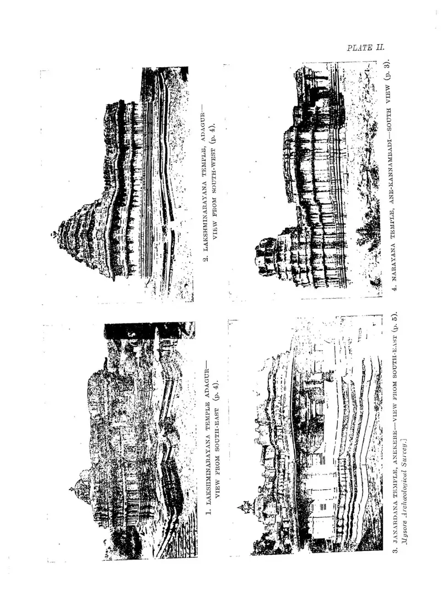
- LAKSHMINARAYANA TEMPLE ADAGUR— VIEW FROM SOUTH-EAST (p. 4)
- LAKSHMINARAYANA TEMPLE, ADAGUR— VIEW FROM SOUTH-WEST (p. 4)
- JANARDANA TEMPLE, ANEKERE—VIEW FROM SOUTH-EAST (p. 5)
- NARAYANA TEMPLE, ANE-KANNAMBADI—SOUTH VIEW (p. 3)
Part II: Study of Monuments and Ancient Sites
Ānekannambāđi
Náráyapa Temple; Interior; Images; Ađagur; Lakshmīnáráyapa Temple; Images; Dīnđagūr; History; Kēśava Temple; Images; etc.; Mallēśvara; Ānekere; Janárdana Temple
This village is about 15 miles south of Holê Narasípur Town. Tradition says that in the ages gone by an elephant roamed about in the forest nearby in search of water and found it here in a pond called ânegunđi near the village, which is still pointed out as the place where it quenched its thirst. The Srî Nârâyana temple situated in the village is a very good example of the early Hoysala style and may be roughly ascribed to the first quarter of the 12th century in the absence of more definite data to decide its date (Plate II, 4). It was reported that a copper plate grant was found in the village about 12 years ago and was taken away by one Narasimhia of Galigekere. Perhaps, that would have thrown some light on the age of the temple. The temple faces east and consists of three garbhagrîhas , one navaraïga , one porch, and a sukhandsî between the navaraïga and the main cell. (See Plan on Plate IV.) The peculiarity of this structure is that the main cell has a star-shaped plan of sixteen points as in the case of the temples at Arsîkere and Bêlûr, while the other two cells are of the usual rectangular shape. The design of the temple is simple, there being no carvings on its outer surfaces as in the temples of Bêlur and Arsîkere. A later brick gôpura, ugly and now in ruins, mars its beauty to a considerable extent.
The pillars of the navaraïga are circular in shape and well carved. Those of the porch are fluted and nicely polished. The ceilings of the navaraïga are of two types: the central ceiling and those at the four corners are deep with elaborate patterns, while the remaining four are flat with rosettes. The ceilings of the garbhagrîhas and sukhandsî are also flat and adorned with flowers. The ceiling of the porch, however, consists of a plain slab of stone.
The main image is that of Kêșava, five feet high, standing on a Garuđa pedestal of about two feet in height. The figure holds in its four hands clockwise 1 : padma, šankha, chakra and gadâ.
The northern cell enshrines a seated figure of Narasimha holding chakra, padma, gadâ and šankha, with the goddess Lakshmî sitting on his left lap. The south cell contains an image of Vênugôpâla which is in every way similar to the image found in Belavadi, Chikmagalur Taluk (Plate III, 3). Images of Nammâlvâr and
1. Throughout these notes, whenever the symbols held in the hands of an image are described, they are mentioned in a regular order, commencing with the front right hand and running clockwise.
Râmânujâchârya are kept in the sukhanâsi and those of Mahishâsuramardinî and Vighnêsvara in the navaranga. All these images are fortunately intact and in a good state of preservation.
A new inscription stone was discovered in front of the village gate. It contains only a few lines which are quite illogible.
AĐAGÙR.
This village is about four miles to the east of Halêbîd. Its original name was Vuđugûru and it was once very flourishing.
The Lakshmînârâyana Temple in the village is a trikûṭachala in the Hoysala style (Plate II, 1 and 2). It consists of three garbha-grihas , one navaranga and one porch with a sukhanâsi between the navaranga and the main cell. The temple stands on a platform, four feet high, which follows the contour of the plan of the temple. From an inscription found in the temple ( Vide Ep. Carn. Bêlur Supplt. 376), it can be presumed that this temple must have been erected in the 11th century A.D.
The ceilings in the temple are well carved and the stone tower over the main cell is well preserved and surmounted with a stone finial. The outer surface of the wall is not carved with images; nor are there any elaborate carvings in the interior either. The navaranga has polished pillars and two niches, the one on the right containing an image of Nammâlvar and that on the left a few loose Nâga stones.
In the main cell, there is a seated image of Lakshmînârâyana, about five feet high, over a pedestal of about two feet. Goddess Lakshmî is sitting on his left lap. The attributes of the image are: śaṅkha, padma, gadâ and chakra. The front left hand goes round the waist of his consort.
The south cell contains an image of Vênugôpâla (Plate III, 2) about four feet high, standing on a pedestal, about one and half feet high. This image is a little too slender in proportion and not so much overworked with ornaments as in the case of the image at Ânê Kannambâđi. It cannot be asserted that it is of Hoysala workmanship.
The north cell contains a beautiful and well proportioned image of Sarasvatî, (Plate III, 1) a figure of about four feet high, sitting on a swan pedestal of about one and half feet, holding rosary, aṅkuśá, pâśa and pustaka.
The surroundings of the temple are kept in a filthy condition. The stones of the basement are loose and falling down.
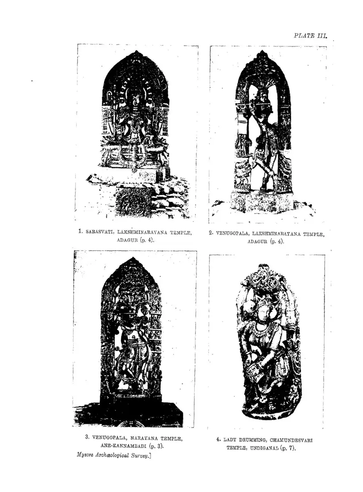
- SARASVATI, LAKSHMINARAYANA TEMPLE ADAGUR (p. 4)
- VENUGOPALA, LAKSHMINARAYANA TEMPLE ADAGUR (p. 4)
- VENUGOPALA, NARAYANA TEMPLE ANE-KANNAMBADI (p. 3)
- LADY DRUMMING, CHAMUNDESVARI TEMPLE, UNDIGANAL (p. 7)
DINĐAGÙR.
This is a village about seven miles to the north of Channarayapatna Town.
History. The village is also called Mallikârjunapura in the inscriptions. A copper plate grant dated 1209 A.D. mentions that Pañdita Dañdinātha, one of the ministers of Vîra Ballâla Dêva, begged the king for the grant of this village and converted it into an agrahâra calling it Mallikârjunapura and apparently built also the two temples that are in the village, viz. , Kêsava and Mallêsvara. An inscription dated 1232 A.D. is found inside the Kêsava temple.
The Kêsava temple is simple. It consists of a garbhagriha , a sukanâsi , a navaranga and a mukhamantapa and has a low stone gôpura . The wall surface is plain, so are also the panels above the Chajja and on the axial lines of the tower. The ceilings are all well carved, the central one being domelike.
The Kêsava image, about six feet high, stands on a pedestal, one and half feet high, and holds padma, șankha , chakra and gadâ . The lintel over the navaranga doorway has Vênugôpâla on it, while Gajalakshmî is carved above the garbhagriha doorway. The temple is in a dilapidated condition, one of the ceiling slabs having fallen showing the gap above. The outer prâkâra has disappeared and only the front entrance gate is standing. The temple is endowed with some Inam lands which are auctioned every year, and it is stated that there is also some amount at the credit of the temple in the taluk treasury. It appears an estimate for Rs. 1,300 has been prepared by the Public Works Department for constructing a compound wall round the monument.
The Mallêsvara temple is similar in plan and elevation to the above temple. One of the ceilings has been renewed to admit light inside.
Mallesvara. The ceilings in this temple are all well-carved. The temple seems to have undergone repairs some time ago. Vegetation is already growing again on the temple. An inscription on one of the back panels of the temple dated 1651 A.D. speaks of the construction of some manțapa by one Dođdayya.
ÂNEKERE.
This village is about three miles to the west of Channarâyapatna. Its original name in Kannađa was Ânegała-kere and it is also called Janardana Temple. Kêsavapura in the inscription. In the heart of the village, there is a beautiful temple in the Hoysala style dedicated to Channakêsava (Plate II, 3). The temple faces east and consists of a garbhagriha , a sukhandśi , a navaraṅga and a porch standing in the centre of a courtyard surrounded by a covered verandah. A cell is attached at the centre of each of the northern and southern verandahs, both of which are empty now. At the centre of the eastern verandah is the porch giving entrance to the courtyard.
The temple belongs to the early Hoysala style and its date goes prior to 1191 A.D. as it is mentioned in a copper plate inscription of that date found in the village. An inscription found on the right side wall of the entrance gateway seems to state that the enclosure walls of the temple having fallen, one Byrappa Nâyaka got them rebuilt in the year Śubhakritu. This rebuilding might have been a century or two later. The temple on the whole is well-conceived, and the work-manship simple but bold and elegant.
The entrance porch has a stone bench on either side and so also the porch attached to the temple. Figures of Gajalakshmti are carved on the lintels of the garbhagriha and the navaraṅga , while the sukhandśi lintel is left uncarved.
The pillars in the navaraṅga are of the usual shape; but those in the verandah are plain and round. All the ceilings are richly carved, each one differing from the other in design and execution. The central ceiling is the most ornamental one and has a pendant carved in the shape of a huge conch hanging down several feet from the top.
The image of Kêšava, called Janârdana by the people, is about six feet high standing on a pedestal about one and half feet high. The attributes are padma, śañkha, chakra and gadâ. The original image having been mutilated by some enemies during troublous times, the present one was installed some time ago. Even this is broken and it is learnt that an order for another image has been placed with Mr. Śilpa Siddhânti Siddhalinga Svâmi, sculptor of Mysore.*
The tower over the sanctum is also of stone and in a good state of preservation. The dedicatory slab in front of the gôpura is left uncarved.
The present condition of the temple is very deplorable; much of the surrounding verandah has fallen and the rest is in the course of tumbling down. All the stones are, however, lying on the spot and it may not be very costly to rebuild the verandah.
It is reported that the temple enjoys no Inam at present, all the Inam having been resumed at the time of the Inam Commission.
Unđiganál
Châmunđēśvarī Temple; Images
This is a village far in the interior of the Arsikere Taluk situated in the midst of hills and scrub jungle not easy to reach even by the ordinary conveyance. The name of the village is mentioned as Unđigeya Hal in the inscriptions.
* It is learnt that the new image has since been installed in the temple.
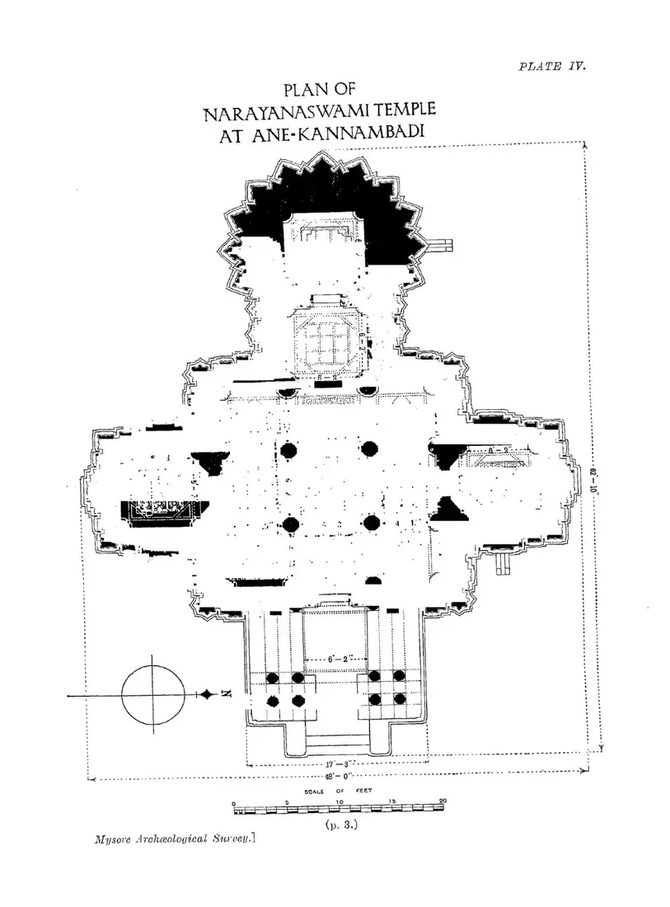
- PLAN OF NARAYANASWAMI TEMPLE AT ANE-KANNAMBADI (p. 3)
Cited in the text: p. 3 ↩
The temple here is an unimportant structure at present, though there are traces here and there of its ancient grandeur, with evidence of subsequent influences. The temple which faces east is trikûṭâ-chala in plan consisting of three garbhagyihas , one sukhandāsi , a navaraṅga and a mukhamaṇtapa . The navaraṅga is an enlarged hall consisting of 25 ankaṇas instead of the usual nine. The mukhamaṇtapa is also wide and deep and has six ankaṇas.
There is an image of Śiva in the cell opposite to the entrance, an image of Kêśava in the north cell and a figure of Mahishâsuramardinî or Châmuṇdêsvarî in the south cell. The temple is called Châmuṇdêsvarî temple though the main image appears to be Îsvara as stated above. The reason for this seems to be that the Châmuṇdâ shrine must have been the most ancient portion of the temple and the rest of the structure must have been added later on.
An inscription stone standing to the left of the temple states that one Munijetṭi built this temple during the reign of Vishnu Vardhana Hoysana Dêva at Bankâpur. Another inscription, fixed to the right of the temple which is dated 1276 A. D. refers to some endowment to the temple and calls the deity “ Nimbajâ Devi.”
The four central pillars of the navaraṅga are well carved Hoysala pillars, while the rest are ordinary Dravidian ones with square mouldings and octagonal shafts. The ceilings are all of flat simple squares crossing one another, with a flower in the centre.
An image of Gaṇêśa, another of Bhairava, two bulls and a small Saptamâtrikâ group are kept in the navaraṅga . Another image of Gaṇêśa is kept in a niche.
Against the wall of the navaraṅga to the right of the Châmuṇdêsvarî shrine, a beatiful image of a madanikâ figure (bracket figure) is kept (plate III—4). This is a female figure, in a dancing posture, beating a drum. The carving is as good as in the bracket figures of Bêlûr and Halêbid.
Images.
The gôpura over the main cell is of brick and mortar and positively ugly.
To the south of the temple just behind the Châmuṇdêsvarî shrine, a high swing frame or Uyyâlekambha stands and in front of it there is a small maṇtapa of three ankaṇas with beautifully carved stone pillars in the Hoysala style. This latter has now been converted into the living quarters of the Archaka.
In the cell behind this maṇtapa is a female figure on a low pedestal, standing on the back of a peacock, with six hands, holding the attributes of Brahma, Vishnu and Śiva; viz. , from the left—rosary, trident, discus, conch, drum and water-pot. This is perhaps an aspect of Śakti.
Two figures of Jeṭties (wrestlers) are carved on either side of the Śakti shrine and two on the side pillars.
Two new inscriptions were found, one on a pillar in front of the Châmuṇdêsvarî temple, and the other on a Mâstikal standing beside it.
Kolar District
Ālambgiri; Tirumaļanātha Temple
Murugamale
Veňkataramapasvāmi Temple; Moslem Dargas; Ruined Town; Muktagiri Maṭha
No heading in the body: this section starts at its printed page (8-10).
ALAMBGIRI.
Alambgiri is a village in the Chintamani Taluk. It has an old stone gate-way leading in from the east and a temple of Tirumalanâtha Svâmi, evidently of the late Vijayanagar days.
The latter's mahâdvâra tower is about 65' high and is of brick and mortar with plenty of stucco figures, now out of repair. The doorway is about 12' high and 1½' wide. On the inner side of the doorway are two granite figures in high relief: on the right side is a dancing woman, perhaps Môhini, standing at ease and hanging from creepers, with a monkey and parrot at the bottom; on the left is a huntress, also Môhini perhaps, about 4' high, from whose foot a man, (may be Dakshiṇâmûrti) is removing a thorn. This mahâdvâra is a later structure built to support a larger one of earlier days, which has also a Gaja-Lakshmî on the lintel. There are two finely carved tall pillars, 15' high, with interesting figures among which may be mentioned: anthropoid Gaṇḍabhêruṇḍa, dancing Kṛishṇa, Chandra, Hanumân, Śarabha, Narasimha, Hiraṇyakaṣipu and Lakshmî Narasimha.
To the right of the doorway, on the inside, is the kalyâṇamaṇṭapa which has five pairs of ornamental pillars, 12' high, the others being plain. It appears to have been built in two instalments, the portion with the raised dais being earlier.
The garbhagriha, which is small, contains a stone image of Veñkaṭêśa, 2½' high, accompanied by Śrî and Bhû. There are also metallic images of these deities serving as utsavamûrtis .
The Sukhanâsi (6' × 7') is also very plain, its doorway being about 5' × 2½'. The navaraṅga (20' × 20') is supported by ornamental square pillars of the Vijayanagar type with sculptures on each face. These pillars are only 6' high. The whole structure is of granite. The larger and later navaraṅga is about 10' high, with pillars of the Dravidian type. In front of it is a mukhamaṇṭapa having 15 pillars and pilasters, with the names of its builders carved on the floor.
The temple has a copper plate grant of five plates with the signature in Kannada, 'Śrî Veñkaṭêśa.' On the whole, the building has no extraordinarily interesting features.
Murugamble is a hill about 600 feet high and nearly seven miles to the north of Chintamani. The old Hindu fortress on the hill, which is of the early 18th century, is now in ruins.
The small Śiva temple on a low hill adjoining the town is a post-Moslem structure of no great importance. It is built on a rock and has, around it, a high compound wall enclosing an area of about 120' × 100'. Behind the temple is a tank which is the chief source of water supply to the town.
On the hill there is a small Venkataramanasvāmi temple belonging to the Pâlegar days. The temple of Chandramaulīśa has a garbhagrīha (7' × 7' and 6½' high) without any ornamentation, containing a small Linga :8" in height) and the utsavamūrtis of Šiva, Pārvati and Gaṇapati. The sukhanāsi (6' × 6'), which is also very plain, contains a small Basava and an image of Chandikêsvara. Flanking the sukhanāsi are two chambers (7' × 6'), the one on the right containing Gaṇapati and that on the left, Pārvati holding lotuses. The latter, which is about 3' high, is the best figure in the temple. The navaranga (25' × 25') has four plain pillars and contains a well ornamented Nandi, about 2' high and 3' long.
On the left side of the hill, near the foot, there is a large cave called in Telugu 'Êđûrlagavi.' According to local tradition, the people of seven villages used to take refuge in it when hostile armies approached.
Fakîr Shâh Wâli Darga is a brick structure, about 40' × 20', with a number of small minarets. It has two chambers, the one on the east containing two tombs and having a low dome about 15' in diameter. One of the tombs is of Fakîr Shâh himself and the other, of his wife. The back chamber of this darga has the tombs of Fakîr Shâh's children. The Shah is said to have had a friend, Khâki Shâh Wâli, whose Darga, situated at Nimbkâinahalli, about 3 miles further to the east, is said to be a large and important structure with a tank, etc., built by Hyder and Tippu.
On the west side of the hill, at its foot, is a ruined town with a fortress and fortgate called 'Purânipêt' or 'Chalamakôte,' said by the The Ruined Town. Moslems to have been built about three hundred years ago by one Latîf Sâhib who came from Bijapur. In this ruined town there is a temple of Vênugôpâla, a plain structure intact and very similar to the Îsvara temple in the new town, but slightly larger. Its garbhagrīha has a Vênugôpâla image, 2½' high, of the Pâlegar days, flanked by a goddess on each side. The old town was deserted after the great famine of the cyclic years Dhâtu and Îsvara.
Two furlongs away is a group of new houses forming a Mutt called Muktagiri Matha. founded by one Siddhalingasvāmi about thirty years ago, near the perennial spring called 'Chakra tîrtha.' The latter originates in a cave and is led to a finely built little pond (6' × 6') with a 'Basavanabhâvi' leading into it. The pond appears to have been an old Hindu structure. Below it is built another larger tank now in use. A broken slab containing the Saptamâtrika figures is kept in the cave.
Near the Mutt is a new temple containing an old blackstone Linga, about 2' high (on a pedestal 4' high), apparently of the Chôla times. It was removed here from the old town at the foot of the hill.
2
About two furlongs further on, is the Muktēšvara temple which is a small structure. To its north on a boulder is found a Kannađa inscription of six lines, which belongs to the reign of Râjendra Choła (See Ep. Carn. X, Chintamani, 153).
In the neighbouring sloping ground plenty of Pându-guđis are said to have existed in the past and potsherds are found strewn about even now. Up the slopes of the hill neoliths can be collected. A sample was obtained.
Neoliths
Haraļakōtē; Šrīnivāsapur Taluk; Old Town Site; Bána Inscriptions
HARAŁAKÓŹE.
SRINIVASPUR TALUK.
About five miles to the east of Srinivaspur, is the ancient site of HarałakôŹe. In the water courses on the way at a depth of 4' to 6' are seen plenty of potsherds sticking out of the earth. On the south side of the old town are large boulders arranged like a fort and the gound slopes northward. In the high ground, certain creeks are found through which appear bones and pottery. The pottery ware, however, is peculiar, some pieces being glazed red and black and some resembling the Chandravalĵi dolmen pottery. Those of the latter type are found 4 feet below the surface.
In the jungle are two Bâna inscriptions (Ep. Carn. X Srinivaspur 5 and 6) both more than half buried in red alluvial earth.
Bana Inscriptions.
To the northwest of the hill (No. 1), about a hundred yards away, there is a large slab of granite (4' × 5') on which is a relief figure of a man (4') fighting a tiger in defence of a cow which stands behind him. Above are drawn a chămara bearer and a goddess. This is probably a vîragal of Bâna times. Another slab found on the way has a trident mark.
Between the next two hills (Nos. 2 and 3) there is a mound, about 40 feet in diameter and 12' high, which looks very artificial on account of its smooth sides formed of laterite gravel. It looked like a Buddhist stúpa mound but its contents were not examined.
A cave, winding and long, leads into the side of hill No. 3. On the top of this hill, a modern flat stone slab is set up as a pillar. The old pillar inscription has now disappeared.
Part II: Study of Monuments and Ancient Sites › Kolar DistrictĀvaņi
Inscriptions; Vālmtiki Cave; Lava-Kuša Guđi; Kāntāramma Temple; Dhanushkōti; Hill Top; Sitā-Párvatī Temple; Old Site; Īśvara Temple
Âvani is a well known place of pilgrimage about 10 miles to the south of Mulbagal. Close to it is a hill connected by tradition with an episode in the life of Sitâ, the heroine of the Râmâyaṇa.
On the way to the hill at its foot stands a large rock on which are said to have been a number of inscriptions now lost by quarrying slabs.
Inscriptions.
Ep. Carn. X. Mulbagal 61 exists but another copied by Rao Bahadur Narasimhachar is reported to have been lost.
'Meşlu banđe' is a single rock with about 200 steps cut in it. The piled rock called 'Toşlu gunđu' is associated with the story that Sitâ watched from its top the battle between her sons standing on a rock half-a-mile away (Lava-Kušara banđe) and Râma standing on a similar rock (Râmana banđe) near Gañja gunđe.
To its north is a rock on which are numerous heaps of three or more stones which childless mothers erect as apologies for temple towers and after a year return with their children to offer worship. The children are named Râma, Lava, Kuša and Sitâ. The Râmêşvara temple in the town was probably similarly built by Dêvâmbikâ (Ep. Car. X, Mulbagal 38), a Nolamba Queen who lost her first son Vîra-Mahêndra Nolambâdhirâja and desired to see her younger son Iriva Nolamba come to the throne.
A little higher up is a cave called 'Vâlmîki-gavi' with a bas-relief of a şirshi in padmâsana wearing 'jatâ' and holding a rosary. There is an inner cave pointed out as the birth chamber of Lava and Kuša. The cave leads further downward. Near Vâlmîki is a figure of Vîrabhadra with Daksha by his side engraved on the rock. It is pointed out as Janaka.
Nearby is an old temple with five large black lingas, probably of the Chôła times. These are attributed to the five Pânđavas.
A doorway leads inside a fortress with two gates piercing a rude stone wall. Inside it is a small pond pointed out as the 'Kashâya tîrtha' where Sitâ is said to have washed her clothes. Near it is a 'hâlâđe' (milk-feeder) engraved on the rock.
A little to the north and facing north is a large overhanging rock converted into a chamber (15' × 12' and 6' high) with a pair of green stone lingas, 9" high, called the 'Lava-Kuša' lingas.
Lava-Kusa Gudi.
The temple is called 'Lava-Kuša guđi.' The roof rock has about twenty cavities, less than 1½' deep, which are pointed out as 'Lava-Kušara toşlu' ( i.e. the cradle of Lava and Kuša), 'Sitâ hanđi' (the cooking pot of Sitâ), etc., said to have been overturned by Hanumân to prevent people from treading on them. The hanđe, being of granite, gives a metallic sound. On the floor are a number of inscribed names of votaries: Dêvamma, Kamalamma, etc.
To its south is the Kântâramma temple, a small structure of the Chôła type, with a garbhagrîha (6' × 6'), a sukhanâsi (5' × 5') and a navaranga (14' × 12'), the last having four rounded pillars of granite, 6' high,—the work done under the Chôła governors of Ballâla III. The black linga (1½') in the garbhagrîha is mounted on an octagonal pedestal ( 1\frac{1}{4} ' high). The navaranga has its real doorway to the south, but there is a later one to the north opposite to the Sitâ temple. On the lintel of the main door is Gajalakshmî flanked by Châmara bearers. On the rock in front, votaries have inscribed a trident (triśúla).
About a hundred feet higher up, there is a cleft in the rocks, 100 feet long and 6 feet broad, called 'Dhanushkôti.' Lakshmaṇa is said to have created it for Sitâ's bath. On the northern rock are numerous inscriptions of names, divine feet, standing figures, bulls and lingas, among which is E. C. X, Mb. 76 of Sugatûr Tamniah's sister and one of Ilavañji Vâsudêvarâya (E. C. X Mb. 78). Certain inscriptions, for instance, Mb. 79 (a) and (b), are now missing on account of quarrying. Such interference with the valuable ancient records should be strictly forbidden.
Inscription No. 77 is flanked by two large figures, five feet high. There is also a Telugu inscription in five lines of Pedda Appayya. On the south is a white patch shown as Lakshmaṇa's left foot. Fifty feet higher up is a large boulder with a horizontal crack shown as Sitâ's jewel box. To its east, a boulder with two horizontal clefts is pointed out as the place where Lava and Kuśa tested their swords before fighting. Near it is the pool 'Brahma tîrtha.'
On the top of the hill stands the famous temple of Sitâ. To the west is a cave pointed out as the place where Râma and Sitâ played at dice. At the western end of the hill top is a large rock over which is another boulder, thus forming a horizontal crevice ( 1\frac{1}{4} ') in between. Here, women, desirous of children, roll from the west side to the east and after bathing in the 'Dhanushkôti' pool, they pray to Sitâ for children.
To the north is a rock called 'Kurchi guṇdu' (chair boulder) on which Râma is said to have sat while Sitâ entered the fire in the cleft to its west. The rock looks like a high-backed chair. A little lower down is another rock where Râma's sacrificial horse is said to have eaten into the stone causing a cavity ( 3' \times 3' \times 2' ).
The temple of Sitâ-Parvati is a modest structure perched on the top rock which slopes to the east. It has only a garbhagriha ( 12' \times 3' ) and a mukhamanṭapa of twelve rough pillars. The image is in a rock shelter formed by an overhanging boulder. It appears to be a cave temple of the Nolamba-Pallava period. On the boulder is a modern tower of brick and mortar. The temple doorway ( 5' \times 2\frac{1}{2} ') is of granite stone with ornamentations similar to those of the Nolamba period.
The shrine has two images, about 2\frac{1}{4} ' high, of which the one now worshipped has the following attributes (clockwise)—abhaya, padma, padma, dâna. But the other stone image, only in relief, is more beautiful and was dug out about twenty years ago from the back of the cave. It was not present during Mr. R. Narasimhachar's visit in 1911 A. D. Evidently, it is the original image buried either by neglect or for fear of the Moslems. It has a fine kirtṭa and the following attributes in its hands—abhaya, chakra, śañkha, kaṭihasta. Vaishṇavī-śaktī has also the same signs. But this image is possibly of Sītâ to whom the whole hill is dedicated.
Before the ruder and more recent image is a 'yantra' said to have been set up by Ādi-Śañkara. There are several modern inscriptions in Kannaḍa characters on the rocks near about. One of them in the manṭapa reads 'Konêriya-Kambaya Koṭāra māḍisida'. This refers to the construction of the temple or at least of a part thereof.
The most important monument at Āvaṇi is the temple of Rāmēśvara which is of considerable antiquity.
The mahâdvāra, yāgaśāla and kalyāṇamanṭapa are of the thirteenth century when Iļvañji Vāsudēvarāya was governor of the province.
The Old Site.
Opposite to the south mahâdvāra is E. C. X Mb. 38 on a green stone pillar called 'Nāgara kunte' or 'Šesha tīrtha'. To its south is a part of the basement of a large temple with a Tamil inscription mentioning Jayaṅgondaśoļa-manđalam, etc. Numerous parts of pillars are lying about. Among the nāgarkals is a piece of inscribed stone with Haļe-Kannaḍa characters. An inscription is submerged by the water of the tank. Local tradition states that a Vishṇu temple was existing here formerly. To the west of the tank are three viragals with inscriptions. A granite pillar, said to have been called 'Raṇastambha' by Mr. R. Narasimhachar, stands nearby with an inscription. A rock by its side also contains an old Kannaḍa inscription of seven lines (E. C. X Mb. 62).
In the group of Šiva shrines we can see a distant development from the Māmallapuram style of architecture. The arrangement, perforated windows, lines of light and shade, pilasters, friezes, lions and other ornamentations are Pallava in origin. The vimānas, however, are all modern and of brick. To the north of Lakshmanēśvara, above the Sōmasūtra there is an inscription reading 'Tribhuvana-kartāra-bhaṭar' and an image is seated by its side on a padma with the sacred thread, jōlige or rice bag, rudrāksha-mālā and lamp. The perforated screens have Dakshiṇāmūrti, Tāṇdavēśvara and Chāmuṇdâ figures and scroll work. The friezes contain elephants, yālis, lions, etc. The central ceiling of the Bharatēśvara and Lakshmanēśvara navaraṅga has the 'Dikpālas' with Umāmahēśvara in the centre. It is not certain whether these come from Iļavañji Vāsudēvarāya's time or from the late Pallava period. The pillar to the east of the Rama temple is 14 feet high and has a Noļamba inscription.
In the Rāmēśa navaraṅga, i. e. , the second one, there are, in front, figures of Iļavañji Vāsudēva (4' high) and his brother Khaṇde-Rāya (4½' high) who ruled at Kuruđumale for a long time as subordinates of Ballāla III. Between these is a figure of Sūrya and behind a Tamil inscription. There is also a large Nandi in the navaraṅga. The pillars are composite with a rearing lion in each corner. In the first navaraṅga which is of Nolamba times, the pillars are round and sixteen sided.
The sukhanāsi has a fine figure of Kâmâkshî (brought from Kaṭhâri Sâluva's temple) with the following attributes—abhaya, padma, dâna. The garbhagriha (10' × 8') contains a large black linga.
In Vâsudêvarâya's navaraṅga to the north is a small cell with an image of Sîtâ-Pârvatî, three feet high, which, being of poor workmanship, raises a doubt whether it belongs at all to the 13th century. To the right of Vâsudêva Râya is a Nârâyaṇa image.
The Añjanêsvara and Şatrughnêsvara temples are small and plain structures, also Pallava in form.
Virūpákshapura
This town which was destroyed by Moslem troops under a raider locally called Wâlis Mêdis, contains a very large temple of the Dravidian type with three mahâdvâras of which the first was a gigantic structure. This is now ruined, the second partly ruined and the third tolerably intact. The second has a great compound wall of stone running round an area measuring about 350' × 250'. The third mahâdvâra has a gôpura (about 50' high) of brick work like the Vijayanagar temples. The doorway (12' × 6') is of granite with an inscription of six lines in Kannaḍa (E. C. X Mb. 96). The threshold and stones nearby bear Tamil inscriptions. The temple itself has a copper plate inscription of Şaka 1353 corresponding to A. D. 1431.
The walls of the temple are plain. The pillars are 12' high in the mukhamaṇtapa. The floor of the manṭapa is full of votary effigies and names.
The Durgâ temple has a figure, about 5 feet high, of Durgâ seated on a lion to front, holding khaḍga, chakra, śaṅkha and triśúla. The whole group is made up of one greenish stone.
Part II: Study of Monuments and Ancient Sites › Kolar DistrictKuruđumale
Kuruđumale, about 6 miles north-west of Mulbagal, was a local capital in the Hoysala times. It has several interesting antiquities.
Mahâ-Gaṇapati Temple
Colossal Gaṇēśa; Somēśvara Temple; Images; Site of Old Town
1914. p. 21). Formerly it was perhaps in the open and the Vijayanagar people may have constructed a maṅṭapa covering it.
The navaraṅga is a large one ( 25' \times 25' ). In it, to the south, is a large figure of Kumâra on a peacock, about 5 feet high in all—a beautiful figure of greenish stone, which was rescued from a ruined temple situated to the south. His twelve hands are thus disposed: abhaya, pâśa, chakra, khaṅga, aṅkuśa, súla, vajra, kôdaṇḍa, buckler, (doubtful), gadâ and dâna.
An extra aṅkaṇa forms the sukhanâsi ( 10' \times 8' ). This and the garbhagriha appear to be partly of greenish stone. The doorway is flanked by two fine ornamental pillars. The garbhagriha ( 20' \times 14' and 16' high) is a large one with two pillars in front. These pillars have 16 solid shafts between cubical mouldings with carvings on them. Near the pillar on the north are two figures, one of Vaishṇavi, recently made, and the other of Bhairava, neither of them being important.
The Mahâ-Gaṇapati image is seated on an oval seat, 1\frac{1}{2}' high, which is raised on an oblong pedestal, 2 feet high. The oval seat and the image are all of the same green stone and form one piece.
Colossal Ganesa.
The image is a beautiful, well-proportioned one about 8\frac{1}{2} feet high excluding the seat. It holds the usual tusk piece, aṅkuśa, pâśa and apûpa, to the last of which the god is helping himself with his trunk. He wears a snake girdle, his sacred thread, necklaces of 'rudrâksha' and golden 'rudrâkshi'. A snake encircles him like the sacred thread. The girth of the belly is about 12 to 13 feet. Near him, on the west face of the north east pillar, is the relievo image of the builder of the temple.
The finest structure at the place is the Sômêsvara temple. It has a garbhagriha ( 20' \times 10' ) and a sukhanâsi ( 10' \times 8' ) with an ornamental doorway flanked by two octagonal pilasters well carved with beaded work as in the Chennakêśava temple.
Somesvara Temple.
The extra aṅkaṇa is also seen here. The navaraṅga ( 25' \times 25' ) is supported by four pillars with sixteen sided shafts and cubical mouldings. Each face is beautifully carved with finely finished Śaiva and Vaishṇava images and dancing figures. Near the west wall of the navaraṅga are kept a Gaṇapati and a Nagarêsvara linga brought from its own temple, now ruined. Against the north wall are now kept the following in order :
(1) Bhairava with canine teeth, moustaches and flames near head, holding triśúla, ḍamaru, sarpa and kapâla.
(2) Dakshiṇâmûrti with chinmudrâ, sarpa, jaṭâ and tâlapatra. Crossing his left leg over the right he is seated on a hill treading on a 'râkshasa'; a 'rishi' is listening.
(3) A linga.
(4) An âlvâr with hand in chinmudrâ, jațâ and no 'yajñòpavita'.
(5) Chennakéšava (brought from his ruined temple 12 years ago), about.
(6) five feet high, with the following attributes : abhaya, chakra, šañkha.
(7) kaṭihasta—and standing between Šri and Bhû, 4 feet high. The image is possibly Veñkaṭéśa.
(8) Small Hanumân (9'').
(9) Râmânujâchârya (also brought from the Chennakéšava temple), 1½' high, with the daṇḍa resting on shoulder and hands folded in añjali. He is seated in padmâsana and wears the sacred thread, śikhâ, tulasī-mâlâ and a necklet.
(10) A smaller Chennakéšava, similar to No. 6 (3' in height).
(11) A female devotee, 3' high.
(12) A Nâgarakal.
(13) A male devotee.
Against the east wall are the following :
(1) Nañdi.
(2)
(3) Iļavañji Vâsudêva Raya and his consorts.
(4)
(5) Nañdi.
(6) Two male devotees with sacred thread, shown as Jakaṇâchâri and
(7) Dakaṇâchâri. The figures are 9'' high and are cut out in relief on the wall.
Each one of the figures on the pillars is well executed. The figure of a lion killing an elephant on the south east pillar (bottom, south face) may refer to the Hoysala conquest of the Gañgas.
The navaranga door is to the south and has in front a porch of 12' × 10'. Two pillars of the latter are as beautiful as those of the navaranga.
The vimânas of the Sômêšvara and Pârvati temples are brick structures of the composite Dravidian type midway between the Pallava and Vijayanagar periods. They are of the Chôla form but smaller. The garbhagrīhas of this period have a wooden beam inserted among the ceiling slabs to let down a chain for a water vessel (dhârâpâtra) for abhishêka.
To the north stands the Kâmâkshî temple of similar design, but plain and without ornamentation. The image is beautiful and five feet high. (Hands : abhaya, padma, padma and dâna).
North of the town are two pillars resembling a tòrana. Near them is pointed out a place where a Vaiśya woman named Šríyamma performed 'sati.' Plenty of Virarâyi haṇas of the ordinary kind are said to be found nearby. On the site of the old
Site of Old Town.
town can be picked up coins of the Elephant type with sun and moon on top and chequered reverse. These coins may be of not merely old Mysore but also of late provincial Vijayanagar types. Vira Ballâla III ruled all this country and issued the Virarâyi haṇas. (See Annual Report for 1929, page 27).
Near the hill and spread over several square miles are ruined walls showing the great extent of the town. Worked stones are turned up in every excavation : and among these are reported to have been found a 'Buddha' (Pârśvanâtha probably) and numerous other images. The 'Buddha' is now said to be in Kolar or in the Buddha temple at the Kolar Gold Fields. The place is very promising for excavation.
In the pûjâri's house are several copper images of Gaṇapati, the most notable one of which is a small figure of a ten-handed Lakshmî-Gaṇapati with 'Balamuri' trunk (to right), seated on mouse and with a goddess on his lap.
Part II: Study of Monuments and Ancient Sites › Kolar DistrictMulbagal
Añjanėya; Viṭhala and Sōmēśvara Temples
Mulbagal (correctly—Mûđala bâgilu or Eastern gate of the highland) was the seat of the Viceroys of the Vijayanagara Empire. It Anjaneya Temple. has a number of old monuments. The largest building in the place is the Âñjanêya temple. Its mahâdvâra is a late Vijayanagar structure with a modern (19th century) gôpura, about 55 feet high. The compound is about 250' × 150'. The main temple is now in the form of a 'trikûṭâchala' with three vimânas of the Vijayanagar type. It has a 'garbhagriha' (10' × 10'), a 'sukhanâsi' (10' × 8') and a 'navaraṅga' (28' × 25') with several añkaṇas converted into rooms like the 'Śayanamaṇtapa.' The floor is full of votive relievos and names which deserve detailed examination.
The main image is a colossal bas-relief, about 10' high, and of no great sculptural importance. In the sukhanâsi are kept the 'utsava' images of the Râma group. The temple has in all ten gods which are worshipped.
The Viṭhala temple also belongs to the Vijayanagar period. The mahâdvâra, about 40' high, the gôpura and prâkâra wall are all in ruins, Vithala Temple. while the navaraṅga is leaking. The main building, however, is intact. The main god, about 5' high, has two hands—abhaya and śankha—and Śrî and Bhû on the sides. The 'utsava mûrti' is not Vithala but Janârdana and has four hands with âbhaya, chakra, śankha and gadâ (?) On a floor slab in the mukhamaṇtapa is a Kannađa inscription.
At the back of the prâkâra wall, with face to west, is the Krishṇânañda maṭha with a Vênugôpâla image.
The Sômêśvara temple is a very plain temple of granite with a natural linga, about 1' high, on a low seat, 4" in height. The main temple Somesvara Temple. consisting of the garbhagriha (8' × 8'), the sukhanâsi
3
(10' × 8') and the goddess' shrine appears to be of the time of Ilavañji Vâsudêva Ráya as is shown by an inscription in Grantha characters on the basement of that portion of the outer wall of the sukhanâsi which is now included in a strong room. The extra anikaṇa, the navaraṅga (excluding its outer walls which are also of Vâsudêvarâya's time) and the rest of the temple are all of the Vijayanagar period. The pillars in the navaraṅga are, as in the Vijayanagar period, square and have carved figures. The image of Dêvî (Kâmâksht) is 3½' high. In the compound lies a beautiful stone image of Kumâra with the peacock's head broken.
Hydēr Váli Darga
No heading in the body: this section starts at its printed page (18).
The darga is a Hindu temple facing east, converted into a Moslem tomb. In the navaraṅga are two tombs of Hyder Vali and Haji Hyder Vali Darga. Maccai. The door is evidently of a temple with the usual ornamental work. The old pillars are still seen in the navaraṅga and mukhamaṇtapa.
Between the navaraṅga and the mukhamaṇtapa there is a pillar of the square Vijayanagar type, which is said to be of glass but is really only of stone. The pillars have been deprived of images except the ornamental floral work and lion.
The south door is also of a temple. The old temple tank is situated on the north (200' × 150').
The mukhamaṇtapa is too well carved to be a work of the Vijayanagar period. If it is the latter, the workmanship is surprisingly good. Probably it is of earlier times.
Kolar
Višvēšvara Temple; Antaragange; Vishnu Image; Vībhútipura
The neighbourhood of Kolar has many places of archæological interest. One of the most popular spots is the source of the Antaragange, a stream taking its rise on the Kolar hill. Nearby is the temple of Viśvêsvara, a small Dravidian structure, with its garbhagrîhas facing east and opening into a two-pillared navaraṅga. The whole temple is very plain and appears to date from the Pâlegâr days. The linga (2' high) in the central garbhagrîha and four others kept in the navaraṅga seem to be old ones of the Gaṅga and Chôla days rescued from the ruins of the temples in the neighbourhood. In the right garbhagrîha is Gaṇêsa and in the left one, Pârvati. A small Chandikêsa image is kept in the navaraṅga as also a small modern looking Nandi. The outside of the temple has a row of bas-relief figures of Śaiva images, some of which have been used for a parapet wall nearby. A new verandah has been constructed in front of the temple. Two rooms meant for Government Officers adjoin the temple on the north. The temple is not of archæological or architectural importance.
The stream itself takes its origin among the rocks to the south of the temple Antaragange. and is led by a drain into a small tank (3' deep) from which another drain leads it through the mouth of a bull to the large tank (50' × 35') below. Therefrom the water flows down towards Kilukôte. It is a point for consideration whether the dynastic name 'Gañga' may not have originated from 'Antara-Gange.' Above the bull from whose mouth water falls is a 'brindâvana' and on its top a vimâna of brick and mortar of the Pâlegâr times. In the centre of the lower tank stands a small manțapa with a Gaṇapati in it. A number of votive names like Kabe-Dêvaru, etc., are carved on a rock near it.
Kôlâramma's Temple
Sômésvara Temple; Makbara
No heading in the body: this section starts at its printed page (19-20).
Before the water issues out of the bull's mouth, it is made to wash the feet of a standing image (1½' high) of Vishnu in the form of Vishnu Image Veñkatêsa with the following attributes: padma pointing downwards, chakra, śañkha and kaṭihasta.
Vibhûtipura is a ruined old town at the foot of the hill. In it is a very old granite temple of Nîlakaṇṭhêsvara. On the basement of the back of the temple, there are three Tamil inscriptions. The temple has a garbhagriha (10' × 8'), a sukhanâsi (7' × 6') and a navaraṅga (22' × 22') with a passage ankaṇa (6' × 6'). The garbhagriha contains a black stone linga (1½' high) on a pedestal (3' high). The navaraṅga has a broken Gaṇêsa image. The garbhagriha and the sukhanâsi doorways are somewhat ornamental. In the ceiling of the garbhagriha there is only a padma but in that of the sukhanâsi there is a pendent bud in the padma. The navaraṅga has four round bell-shaped pillars. On the lintel of the navaraṅga doorway there is a linga with a bull on each side. The doorway is flanked by dvârapâlas. The mukhamanțapa is modern, perhaps of the Pâlegâr times, and on the side of the front left central pillar is a fragmentary Tamil inscription, probably part of an inscription stone, used as a pillar. The ruined vimâna of the temple is of brick and perhaps of Vijayanagar times.
In the town of Kolar, the most popular place of worship is the temple of Kôlâramma. It has no gôpura. The mahâdvâra (12' × 6') Kolaramma's Temple is finely ornamented with Gaja-Lakshnî in green stone on the lintel. On each jamb is a female attendant, about 4' high, in high relief and creeper work with sculptured figures in the convolutions. Most of these figures are terrible in look and highly vigorous though lacking in finish, being of granite. The square pillars (2' thick) inside the mahâdvâra have sculptured figures on each face—twelve on each, mostly in vigorous attitudes. The front figure to our left appears to be that of a Vijayanagar ruler or governor who perhaps got the mahâdvâra constructed. The other figures are of dancers, Kâli in various forms, Kâlingamardana, etc. The arches of plaster work on the sides are post-Moslem. The inner doorway of the mahâdvâra is also carved. On the jambs are large figures of females each of whom is having a thorn removed from her foot (Môhinî?). While this mahâdvâra has no prâkâra wall, the second one has a prákára with a manťapa of fourteen pillars of which four belong to the sixteen-sided type bearing, like the basement, Tamil inscriptions. The inner-temples and outer walls are covered with inscriptions mostly in Grantha characters with a few in Kannađa.
In the garbhagriha there are the stone images (2' high) of the 'Saptamâtrikâs' with Dakshipâmûrti to the right and Vinâyaka to the left. Of these, Châmunđâ faces south and is larger than the others, being 3' high in the posture of sitting and fighting. She has a simple floral 'tôraṇa' with a seat under which lies a demon. In her eight hands she holds: dagger, đamaru, sword, thumb and forefinger joined together in dancing pose, (doubtful), buckler, cobra, kapâla. She is dancing after killing the demon and her 'kirîṭa' has death's head in the centre with a cobra and the moon on the sides, while flames are darting forth upward. A 'Sriyantra' has been installed before her.
In the middle aŋkaṇa stands the image of Kapâla-Bhairavi, five feet high, with her face to the wall. She is naked with a dagger in the right hand and a 'kapâla' or bowl in the left and has kaṭihasta. This deity is said to cure scorpion stings.
In the southern cell which has four pillars, are stucco colossi of the 'Saptamâtrikâs' and the 'utsavamûrti' of Kôlâramma. It is not known whether the former have come down to us from the Pallava days when stucco images were popular. In the northern navaraṅga are a large image (3' high) of Chandikêśvara and a small one said to be that of a Chôla (Raja-Raja?). The former has tristûla, đamaru, sarpa and kapâla, wears 'rudrâkshamâlâ', is naked and has Gangâ and death's head in 'kirîṭa' with flames darting forth.
To the left of the original temple is an extension of the Chôla times. The original temple may be earlier than the Chôla period as seen by the stone parapet work outside. The Chôla figure (1' high) is really that of a Śrivaishnava with 'chakra' and śaŋkha branded on the upper arms and wearing the three-line 'vađagalai' caste mark on the forchead.
In the outer compound of the Kôlâramma temple, at the back, are kept three slabs of which one has a Kannađa inscription of ten lines and the other two are memorial stones of two persons who offered themselves to the goddess with their own hands. To the south of the inner mahâdvâra, there is a large slab (7' × 5') containing a battle scene. On the right (of us) is arrayed a large army of horsemen and footmen with a leader seated on an elephant and holding a javelin. A queen overlooks the battle from a manťapa along with her maids. On the left is another army of footmen with a large horse from which the hero of the battle, a figure 2½' high, has dismounted and with a curved sword in one hand and an oblong shield in another is fighting the man on the elephant. The hero is a king as seen by the umbrella and the two châmaras held near the horse. Above him is a small figure riding on a stag and moving towards the queen. Evidently the hero is fighting for his queen who has been attacked by the enemy while travelling with her kit. It must be a viragal. The bottom ( 1\frac{1}{2} ) is worn out so that no inscription is now visible.
The Sômêśvara temple is large in dimensions. Its kalyânamanṭapa, which is of green stone, has around the 'Bhuvanêśvari', the eight Somesvara Temple . Dikpâlas on the beams and dancing figures above. The composite pillars are exquisitely carved. The manṭapa appears to belong either to the days of the Ballâlas or to the time to which the kalyânamanṭapa of Nandi belongs. Veṇugôpâla on the south-east pillar has four hands holding in the lower two a flute, in the upper right chakra and in the upper left śańkha. The vimâna of the main temple is of comparatively later times, possibly of the Vijayanagar period. The main linga is large and of the Chôla type. The other images in the temple are of Kumâra, Virabhadra and Gaṇêśa. The mukhamanṭapa is 15' high and Dravidian in style.
The granite mahâdvâra ( 14' \times 8' ) of the Sômêśvara temple is finely carved with a pendent lotus in the central ceiling. The work appears to be of the Vijayanagar period. To its north is a large tank ( 100' \times 100' ) called 'gajâ guṇdla' with fine stone steps on all sides.
Near the old reading room building is kept a granite statue (3' high) of a seated Tirthańkara in 'yôga' posture and padmâsana. A beautiful Buddha image which was formerly in the District Office compound is now reported to be worshipped in a temple in Kolar Gold Fields. (See notes on Kuruđumale, page 17 above.)
The chief Moslem building of Kolar town is the Makbara, which contains the graves of numerous relations of Hyder Ali. The neighbourhood was a Hindu town later on converted into a Moslem graveyard. There is a 'maṭha' called 'Châyam-mana maṭha' and a few manṭapas. The latter have been used as graves. The posts of the Makbara, 34 nearly, are held by hereditary servants of whom some are Hindus including the clerk. Every evening 27 poor Moslems are fed according to a register. Travellers too are fed. The Makbara celebrates three 'urses' for: (1) Hyder's father, (2) first step-mother and (3) his own mother.
The persons buried in the Makbara are twelve in all (See sketch plan Plate V. 1).
1. Khoolsin Bîbi—Hyder's first wife.
2. Muhammad Bhalool—Step-brother of Hyder.
3. Nawab Fatheh Ali Khân Sâhib—Father of Hyder.
4. Sultan Shah Saidani Bîbi—First step-mother of Hyder.
5. Muhammad Ali Sâhib—Step-brother of Hyder.
6. Muhammad Vali Sâhib— do 7. Sakina Bibi alias Khāja Bībi—Grandmother of Hyder.
8. Mohammad Ali Khān Sāhib—Grandfather of Hyder.
9. Chand Bībi—Second step-mother of Hyder.
10. Muhammad Ali Sāhib—Step-brother of Hyder.
11. Muhammad Shahbaz Ali Khān Sāhib—Own brother of Hyder.
12. Razia Begum—Own mother of Hyder.
Nâga Kunțe and other Buildings
No heading in the body: this section starts at its printed page (22).
In the compound there are two buildings: the Darga which faces north and the Mosque. Only Hyder's father has a dome in the ceiling over his tomb with a low tower above. The building is like a stone manṭapa only and of no architectural importance. The walls are of raw brick and one yard thick. To the north is a large tank (150' × 120'). Outside and inside the compound are numerous Moslem graves and Hindu pillars bearing bulls, etc.
Nāga-kuṇte is a large pond (200' × 100') with a partly submerged manṭapa in the middle and the temples of Veñkaṭaramana and Nañjundēsvara to its north.
Garuđanahal!li
GarudanahalĪli is a village two miles north of Narasāpur (a place in Malur Taluk) nine miles from Kolar. To the south of Garudanahallī is a low range of gneiss granite hills extending to the Kolar hill range. To the north of the Kendatti hill is a wide pasture ground overgrown with bushes. Here, spread over an area of nearly half a square mile, are about a hundred cromlechs. Nearly half of them are said to have been opened mostly by Mr. Cooke of the Kolar Gold Fields in 1914. He photographed the excavations and sent the pottery to European museums.
The typical cromlechs have a ring of about thirty large rough stones all around with a head stone, a slab of eight or ten feet high, three feet wide and one foot thick. The diameter of the ring is about 20 feet and each stone is of about two or three cubic feet. In the middle of the ring, almost on a level with the ground, is a large slab (about 15' × 15' × 1½' generally). Below this slab is a chamber of slabs (8' × 5' × 5') the corners being cemented with mortar sometimes. There is a bottom slab, below which fine sand is found. The east slab has invariably an artificial hole, about 1½' in diameter, with a round slab fitting into it and covering it. Inside the chamber are found fired and wheel-turned earthen pots of various sizes and shapes (4' to 2' high). Some of these are like the ones in the Bangalore Museum, with three legs. Some are rough on the outside and thick-walled, while others, especially the black or bicoloured ones, are glazed and thin-walled. The broken pieces of a blade, perhaps of iron, and a brass (?) ring were also found. Some pots contained ashes. No coins or bracelets were discovered. The place appears to be a prehistoric necropolis and is one of great promise to the excavator.
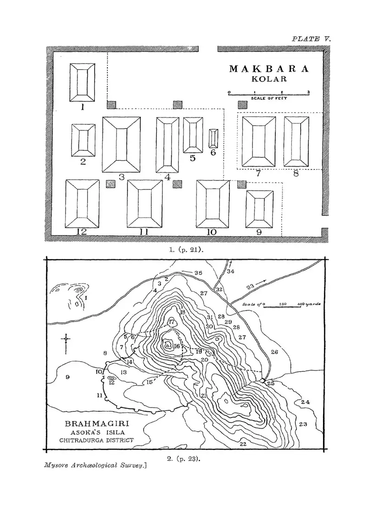
- (p. 21)
- (p. 23)
Part II: Study of Monuments and Ancient SitesChitaldrug District
Brahmagiri
(KEY TO PLATE V, 2.)
1. Siddâpur inscription of Aśôka.
2. Brahmagiri inscription of Aśoka.
3. Cromlechs and cists.
4. Biłe gunđu (Gâre gunđu).
5. Akkatańgiyara guđi.
6. Rocky pathway.
7. Mound of Durgâ temple.
8. Víragals.
9. Pêțe area of Hâneya.
10. Víraballála's inscription.
11. Old fort wall.—Jâli kațte.
12. Pagađesâlu guđda.
13. Mound of small temple.
14. Jain temple.
15. Pathway among rocks.
16. Mahal.
17. Water in cave.
18. Foundations of palace.
19. Lakshmî temple.
20. Hulikunțe.
21. Bôrekunțe.
22. Mounds of small stones.
23. Valley with neoliths.
24. Perennial spring (Pallakki Chilume).
25. Village Roppa.
26. Cromlechs, dolmens, and kistveans (Mauryara-mane).
27. Old town site.
28. Pits dug for bones formerly.
29. Uđuvalagoñdi.
30. Underground spring and cave.
31. Mound with potsherds.
32. Brick foundations near the road.
33. Way to Hanumâpûr.
34. Way to Jatinga Ramésa hill.
35. Way to Siddapur and high road.
The neighbourhood of Siddapur in the Molakalmuru Taluk is already well known to archæologists owing to the occurrence of three minor rock edicts of Aśôka (See Plate V-2). The best preserved of these records is close to Brahmagiri or the Bharmagiri hill which we first explored. There are three ways leading up this hill. The first is from Roppa, on the south-east, the second from near the Jain temple at Hâneya, and the third from near the Akkatangi temple on the south-west. The last is a dangerous rocky pathway leading up the hill to the Mahal, but it is the shortest.
The Mahal is the best building for many miles around. In the last century, an Ayya or Lingâyat recluse got it built up for his residence, most of the materials except stone being brought up from below. It is a two-storied building of stone, bricks and mortar with a fine front. It has a small quadrangle inside (20' × 20') from which doors open to three chambers finely plastered and with good flooring. The east chamber has an attached room with a stone safe in a wall. The upper floor has also three rooms and some glass doors and painted walls. The building commands fine views from all sides. To the south is the citadel hill with the old cementless fort wall, three of whose round bastions are visible. The latter have no cannon platforms but have musket holes and possibly belong to the 16th or 17th century. There is also an old temple of the Châlukyan type. To the east is a wide plain overlooking part of the Bellary District, while to the north is the Bellary range with the Jatinga Râmeśa hill and the Chikka Hagari river in the foreground. To the west is also a hill range and we overlook Nâgasamudra, Gourasamudra and Siddâpur. On the south is the Molakalmuru range of hills. Half way down the hill on the east there is a tank with lotus creepers, containing good water. To the west of the Mahal is a pool of dirty water and behind it a kitchen has been built. To the north-east of the Mahal among the rocks there is a cave with a long natural trough containing cool fresh water for drinking.
The walls of the quadrangle have stucco figures among which are two couples (perhaps the donors of the building and their wives) and two Vaishnava dvârapâlas. The bulls at the corners of the building show that the building was built for a Śaiva Ayya somewhere about 1850 A.D. as seen from the hooks for the chandelier.
Crossing a ravine, we come to the fort where we have the stone foundations of an important building, perhaps a palace, built on a terrace bounded by roughly worked stone beams. Potsherds are lying about and it can be seen that the building faced eastward. Passing through a breach in the fortwall by the side of
Foundations of Palace.
an Âñjanêya temple and two pools of water, we come to the Trišankêsvara temple, Fortifications and Buildings. a plainish 13th or 14th century structure of the Châlukyan style.
This building is typical of a prevalent local type and has a garbhagrîha (8' × 8'), a sukhanâsi (6' × 6') and a navaranga (20' × 20'). The
Trisankesvara Temple. garbhagrîha contains a linga (6') and a pedestal of black stone (10'), placed under a shallow lotus Bhuvanêsvari.
The garbhagrîha doorway has Šaiva dvârapâlas on the jambs. Above these are pilasters, the northern one having rounded mouldings. The lintel has projections and drops common to the Châlukyan and Hoysala work. All the ceilings of the temple are similar. The sukhanâsi has a Nandi of the 14th century type. The sukhanâsi doorway has a Gaja-Lakshmt lintel supported by jambs with rhomboid floral ornamentation, all in granite. All round the door, except below, is a perforated screen with square holes and below a kalaśa is carved on each jamb.
Beyond the pillar on the sides are niches now containing a Ganpêsa and a Kêšava, evidently brought here from some other temple.
The open navaranga has nine ankapas with sixteen pillars and shallow padma ceilings with a large circular stone usually called Chandraśila (about 6' in diameter) in the raised floor of the central square. The pillars have sixteen-sided fluted shafts with square mouldings at the bottom and in the middle, and round ones near the top. They are of granite and appear to belong to the 14th or 13th century. A stone railing, 2½' high, runs round the navaranga.
In the navaranga are now kept also a granite Ganpêsa, a granite viragal with four panels and an illegible modern Kannađa inscription on soap-stone (Ep. Car. XII Ml. 20) of Irungola's son (13th century).
The temple has above it only a pyramidical 'vimâna' with seven projecting dentil cornices and a square-bottomed 'šikhara' with no kalaśa above, (Plate V 4). The stones of the vimâna are uncarved. The navaranga parapet has cornices as in the Hoysala platforms.
Above the sukhanâsi is a raised top looking like a projection of the vimâna as on the Arsikere temple.
Passing through another breach in the fort we pass by a rock on which a Pâlegâr on horseback is going in procession with fifteen swordsmen. A 'Bêgâr' (messenger casteman) is drumming on the opposite boulder by the side of a large stone platform, perhaps a gateway or the basement of a building, beyond which are the 'nîrinakunte' (in which there is a well with perennial water supply) and a rock. On the latter is a partly carved recent relief figure of Siddappa-dêvaru and a stone beam on which a man is stabbing himself.
Relief Figures on Rocks.
4
Vindhya mountains. In European prehistory, the latest date assigned to similar cultures is some centuries earlier than 4000 B.C. A detailed illustrated note on these trial excavations will appear in a subsequent report. Further work on the site is expected to throw much light on the development of South Indian culture in the unknown past.
SIDDÂPUR.
At the commencement of the Siddâpaur tank bund is a relief image on a rock with two long Vijayanagar inscriptions in Kannađa above it. Lower down there is a small temple of Râmachandrêsvara with a garbhagrîha and a porch of one ankapa, both of them having a padma ceiling. The Gaja-Lakshuñi lintel is supported by jambs on which kalaśas are placed. The temple is probably of the 14th century.
On the north side of the rock on which the temple stands is a Nolamba inscription 1 in large old Kannađa characters. Further to the north there is a boulder poised upon another and on its west face is a modern Kannađa inscription recording a grant to Saṇṇa-Hanumanta-Rāya of the village. Further to the north, a boulder has another inscription. 2 Near it are carved figures of Gaṇêśa, Linga and Basava, and a man and his wife (donors) prostrating before Gaṇêśa.
List of Monuments
Brahmagiri; Mabal; Foundations of Palace; Fortifications and Buildings; Trišankésvara Temple; Relief Figures on Rocks; Ělúrapade; Hulikunțe; Trial Excavations; Siddâpur; Râmachañdrésvara Temple
Part II: Study of Monuments and Ancient Sites › Chitaldrug DistrictJaținga Râméșa
Jaținga Râméșa Hill; Hire Jaținga Râméșa; Temple Area; Pampâpati and Vitrabhadra Shrines
About two miles directly to the north of Siddâpur is situated the large hill of Jaṭinga Râmêśa (Plate VII-1). A comparatively fine flight of steps leads us past a Gaṇêśa temple of probably the Nolamba period and two unimportant small shrines to the Asôkan inscription on the hill. The Jaṭinga Râmêśa temple is built beyond the latter on the western height. (Plate VII-2.)
In the central part of the hill on the topmost peak there is a small temple of Râmêśa. We can reach it only by clambering up the rocks from the direction of Saṇṇa Jaṭinga Râmêśa and finally by climbing a tree and reaching the topmost rock. The pathway is very dangerous and difficult. On the top is a small temple, about 9' square and 6' high, made up of a wodden manṭapa, not more than two hundred years old, and of the rudely repaired ruined walls of a well constructed structure of brick jointed by mortar. The doorway in the north wall is closed by stone chips. Inside there is a white linga, small in size (4" diameter) and quite round on top. The bricks used here measure 12" × 9" × 2½".
About 15' to the north of the temple, on the same rock, there is a circular trigonometrical survey mark inscribed and near it, a square hole evidently intended
1 E. P. Carn. XII, Molakalmuru 10.
About a hundred feet lower down on the way to Hulikunte is a huge rock, called 'Élúrapade' under which is a low cave, 2 to 3 feet high, and about 200' × 50' in area. Under the rock the people of seven villages are said to have been accidentally crushed long ago.
Further down near Hulikunte are two old ruined temples the larger one of which is said to be of Bhágya-Lakshmí. It is very similar to the Trišaúkéšvara temple but now has neither the vimâna nor the perforated screens. Its navaranga is protected by a recently added stone wall all around. Several nágarkals are half buried by silt in the navaranga but no images exist now. The pillars are similar to those in the Trišaúkéšvara temple. The temple faces east and to its north is a small one-aňkana temple, with no image, called the Virabhadra temple. In front of it are three Šaiva víragals of the usual type.
On the face of some sloping rocks we descend to Brahmagiri (or Roppa), a small village of about 100 houses of Nâyaks and Gollas. To its south on a large stray boulder called Gauri gunđu there is a Nágari inscription of three lines dated šaka 1121 1 . Below it is an outline engraving of a hero holding high an umbrella in his left hand and a circular thing in his right.
Trial excavations of the mounds close to the Bramhagiri Rock Edict of Asôka, have revealed the existence of at least four different inhabited layers, one below the other, belonging to various epochs of time: the topmost layer consists of the stone walls of Hâneya, a fortified Châlukyan town of c. 1100 A.D.; the second contains the ruins of the Asôkan town of Isila of c. 250 B.C; below it, in the third layer, are the vestiges of a prehistoric Iron age town which must be many centuries older than the earliest known landmarks of South Indian History; and, lastly, the fourth and lowest layer contains the oldest remains.
These last come from a stone age settlement of the late microlithic period, yielding numerous pygmy implements of chert, chalcedony and other varieties of stones, among which can be identified a tanged crystal arrow-head, finely retouched knife-blades, scrapers and small well-ground flat celts, triangular in shape. These are associated with shell and bone beads and coarse rough darkware pottery made up of clay, freely mixed with mica. The potsherds are varied showing marks of sunburning and firing, handmaking and turning on the wheel.
That the South Indians had a knowledge of copper and iron even at this remote epoch, is known from the occurrence of a copper fishing hook and iron slag pieces. The condition of culture appears to be much earlier than that found in the excavated levels in the Indus valley and is probably akin to the pygmy flint culture of the
1 Ep. Carn. XII, Molakalmuru 23. for receiving a lamp post. Between the temple and the absent post is a boat-like hollow caused by the stone masons and pointed out as the place where Jaṭâyu was cremated.
From the top we can get a beautiful view of the surrounding country on all sides and especially of the white building of Saṇṇa Jaṭinga Râmêsvara.
About 20 feet lower down and 30 feet to the north, stand other manṭapas of stone facing north with no ornamentation and having walls made of large slabs placed one upon another without cement. Nearby is a cave under a large overhanging rock which has been converted into a shrine, perhaps in the Vijayanagar period, by raising up a wall of bricks (12" × 8" or 9" × 2½") facing east, between which and the rock a covering roof is made. A doorway has also been added and on top is a gôpura. The walls and rock flooring are covered with a thick (2½") coating of chunâm. (It is a likely place for an Aśôkan inscription.) In the shrine are now a linga, a broken Veñkaṭêsa image (1¾') and a Nâga stone. On the rock there is a Nołamba-Pallava inscription.
On the lower hill a fine flight of stone steps, partly of the Pâlegâr times and partly of the Vijayanagar period, leads to a large plain mahâdvâra
The Temple Area.
which is of about the time of Dêvarâya of Vijayanagar.
The brick top and the stucco figures are now in a ruined condition. On either side is a linga shrine with a bull. Immediately inside this mahâdvâra is a smaller one with a shrine on each side for Gaṇapati (south) and Châmuṇdâ (north). The latter is a soap-stone standing figure. The small mahâdvâra has shortish pillars with eight and sixteen-sided shafts and cubical and circular mouldings similar to those at the Hiđimbêsvara temple in Chitaldurg and the Triśankêsvara temple in Brahmagiri. The four shrines have low granite doorways with Gaja-Lakshmtlintels, floral jambs and rounded pilasters (4'-5" × 2'-3") and the bricks are 14" × 9" × 2'75". Gaṇapati and Châmuṇdâ are both somewhat damaged. The latter is a finely proportioned standing image, three feet high, spearing a Râkshasa seated on a buffalo. Behind her is a small lion. Her hands hold: spear, chakra, śanikha and demon's hair. The images and tôraṇâ are of one stone.
The lamp pillar (Plate VII-2) which tapers to a height of about 40' has a sixteen-sided shaft with fifteen quadruple double-bodied lion steps. It belongs perhaps to the Pâlegâr period.
The Pampâpati shrine has a small linga in a step-pyramidical vimâna and a Gaja-Lakshmî doorway of granite.
The Virabhadra shrine has a sanctum and an anti-chamber with a projection of the gôpura over the sukhanâsi. The image, 4'-6" in height, is a well proportioned plain figure of the early Vijayanagar period, wearing 'kirtṭa' and 'rudrâkshamâlâ' and holding sword, arrow, bow and oblong shield, while on the back is the quiver and round the head a 'tôraṇa'. The sukhanâsi doorway has Gaja-Lakshmî. To its south is a natural cave (25' × 20') called 'Kumâra Râmana Garađi mane' in which that hero is said to have taken gymnastic exercises.
Janârdana and other Shrines
Sitammana-doțe; etc
No heading in the body: this section starts at its printed page (29).
At the end of the manṭapa there is a small linga shrine of Jambukêsvara built of bricks of various sizes (12" × 6" × 2.75". The Saptamâtrikâ shrine has a broken panel of the Seven Mothers.
The Janârdana shrine has a later Vijayanagar image, 1'--3", with four hands: abhaya, discus, lotus and gadâ.
The Châmundâ shrine has a potstone image, 1'.75", similar to the one near the doorway.
The Rishi shrine has pillars and lintel of the early Vijayanagar period.
Behind the Châmundâ shrine are two cave shrines of Chandramulîsvara and Mahâbalêsvara. Near the latter on a rock known as Nagarpađe-Gundu several Pallava inscriptions have been inscribed. Of these Ep. Carn. III, Ml. 27 gives 982 A.D. as the date of the oldest stone temple in the place.
The Arkêsvara shrine has a Gaja-Lakshmî doorway and the linga is two feet high. It is eight-sided at the bottom, round in the upper part and flattish at the top.
Chandikêsvara is a small linga, 4' high, and has over it a pyramidical brick structure in imitation of stone šikharas similar to that of Trišańkêsvara in Brahmagiri.
Tapôlinga has also a Gaja-Lakshmî doorway and no šikhara.
The Bhairava shrine has been repaired and a large manṭapa added to the old structure of one anikaṇa. The image, which is of the early Vijayanagar period is 4' high and in high relief, holding a dagger and kapâla (both damaged). Snakes are dancing below, and one of them is swallowing a rat. The group is not very fine.
Opposite to the main temple is situated the shrine of Sûrya. It has a very plain Gaja-Lakshmî doorway of the early Vijayanagar period and contains a fine image of Sûrya with two hands. The height of the image with the pedestal is about 4½' and the material used is dark stone. The god holds a lotus in each hand and the ornamentation is not elaborate as on the Hoysala images. The tôraṇa is also of dark stone and quite plain, though arched. At its bottom is a small Chhâyâ with bow and arrow. On the pedestal Aruna drives the seven horses.
The main temple which, according to Ep. Carn. XI Molakalmuru inscription No. 27, was very probably built in 962 A.D. has a garbhagrîha, a navaraṅga and a sukhanâsi. The garbhagrîha has a natural linga, 8" high, on a stone pedestal. The garbhagrîha doorway has a Gaja-Lakshmî on the lintel. The sukhanâsi has a very ordinary padma ceiling which is supported by pillars, perhaps of the Nolamba period. The sukhanâsi doorway has pilasters and other ornamental work, all hidden by a thick coating of chunâm. The navaraṅga which appears to have been repaired some years ago seems to have had three doors of which the north one has now been closed. The pillars are of three kinds, eight-sided with cubical mouldings, star-shaped and round. A fine example of the last type is partly seen in the south wall. It is possible that the navaranga was re-built in the Vijayanagar days, part of the old materials being used. There are a broken image of Bhairava in a corner and a Nandi facing the linga. The central ceiling has a padma in the centre.
Sītammna-done is a natural pond on the north-west. Near it are two pairs of feet said to have been those of Sīta who stayed here during Ravana's fight with Jatāyu on the eastern hill. Close to these feet is an elephant in a small shrine and it is said that the rock ermits strange sounds when the ear is placed on it. There is a viragal near the pond.
To the north of the temple a steep descent of roughly cut steps on the face of the rocks takes us to a cave with a pool called Êkânta-Tirtha. Here Râma is said to have stayed when he reached the hills searching for Sītâ. If great eagles like Jatāyu did at any prehistoric time live on the hill, this cave was one the likeliest places for their habitation.
On the eastern hill there is said to be a cavity in the rocks which is pointed out as the place where Jatāyu kicked Râvana.
The outer faces of the temple, sukhanâsi and garbhagriha have pilasters, double and single. Below the line of pilasters is a moulded basement part of which is buried now. A ruined rampart wall surrounds the temple area.
Though there is an inscription of Aśôka on the hill, no Maurya structures are found in the neighbourhood, but potsherds of the Nolamba and Vijayanagar times abound all over.
At the foot of the hill there is a Ganapati temple with a linga and a two-handed Ganésa of potstone. The bricks are 12" × 8" × 2 \frac{3}{4} ".
Part II: Study of Monuments and Ancient Sites › Chitaldrug DistrictHâneya
The fields to the west of the Brahmagiri hill are called 'Pêṭê-hola' or 'town fields.' Near the hill slopes are the twin temples of two
Akkatangi Temple
Jain Temple; Pagađe Sâlu Guđđa
sisters called the Akkatangiyara guđi. The better sculptured of the two is said to have been transferred in Pūrnaiya's days to Chikerahalli, six miles away to the south-west, and made into a Râma temple. The other is still standing. It has a garbhagriha, an open sukhanâsi, and an open pillared navaranga (Plate VI-1). The garbhagriha has no image but has a padma in the ceiling and a horizontal projection in the middle of the walls. The garbhagriha doorway is a fine granite specimen of Nolamba work (Plate VI-2). The lintel stone has Gaja-Lakshmi and two drops. The jambs have floriate creepers, sixteen-sided ornamental pilasters, rows of gryphons like man-headed and elephant-headed lions, etc., and leaf ornamentation. The dvârapâlas are Šaiva. The open sukhanâsi has a padma ceiling. The square navaranga which is open on all sides, except the south, is bounded by a stone bench, three feet high, on which ornamental
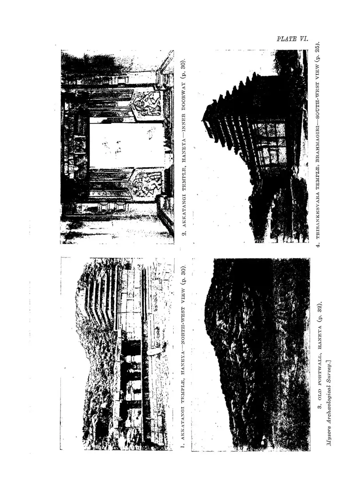
- AKKATANGI TEMPLE, HANEYA—NORTH-WEST VIEW (p. 30)
- AKKATANGI TEMPLE, HANEYA—INNER DOORWAY (p. 30)
- OLD FORTWALL, HANEYA (p. 32)
- TRISANKESVARA TEMPLE, BRAHMAGIRI—SOTH-WEST VIEW (p. 25)
granite pillars, five feet high, support the roofs. Projecting stone eaves were present formerly but they have now disappeared. The vimâna is typical and of stone with seven tiers rising pyramidically. The four chief pillars have sixteen fluted shafts and octagonal, cubical and round mouldings. The navaranga ceiling has a shallow granite Bhuvanêsvari with a Chandraśila below it. The neighbouring temple had a fine śikhara as seen by the turrets lying about.
Going southward we pass through fields strewn with brickbats and potsherds.
Jain Temple.
There is a well with good water, near which lies a Janârdana image of soapstone, two feet high. Further on we see the rocks from which beams and slabs were quarried.
Beyond the spur of the hill, thare is a Jain temple facing south on a high terrace and having a garbhagriha, an open sukhanâsi, a navaranga and an open small porch. The vimâna is now covered with plaster and post-Moslem ornamentations of the 18th century. Inside it there is a Châlukyan stone vimâna of granite with seven pyramidical tiers as in the Triśankêsvara temple. A projection covers the sukhanâsi, but the navaranga has over it a modern parapet wall. The garbhagriha has the image of a seated Tirthankara with a broken head. The image is three feet high. The sukhanâsi and navaranga doorways have nothing remarkable except the two kalaśas, and the image of Jina on the lintel. Plaster work covers the doorway of the navaranga. The pillars of the latter are larger and plain ones of granite with octagonal mouldings. The granite pillars of the small porch in front of the temple have octagonal and round shafts with cubical and rounded mouldings. The stone 'jagali' or bench has rounded parapet walls. To the south of the temple, is a low mound, probably the site of a ruined temple.
To the south west of the Akkatanĝiyara-guđi near the vîragals there is a mound, 6' high and 50' in diameter, strewn about with rough and
Pagadesalu Gudda.
worked stones. On its east lies a broken headless soapstone image (original 4') of seated Durgâ holding 'rundamâlâ.'
A slab with a pair of feet lies in front. Nearby are seven vîragals of granite looking very fresh. Perhaps they were set up by Vîra-Ballâla II after the capture of Hâneya. To the south of these is a rocky hillock, 'Pagađe-sâlu-guđđa,' with a rude granite temple, consisting of a garbhagriha and a sukhanâsi, in each ankaṇa of which are marks on the floor said to be the 'pagađe-hâsu' or dice board of the Akkatanĝis or sisters who used to mount the hill and have a game of dice. But the look of the marks gives a very different impression. The garbhagriha marks appear to show a standing human figure with head to the north. Near its right hand is a mark looking very much like the Brâhmî letter "A" The marks in the sukhanâsi are different and look like a linga with yônî, a crescent with a star in the middle, etc. To its east, however, are some marks resembling 'pagađe-sâlu' or a dice board.
Kaunađa Inscription
No heading in the body: this section starts at its printed page (32).
To the west are the ruins of an old fortwall of rough large stones (Plate VI-3). On the way to the Siddâpur inscription, behind Kâđu-Siddhana maṭha, near a fig-tree, is a Kannađa inscription of six lines with a relievo Nañdi nearby. It seems to be of the Vijayanagar period.
Part II: Study of Monuments and Ancient Sites › Chitaldrug DistrictRâmadurga
Fortifications
No heading in the body: this section starts at its printed page (32).
Râmadurga is situated on a low hill about 150 feet high south of Nâyakana-hatṭi, in the Cheĵlakere taluk and has a fort (Plate VII-3) nearly square in shape, each of its sides being about 200 yards long. Obanâyak of Râmadurga village stated that the durga was said to have been built in the Pâlegâr days for Râmêśvara linga. The original gate appears to have been on the east. Here a flight of about 10 steps leads to a breach where stood the old entrance. Thirty feet higher up there is an inner fortress (200' × 200'). The fortwalls (about 15' high) are built of rough uncemented stones with parapets formed of smaller stones. At the top of the hill, i.e. , in the centre of the upper fort, there are foundations of stones representing former buildings, perhaps forming the chief's quarters. To their west there are several rock-cut ponds 40' × 40' × 20' two of which even now contain rain water. The fortresses are provided with round bastions at the corners but there are also square bastions, one or two of them having slab made openings (2' × 2') which appear to be only outlets for water. No evidence of cannon platforms or musket holes was found. The walls are 10 feet thick. On the west between the two fort walls the rock slopes down. Here there appears to have been a shallow cave which gave the suggestion for a regular cave temple. (Plate VII-4.)
Cave Temple
No heading in the body: this section starts at its printed page (32-33).
At first the face of the rock was cut by the architects until a vertical wall (25' × 12') was made. Then out of the darkish stone a regular hall was carved with eight pilasters and four free pillars, all of the Dravidian style, with mango fruit capitals and images carved on the lower mouldings. The pillars are 8' high and above them is a rock ceiling about 3' thick. On the pillar mouldings are Purushamṛiga, Varâhâvatâra, Narasimha, Kaṇpappa Nayanâr and lions seated on Râkshasas. The ceilings are specially interesting as they are in imitation of the Hoysala work to some extent. The front outer ceiling has a fine padma with a central pendant and hole for the bell. Above the padma are parrots. The whole group is set in a square which is itself set in another, while the panels on both of them are carved all over with four Vidyâdharas, two Gaṇdabhêruṇdas and a yâli-headed bird, i.e. , Śarabha. Among the figures on the beams are Râma and Sitâ seated, with Lakshmaṇa standing; Śiva seated; Śiva and Pârvatî with Kumâra by their side; Mahishâsura-mardinî; Nañdi; and stories from the Śaiva purânas. Many designs have been drawn
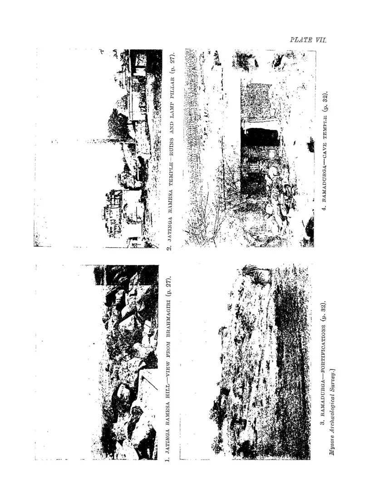
- JATINGA RAMESA HILL—VIEW FROM BRAHMAGIRI (p. 27)
- JATINGA RAMESA TEMPLE—RUINS AND LAMP PILLAR (p. 27)
- RAMADURGA—FORTIFICATIONS (p. 32)
- RAMADURGA—CAVE TEMPLE (p. 32)
Cited in the text: p. 27 ↩, p. 27 ↩, p. 28 ↩, p. 32 ↩, p. 32 ↩
in red ochre, but the work appears to have been stopped before completion. The drawings and half-worked relievos show very strong Viraśaiva influence of the middle of the 18th century A.D. The inner navaranga ceiling has a shallow Bhuvanésvari with a large padma and pendant. The roof is supported by highly ornate projections of beams and on the large beams there are the eight Dikpâlas. The navaranga manṭapa is 30' \times 20' . The garbhagriha doorway is a well-worked piece (5' \times 2\frac{1}{2}') with the jambs and lintel ornamented with rows of creepers, flowers and lions supported by niches containing dvârapâlas. The central panel of the lintel is unworked. The pilasters supporting the jambs have kalaśas and double-lion faces. The sanctum, the ceiling of which is unfinished, has a blackstone linga on a seat (2\frac{1}{2}' high) which appears to have been brought from outside. Behind it are three arched niches, the central one having a relief linga engraved under a seven-hooded cobra. The group is inset in a projecting 'tôraṇa' on which are chowri bearers and dvârapâlas. The Basava before the cave is fine (4') and well ornamented in imitation of Hoysala work. The temple is one of the best pieces of work of the Nâyaks like the Karivarti temple at Chitaldrug and possibly belongs to the middle of the 18th century. The temple is unique, as none other of the kind is known in the Mysore State.
Part II: Study of Monuments and Ancient SitesHassan District
Halebid
Halebid is famous as one of the most important places of archæological interest in the Mysore State. Its temples were briefly note by Fergusson and other writers on Indian architecture and a brief note was published by Mr. R. Narasimhachar in the Annual Report of this department for the year 1911.
A detailed study of the ancient site and its temples has now been made and it is proposed to take a large number of drawings and photographs. The materials available are so numerous and of such high quality that the publication of a separate monograph on Halebid is under contemplation.
In the following notes an attempt is made to give an idea of the archæological value of the place, though for want of space detailed studies of many aspects have had to be omitted.
A rough sketch map of the place has now been published for the use of intending visitors. (See Plate VIII.)
In studying the temples, the fact has always been kept in mind that most of these structures have histories of their own, their parts having been often constructed by different generations and sometimes by different dynasties. All available information has been used for analysing the structural parts according to age and style.
5
Hoysaļėsvara Temple
General Description; History
About 18 miles to west-south-west of Banavar Railway Station and 9 miles by road east-north-east of Belur is situated the small village of Halebid in and around which are the ruins of the great city of Dôrasamudra which was for three centuries the capital of the Hoysala Empire. The largest monument of the place, perhaps the greatest ever constructed in that ancient city, is the temple of Hoysalêsvara which stands intact to-day. It is a veritable museum of sculpture containing thousands of carved figures, large and small, which reveal to us the conditions of art and life in the Hoysala Empire. (Plates I and XII.)
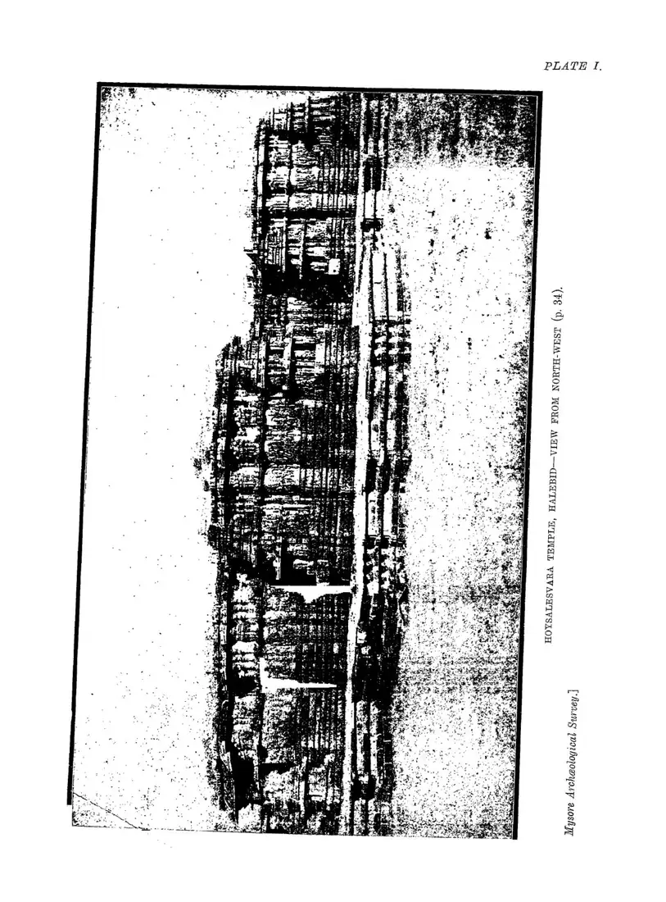
- HOYSALESVARA TEMPLE, HALEBID—VIEW FROM NORTH-WEST (p. 34)
It is a large temple built entirely of greyish soap-stone which yields softly to the chisel and gets hardened with exposure to the atmosphere. The temple is raised on a high platform which, as usual, follows, more or less faithfully, the main contour of the temple and is nearly 15' wide. The temple has two large cells containing the Hoysalêsvara and Śântalêsvara lingas, respectively. (See plan on Plate X.) Both of them have star-shaped outer walls and appear to have had similarly shaped large towers which have now disappeared. To the south, west and north of each garbhagrîha on the inside, are large niches corresponding to which there are on the outside tall two-storeyed towered niches. Each cell has a sukhanâsi and a large indented square shaped navaranga, the two navarangas being connected by a corridor. The back wall of the navaranga is thick and heavy and has two indented square shaped projections at each corner. The corridor has a tower-like projection at the back of its centre and a slightly larger one in front. Four doorways lead from the platform into the navaranga—two from the east, one from the north and one from the south. Towered niches flank each flight of steps both of the platform and of the basement. Outside the building and opposite to each shrine on the east is a manțapa containing a large stone bull. Behind the south bull and to the east is a shrine for the sun god, Sûrya, which faces west.
The temple is the largest existing building of the Hoysala style, but its hugeness is easily forgotten owing to the fact that it is elaborately sculptured. On its outer walls especially, almost every square foot of space and, in many places, every inch is covered with sculptures of gods, animals, men and ornamental designs. The elaborateness of their ornamentation may be compared to jewellery more than to known architectural buildings. (See frontispiece to the Annual Report for 1929.) The sculptures are also of a high class and possess beauty of ideas and art. The technical skill displayed is of a very high order and the sculptor has revelled in the field available for the exhibition of his talents.
But at the same time though the sculpture of the Hoysalêsvara temple is marvellous, it is never obtrusive. Though each individual figure is a work of art,
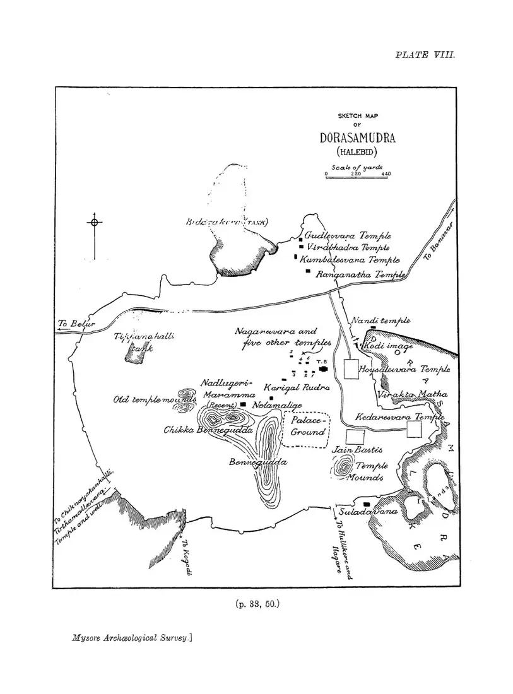
- (p. 33, 50)
sculpture is definitely used by the designer as a subordinate element embellishing the beauty of the structure's architectural design. A view from the distance especially on the west, would bring conviction on this point. (See Plate I, frontispiece.) The temple with its intricately broken contour and harmonised sculpture and architecture must have, when its high towers stood in their position, produced the impression of majesty and beauty worthy of the greatest monument of the imperial capital.
The temple appears to have had, if not a compound wall, at least a gateway on the south. This ran between the Ganèša image and the Hoysala group as can be seen from their basements.
It was usual for the Hoysala rulers to inscribe on the navaranga walls or on a slab set up to the south-east of a temple, an inscription recording the erection of the structure. Since no such record has yet been found, it may be surmised that the concerned inscription has been lost. But at Ghaṭtadahalli, about three miles east of Halebid, near the Kallêsvara temple lies a slab, about 7\frac{1}{2} ' high, which is inscribed with a record mentioning the construction of a temple for Vishnuvardhana Hoysalêsvara and the grant of some lands for its support. 1 The place of construction is mentioned to be definitely Dvārasamudra and the person who built it was Kêtamalla, an officer of the king. Though the date on which the temple was constructed is not mentioned, the record states that the grant of lands was made in śaka 1043 or A.D. 1121. This definitely establishes that the Hoysalêsvara temple was constructed in or just before the year mentioned.
A close study of the structural details of the temple shows that this original structure consisted of two temples each of which was planned very much like the Kêšava temple at Belur, the dimensions also being nearly the same. Each garbhagriha was star-shaped, the back walls of the navaranga straight and meeting the side walls at right angles; and the navaranga halls with the sukhanâsis were indented square in shape. Possibly the only doorways were those which guarded the garbhagrihas. The eastern half of the building above the basement and railings was supported by pillars, between which there were no screens. The whole building was thus well illuminated by day light and the design was simple, yet beautiful.
But changes began to be made very soon after. The large brick towers perhaps caused a heavy stress on the outer walls of the garbhagriha. To counteract this side-thrust and to give a better protection to the inner niches of the garbhagriha buttresses had to be given. On the south, west and north of each garbhagriha there stood originally, in all probability, small niches which were now superseded, large two-storeyed towered niches being put up in their places. These sometimes covered
1 Ep. Carn. V, Belur 147, lines 81. f . the original wall sculptures of the temple, though their basements were carved along with the corresponding friezes of the temple. It may be concluded that these niches were put up after the large wall images had been carved and before the friezes were completed. The projections which have also towerlike tops have led Fergusson to think (see his wood-cut restoration of the temple 1 ) that smaller towers stood over these portions of the roof. This is unusual in Hoysala temples. The projection at the back of the corridor also appears to have been there before the large images were carved out.
Detailed Study
No heading in the body: this section starts at its printed page (36-37).
There is more definite evidence that considerable changes were made in the temple a generation after it was built, since an unpublished inscription on the lintel of the southern doorway mentions that the sculptor Kâlidâsi made the lintel for Kâdârôja, the master architect of Narasimha I. Another inscription on a basement cornice to the east of the Sûrya temple mentions that the Eastern doorway, that is the south doorway on the east, was made by Dêmôja. Since Narasimha came to the throne in 1141 A.D., more than 20 years after the temple was constructed, it appears that the four doorways and the series of perforated screens were all put up in Narasimha's reign, probably very soon after his accession. A similar surmise would also probably apply to the corresponding parts of the Belur temple.
Since there is considerable difference in the design of these new doorways and the sukhanâsi doorways on the one side and the garbhagriha doorways on the other, there is good reason to think that the sukhanâsi doorways, too, were added in the reign of Narasimha.
About this time or later appear to have been built the central towerlike projection on the east, the Surya shrine and possibly the original bull mantapas. That these latter have undergone considerable change in subsequent times is proved by the fact that stray Hoysala vîragals and other sculptures have been used for their ceilings and on the platform of the north bull mantapa appear sculptured friezes which evidently belonged to some other temple.
The Hoysalêsvara temple has now been studied in detail under the following heads:—
I. Platform and lower niches. XI. Basement eaves below railing.
II. Elephant frieze. XII. Turrets and Lions.
III. Lion frieze. XIII. Railing with sculptured panels.
IV. Creeper scroll. XIV. Pierced windows.
V. Horsemen frieze. XV. Central bracket images.
VI. Creeper scroll. XVI. East middle projection.
Mythological Frieze
VIII. Makara frieze. XVIII. Base of larger images.
IX. Hainsa (swan) frieze. XIX. Tôrapas over larger images.
X. Small figures below tôrapas in front. XX. Larger images behind the temple.
1 Fergusson: History of Indian and Eastern Architecture, Vol. I. p. 445, fig. 262.
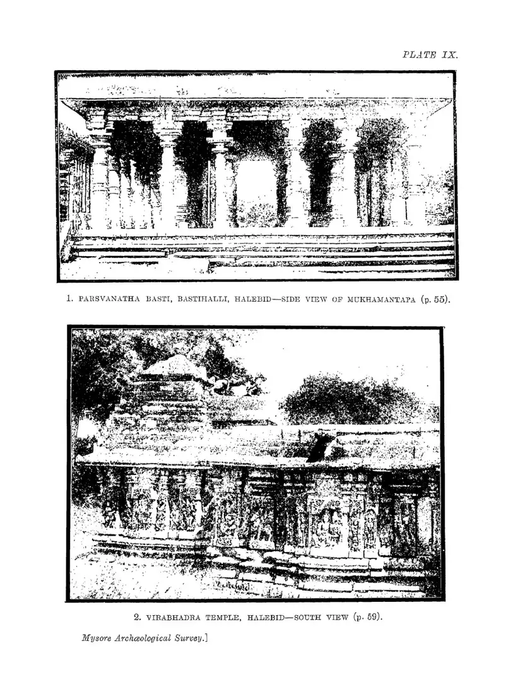
- PARSVANATHA BASTI, BASTIHALLI, HALEBID—SIDE VIEW OF MUKHAMANTAPA (p. 55)
- VIRABHADRA TEMPLE, HALEBID—SOUTH VIEW (p. 59)
XXI. Upper panels of back walls. XXX. Sukhanāsi doorways.
XXII. Eaves. XXXI. South sukhanāsi, garbhagriha and Linga.
XXIII. Roof and towers. XXXII. North sukhanāsi, garbhagriha and Linga.
XXIV. Platform niches. XXXIII. South Nañdi maṅṭapa.
XXV. Four outer doors. XXXIV. North Nañdi maṅṭapa.
XXVI. Navaraṅga. XXXV. Surrounding structures.
XXVII. Navaraṅga niches.
XXVIII. Pillars.
XXIX. Ceilings.
Since the information collected under each of these headings would form a section and the 35 sections, when put together, would form a volume, only two of the headings are dealt with here, namely, No. VII, mythological frieze and No. XXV, the outer doorways.
VII—MYTHOLOGICAL FRIEZE.
This is the most interesting frieze in the whole temple. It is on a band about nine inches in breadth running quite round the temple except where the other garbhagriha niches have been added at the back. It contains various episodes from the Rāmāyaṇa, the Mahābhārata, the Bhāgavata, and the Śaiva and Vaishnava Purāṇas, sculptured relief in a series of panels running along the frieze. But it is puzzling to note that there is not always the continuity of the story: sometimes there is, at other times there is not; and it is difficult to understand why the sculptors were allowed to mix up the stories and the episodes. Though the carvings are mostly in miniature owing to the height being not more than about nine inches, yet the work is executed with a fine imagination and artistic sense. These friezes are characteristic of the Hoysala temples and a comparative study ought to be made of them with similar friezes occurring in the Java temples belonging to the 11th century A.D. It is possible that the Hoysalas got the idea from the Javanese or, more probably, both got it from a common source. Only three scenes from this frieze are now illustrated in this report. A large number of photographs are, however, being taken for publication in a separate monograph.
While some of the panels are independent of the others, sometimes several of them have to be grouped to form one subject. To facilitate reference, the exterior of the temple has been divided into 76 sections and the number of each section is indicated in brackets (See Plate XI). Where the episode runs over a number of panels the length of the frieze is mentioned roughly in feet. The series, as described here, commences just to the east of the north doorway and runs clockwise around the temple.
North-east
North-east Door; East; South-east Door; South-East; South Door; South-west; Main Wall; West Main Wall
1. (a) Five feet long—The durbar of some officer without umbrella. He has only two hands. Perhaps Kētamayya, the builder of the temple, sits in durbar with officers seated and attendants standing. On one side is a man dancing with accompaniments consisting of a singer with cymbals, two flute players and two drummers.
1. (b) Bhairava with attendants and goblin musicians.
2. (a) Bhairavi with attendants.
2. (b) (Six ft.) Kshirasâgara-mathana,—the gods (to the left) and the demons (to the right) churn the milky ocean with the Mañdara mountain as the rod and the long-bodied cobra, Vāsuki, as the rope. Vishṇu as the tortoise supports the Mañdara and a demon who is too near the poisonous mouth of the snake has fallen down. The piece is well executed but most of the figures have lost their heads. This story is found again on another panel around the smaller Nañdi shrine.
2 and 3. Nine feet long—Four groups consisting of dancers and musicians with accompaniments. Two men and two women dance; their dress is interesting. The dancing men wear on each leg five or seven sets of anklets, perhaps hollow. The instruments used are cymbals, flutes and two varieties of drums.
3. Śukrāchârya faces a pot of toddy ( surd ) near which are a cobra and an ant-hill below three toddy palms called popularly kadamba-vṛiksha. A parrot drinks from the pot and another ṛishi is taking the drink as an offering to Bhairava and Bhairavi who stand behind with attendants. The story of how Śukra consumed Kacha when drunk and forbade the use of intoxicants is well-known in the purānic story of Kacha and Dêvayâni.
3. Lady seated under canopy with attendants and body-guards, perhaps Lakshuñi.
4. Nine feet long—Durbar of Umâmahêsvara—Umâmahêsvara (Śiva with Umâ on the left thigh) is seated in state with Nañdi, Gaṇêśa, mouse, attendants, hamsa and three-faced Brahma to his right and Kumâra on peacock, attendants, dancers and musicians, Garuḍa and Vishṇu to the left. To the right of Brahma are the eight Dikpālas or guardians of the directions arriving on their vehicles with their consorts and attendants—Indra on the elephant, Agni on the ram, Yama on the buffalo, Niruti on the demon, Varuṇa on the makara, Vâyu on the antelope, Kubêra on the horse and Îśâna on the bull.
5. Nine feet long—The story of Bali. (a) Bali, the demon emperor (his fangs are seen) sits in durbar with ministers, attendants and soldiers.
(b) Vâmana, the dwarf Brâhmin student begs for a gift.
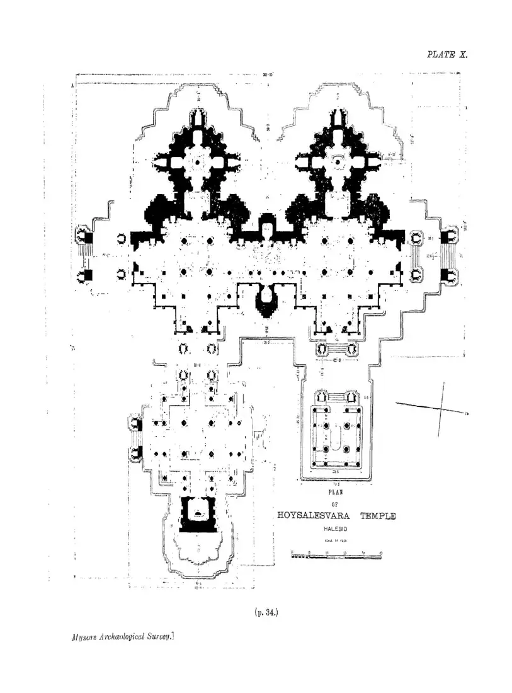
- PLAN OF HOYSALESVARA TEMPLE HALEBID SCALE OF FLOW (p. 34)
Cited in the text: p. 34 ↩
[Redacted text]
|im_end|>
|im_end|>
|im_end|>
|im_end|>
|im_end|>
|im_end|>
|im_end|>
|im_end|>
|im_end|>
|im_end|>
|im_end|>
|im_end|>
|im_end|>
|im_end|> [Redacted text]
|im_end|>
|im_end|>
|im_end|>
|im_end|>
|im_end|> [Redacted text]
|im_end|>
|im_end|>
|im_end|>
|im_end|> [Redacted text]
|im_end|>
|im_end|>
|im_end|> [Redacted text]
|im_end|>
|im_end|> [Redacted text]
|im_end|> [Redacted text]
|im_end|> [Redacted text]
|im_end|> [Redacted text] (c) The gift is made with pouring of water while Śukrāchārya, Bali's preceptor, protests.
(d) Śukra walks out, but is appeased by Garuđa.
(e) Vāmana as Trivikrama with four hands measures the three worlds in three paces, while the assembly stand with joined hands.
6. (a) Five feet long—Indra in the Pushpaka vimāna (palanquin) with female carriers and attendants and male body-guards.
6. (b) Vīrabhadra with fangs and a third eye, in durbar.
6. (c) Śiva seated in state.
(d) Durbar of some deity with a lady and drummers dancing to the right and ministers and attendants to the left; (Unfinished; identification doubtful).
NORTH-EAST DOOR.
East.
7. (a) Male and female dancers with accompaniments.
(b) Bhairava with dancers and attendants.
8. (a) Bhairavī.
(b) Five feet—A lady and Śiva dancing with accompaniments.
8. (c) 9, 10 and 11 —Umāmahēsvara in durbar. Near corner of 9 and 10 with Nañdi to his left, Shaṅmukha, Vishṇu, Yakshas and goblins dancing (one dwarf is drumming on his belly) with attendanís and musicians, Bhairava and Bhairavī and the last 6 of the 8 Dikpālakas. To his right are Gaṇēśa, Brahma, ladies, dancers, musicians and accompaniments, Bhairava, dancers, Umāmahēsvara again, and Śaiva door-keepers. To further right—horsemen, Indra on the elephant and soldiers are proceeding to Kailāsa.
(b) Dancers and musicians.
12. (a) Men dancing with accompaniments.
(b) Bhairava and Bhairavī with goblin musicians and attendants.
13, 14, 15, 16 and 17—Bhāgavata: The story of Kṛishṇa beginning from 17 and running on to 13. The figures are described in order from left to right.
18. (a) Vāsudēva in prison with the guardians asleep while standing.
17. (a) Vāsudēva carries baby Kṛishṇa who is protected by Ādiśēsha across the Yamunā and hands him over to Gopīdēvī with whom is Balarāma.
(b) Kṛishṇa slays Pūtanī, Bakāsura and Śakaṭāsura, destroys the twin-trees, loots butter and milk pails, plays on his flute, with the cowherīs and cowherdesses singing (mouth opened) and even cobras dancing.
16. He is worshipped and lifts up the Gōvardhana hill, while he appears to his friends in the divine form as Srī Kṛishṇa with the four arms holding padma, śaṅkha, chakra and gadā. Indra begs pardon. Kṛishṇa slays a demon and Dhénukâsura.
15. He is taken in a chariot with Balarâma across the Yamunâ by Akrûra; and he is met near Madhura by the dwarf hunchbacked woman whom he cures. He breaks a bow at a festival, slays Kaṁsa's elephant and with Balarâma's help overcomes Mushtika and Châṇûra in a hand to hand fight. This last scene is shown with a circle around it as in modern caricatures, perhaps to indicate that the combatants were revolving round each other.
14. (a) Dancers and musicians celebrating Kṛishṇa's victory.
(b) Kṛishṇa as Pradyumna holding gadâ, chakra, padma and śaṅkha and, supported by Indra on his elephant, fights Narakâsura and his demons and slays them; the victory is celebrated with dance and music.
13. (a) Unworked.
13. (b) Pârijâta-haraṇa: Kṛishṇa and Satyabhâmâ carried by Garuḍa, fight Indra and Îśâna ( i.e. , all the Dikpâlas) and win the Pârijâta tree and flowers. The accoutrements of the elephant are interesting. Indra sits on the elephant's neck while behind him is a platform (with dhvaja) from which two bowmen are shooting.
13. (c) Dancers with accompaniments.
18. (b) Broken or partly worked only.
(c) Two kings at dice: Yudhishthira and Śakuni.
(d) Partly worked: a battle.
19. (a) From the right—a battle. Kan. letter ☞, perhaps the initial of Mâba or Mâbala, the sculptor.
(b) Kîchaka molests Draupadî who appeals to Bhîma. The latter dresses himself like a lady and meets Kîchaka.
(c) Dancers.
SOUTH-EAST DOOR.
South-east.
Here the Mahâbharata war commences and runs on to face 28 across the south door but only vigorous battle scenes (of a length of about 5 or 6 feet) from the Bhîshma parva to the Śalya parva appear to be shown. Other scenes are shown here and there at the back of the temple. Even in these four parvas, there are mostly carved chariots, each with a hero archer shooting arrows from it the horses being driven by a charioteer. He has soldiers fighting around him while between the chariots in the middle of the group is usually one soldier slaying another. The chariots consist of wooden platforms on four wheels, with or without spokes, and have the hero's banner and emblem on a pillar behind him. Since most of these
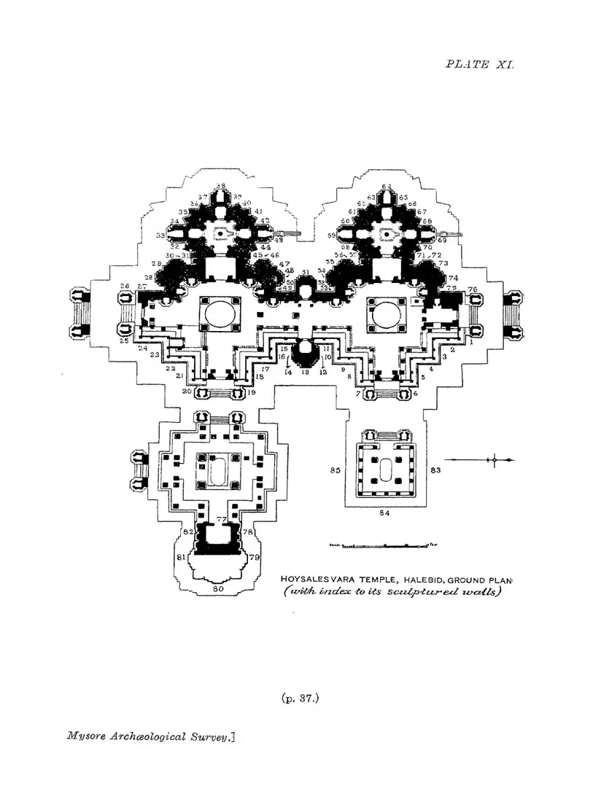
- HOYSALESVARA TEMPLE, HALEBID, GROUND PLAN (with index to its sculptured walls) (p. 37)
Cited in the text: p. 37 ↩
dhvajas are damaged and there is little variation in the faces of the combatants or in the events, it is not possible to identify definitely single episodes. The parvas, however, can be differentiated.
22, 21, 20. From right to left—Bhishma parva.
22. (a) Duryôdhana's durbar—the aged Bhíshma (bearded) is anointed as generalissimo of the Kauravas.
22 and 21. Bhíshma and Arjuna meet in combat on several occasions (actually eight groups).
20. Dancers celebrate Arjuna's victory.
24 and 23. Drôṇa parva—Drôṇa (with beard) and Arjuna fight (five groups). Some panels are unworked.
25. (a) Dancers celebrate Arjuna's victory over Drôṇa.
(b) Vishnu standing (partly worked).
SOUTH DOOR.
South-west.
27 and 26. Karṇa with his Pakshidhvaja and Arjuna with his Kapidhvaja meet thrice and fight—Each group is like the other and there is nothing to show where the battle started or where it ended. Arjuna's chariot has springs. The work is generally fine.
27. (b) Śalya and Arjuna fight and behind Śalya is the Kaurava army marching forth—here and in one or two other places Arjuna has no 'yajñôpavita', making the identity doubtful.
28. (a) Dancers celebrate the victory of the Pâṇdavas. The Mahâbhârata story stops here.
28. (b) The myth of Môhinî: Môhinî at toilet, Môhinî's naked dance with Bhasmâsura admiring, Môhinî with flute, Môhinî and parrot with Dakshiṇâmûrti and monkey, Môhinî dancing (two postures, with hand over head).
28. (c) Umâmahêśvara in durbar with Bhairava and goblins and dancers.
29. (a) Tâṇḍavêśvara with Bhairava, Vishnu and attendants.
29. (b) Arjuna proceeds to the forest, meets the sages (sculptor Balaṇa), sees their ladies (who wear leaves) pound wild rice, and performs penance on the Indrakila hill in the company of other sages, standing on one leg. A boar dashes towards him and Arjuna fights Śiva who is dressed as a hunter and is followed by Pârvatî as a huntress. (Plate XIII, 1.)
30. Aranya-parva: Saindhava episode. A bearded figure appears on the scene and is probably Saindhava. Saindhava abducts Draupadî whom he tries to slay but is prevented by another man, perhaps Bhîma. Bhîma and Draupadî embrace each other. Chitrasêna and his
6
Gandharvas march forth to the battle. The scene reminds us of the Bacchanalians marching in Ganḍhara art. (See V. A. Smith, History of Fine Art in India and Ceylon, P. 123).
31. (a) Arjuna sallies forth and Chitraséna surrenders and stands on his chariot with folded hands.
31. (b) 7 feet—Bhagadatta on his elephant attacks Bhīma while Kṛishṇa in his divine four-handed form protects Arjuna from the tusk of the divine boar. Bhīma fights the elephant and slays it.
32, 33 and 34. These belong to the south additional niche of the south shrine which cuts off the continuity of the original frieze.
32. Tāṇḍavēśvara dancing with Gaṇeśa, musicians and attendants. In a corner is a half worked Trivikrama.
33. Similar to No. 32. Tāṇḍavēśvara, Gaṇeśa, Môhinî, Bhairava, goblins, etc.
34. Vishṇu as Vâmana in sukhâsana (śaṅkha, chakra, gadâ and padma) with consorts, Garuḍa and attendants.
Main wall :
35. (a) Dancers and musicians.
(b) Śiva and Pârvatî in Girijâkalyâṇa (marriage of Pârvatî).
Himâlaya gives away in marriage by dhârâ his daughter to Śiva. Umâmahéśvara in durbar with Vishṇu to the left and Brahma with consorts to the right. To further right, lady dances with musicians.
(c) Tāṇḍavēśvara.
36. (a) Shaṇmukha, who has six faces and the Mayṭra-dhvaja, is followed by the eight Dikpâlakas and fights the demon Târakâsura or Sura Padmâsura, whose chariot is drawn by lions. An elephant tramples on a man. Kan. letter ८ (= ७ ?).
36. (b) Tāṇḍavēśvara with group of attendants.
36. (c) Pârijâtaharaṇa—same as before.
36. (d) Three-faced Brahma on the swan.
West additional niche of south shrine:
37. (a) Śiva, Gaṇeśa, Kumâra and others dancing.
(b) Yôgânarasimha.
38. Umâmahéśvara, dvârapâlas, Mahishâsuramardint, Bhairava and musicians.
39. Bhairava with dancing attendants, Môhinî, etc. Môhinî dances with an upper cloth over her head while next to her is a lady pouring water (or wine ?) into the mouth of a seated child (or dancer ?).
West.—
Main wall :—
40. (a) Anaṅtaśayana—Padmanâbha, with the dêvas in reverential attitude.
(b) Prahlâda episode (from the Bhâgavata). Hiraṇyakaśipu in durbar.
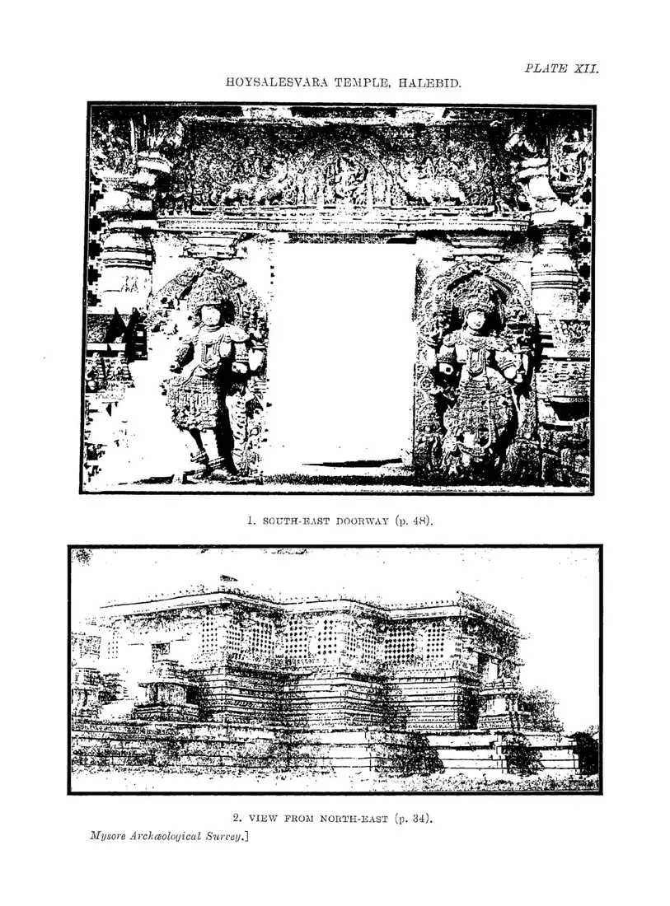
- SOUTH-EAST DOORWAY (p. 48)
- VIEW FROM NORTH-EAST (p. 34)
Cited in the text: p. 48 ↩
(c) Prahlâda and executioners.
(d) Prahlâda among cobras.
(e) Prahlâda between the elephants. (Plate No. XIII-3.)
41. (a) Mṛityudêvî (skeleton body) with 16 hands springs out of fire and slays the demons.
(b) Prahlâda meets his father.
(c) Left to right—Narasimha appears in a pillar, battles with Hiranyakašipu and slays him as Ugra-Narasimha, while Prahlâda stands with joined hands.
(d) Môhinî (Bhairavî) and Bhairava.
(e) Râmâyaṇa: Battle between Râma and Râvaṇa. Between them Hanumân fights the demons whom he seizes in the coils of his tail. Râma's chariot is drawn by horses, while Râvaṇa's is drawn by donkeys whose long ears are unmistakable. Sculptor: Tânaguñdtra Haridāsi.
North Additional Niche of South Shrine
No heading in the body: this section starts at its printed page (43).
North additional niche of south shrine :—
42. Indra seated with attendants and elephant below.
43. Brahma, Sarasvatî, dancers, etc.
44. Dancers and musicians and Dharaṇivarâha.
45. (a) Ten feet long—Mahâbhârata—Battle between Karṇa and Arjuna; the sculptures are in very good condition and the dhvajas can be well identified. Bhîma slays Duśśâsana whose intestines he draws out while Draupadî dresses her hair with them. (Plate XIII-2.)
(b) Karṇa and Arjuna in battle.
(c) Umâmahêsvara with Gaṇapati, etc., and dancers.
(d) Man and woman kissing.
46. (a) Môhinî dancing, admiring ear-ring in mirror, etc.
(b) A battle. Sculptor—Rêvôja.
(c) Môhinî and Dakshiṇâmûrti; Gandharva and Kinnarî kissing.
(d) A hero in a vimâna.
(e) Fight between elephant riders and foresters.
(f) The story of a human sacrifice among hunters: Husband and wife.
(g) Father and mother take a child to Kâlî and slay it as an offering.
47. (a) Distribution of human flesh and blood.
(b) Kâlî worshippers; the parents have their child restored to them.
(c) Râmâyaṇa—Kishkindhā Kāṇda—Râma receives Sugrīva and Hanumân.
(d) Sapta-tâla-chhêdana and the death of Vâli.
(e) Môhinî in various poses.
48. (a) Môhinî, musicians and admirers.
(b) Lover soliciting and winning lady. (c) Dancers and musicians.
49. Battle between a human hero, possibly (Arjuna), and the gods, among whom are Śūrya and five of the Dikpālakas; perhaps refers to the Khāṇḍava-dahana episode. The Gods are shown above the clouds, while wavy lines represent either the sea or the fire which consumed the Khāṇḍava forest.
50. (a) The gods, resting in their clouds, give boons to Arjuna.
(b) Victory is celebrated by musicians and dancers.
51. (a) Unāmahēśvara seated in state with dancers and musicians.
(b) Vishṇu, Śiva and Brahma standing with attendants. Kannaḍa inscription, sculptor— paṛcāṇa —Lakkappa of Belur.
(c) Durgâ and Brahma standing.
52. (a) Śāradâ seated, enjoying dance.
(b) Śiva standing with 12 ladies in attendance.
(c) Manmatha and Rati with attendants, a deer-headed being (Vasanta?) holding makaradhvaja.
53 and 54. (a) Eight feet long—Indrakila story—Arjuna takes leave of Kuntī, his brothers and Draupadī, passes by the ṛishi ladies pounding rice, visits the ṛishis who worship linga under canopy, performs penance on one leg on the Indrakīla mountain, while the gods dance with joy. Śiva and Arjuna both hit a wild boar together, and fight each other, Arjuna floors Śiva, but Pārvatī interferes. Umâ and Mahēśa grant the boon of Pāsupatāstra to Arjuna. Sculptor— cṛcṛṭa , Kêtaṇa.
(b) Dancers celebrate the event with accompaniments.
(c) Śiva is enamoured of Môhinī.
(d) Pārvatī is seated in state.
55. Rāmâyaṇa—
(a) Rāma and Sitâ see the golden deer from their hut.
(b) Rāma and Lakshmaṇa receive Hanumân and Sugrīva and their monkey hosts who bring presents.
(c) Rāma shoots through the seven palms and slays Vâli.
(d) Rāma proclaims Sugrīva as king of the monkeys.
(e) Rāma gives Hanumân his signet ring for Sitâ.
56. (a) Dancers with accompaniments.
(b) Rāma, Lakshmaṇa and Sitâ; the canopy over their heads is missing.
(c) Môhinī, Bhasmâsura, Dakshiṇâmûrti, musicians and attendants.
(d) Dancing party and Môhinī.
57. (a) Bhairava with attendants and dancers.
(b) Anantaśayana.
(c) Bali seated under canopy with Śukra walking out.
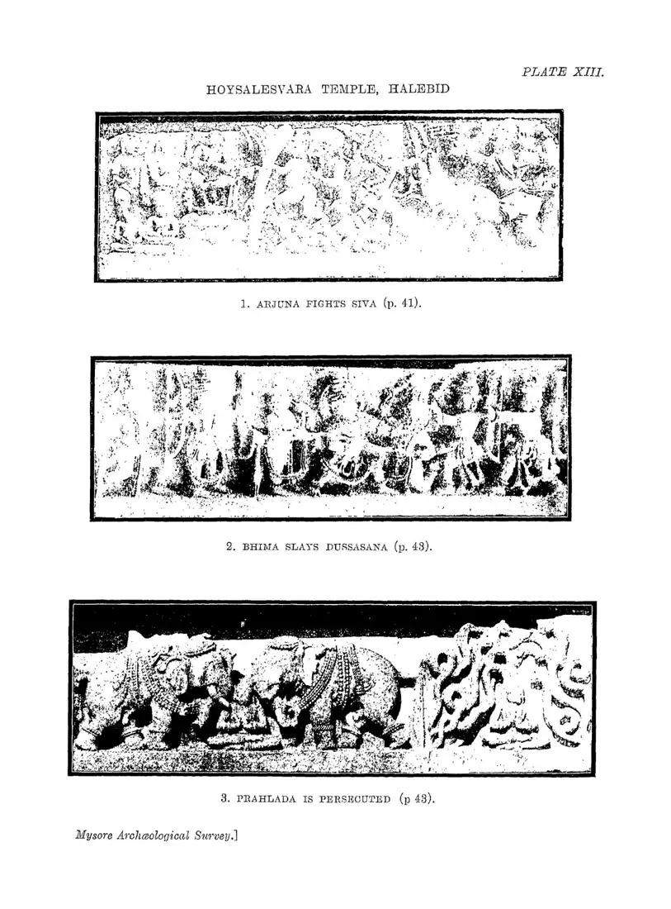
- ARJUNA FIGHTS SIVA (p. 41)
- BHIMA SLAYS DUSSASANA (p. 43)
- PRAHLADA IS PERSECUTED (p. 43)
South Additional Niche of North Shrine
58. The twelve forms of Vishṇu, standing, with intervening turrets.
59. Śiva and Gaṇapati dancing with accompaniments.
60. The 12 Âdityas standing with a shooting Chhâyâ and Châmara bearer on either side.
61. (a) Vishṇu seated in state with entourage.
(b) Dhṛitarāshṭra and Bhīshma in durbar before the great war.
(c) Battle between Bhīshma and Arjuna; four-handed Kṛishṇa is the latter's charioteer.
62. (a) Battle between Bhīshma and Arjuna.
(b) Half-worked and not clear.
(c) Battle between Drôṇa and Arjuna.
North Additional Niche of North Shrine
63. (a) Śiva and Môhinî dancing.
(b) Ugra-Narasimha seated in state.
(c) Śiva dancing with Gaṇeśa, etc.
64. Tāṇḍavêsvara, musicians, etc.
65. Main wall: The seven holy mothers with Durgâ and Vīrabhadra to right.
66. Mahâbhârata continued—This interruption of the Mahâbhârata story creates a suspicion that the large niches are additional.
(a) Abhimanyu attacks the chakra-vyûha which is defended by Kalaśadhvajâ Drôṇa. Abhimanyu enters the vyûha in the right place, storms its centre and is shot by all the Kaurava heroes together and is killed. The picture shows his body riddled with arrows and he is still fighting. Around him lie the slain Kaurava battalions. Outside, Bhīma is fighting to rescue his nephew.
(b) Kṛishṇa tells Arjuna of his son's death when the two are bathing in the Vaiśaripâyana lake, while a two-wheeled chariot waits by.
(c) Bhīma slays Duśśâsana with whose intestines Draupadî adorns her hair. Inscription below:— ದುಸ್ವತ ವಿಧ and in Nâgarî ೮೦ ಶ್ರೀ ಮಹೇತ್ವರ ತ್ಗಮೈಜಲಃ.
(d) Drôṇa and others rush to Duśśâsana's rescue in two-wheeled chariots.
67. (a) Bhīma fights Bhagadatta's elephant while Arjuna shoots from behind Bhīma; Kṛishṇa with four hands saves Arjuna from the divine boar's tusk which is hurled at him.
(b) Bhīma slays the elephant.
(c) War with elephant battalion; men and elephants lie about in a heap.
(d) Arjuna fights the Sama-saptakas whose hands are pinned to their faces with arrows. Behind Arjuna is a man blowing a horn and this instrument is often popularly called a telescope. The existence of telescopes, however, is proved elsewhere in many sculptures. Sculptor: Haripa.
Kan-inscription: ಚ (ಬ?) ಡೆಯಗಿಂದು ಹರಿಪನೂ ಜೆಲ್ಲೂಸ ಆಗದೆಲೂ ಇದಂ.
North additional niche of north shrine:
68. Śiva and entourage dancing.
69. Varied forms of Vishṇu standing; some spaces blank.
70. (a) Rudras standing—There are only eight figures out of the proper 11. Three are unworked on the main wall.
71. (a) Môhinî dancing; in the middle a woman is pouring water or wine into another's mouth.
(b) Monkey molests Môhint. More dancers.
72. Bhairavî group—Sculptor, Mâba. Dakshiṇâmûrti is seated and has a coat and a cap with button pattern on it.
(b) Ladies in three panels. One of them is a mother with a child on her hip.
(c) Umâmahêsvara holding full court with dancers to the left and Gaṇêśa, Kumâra, Vishṇu and Brahma to the right. Sculptors:
ಮಬ, ಮಾಬಣನ ಮಾಬ, ಕಲಬಣನ ಮನ
ಐ ಮಾಡಿ (ದ).
(d) Ladies: more poses.
73. (a) Tâṇḍava-Sarasvatî.
(b) Tâṇḍavêsvara with dancing Gaṇêśa.
(c) Ugra-Narasimha.
(d) Vishṇu standing—three forms.
74. (a) Gajâsuramardana and dancing Gaṇêśa.
(b) Pârvatî, with mangoose at her foot, holds court in Kailâsa.
(c) Dancers; Kumâra and Lakshmînârâyaṇa.
(d) Dancers and Môhint as Kâpâlikâ.
75. (a) Dôhala—a fair lady kicking the Aśôka tree and plucking its fruit (?).
(b) Dancers with accompaniments; Śiva in the corner.
76. Śiva, (two-handed) and Pârvatî in durbar with dancers and musicians; the Gaṇas wearing kullâvi caps and coats to the right, ṛishis bringing fruit, Vishṇu and Gaṇêśa to the left. This Vishṇu holds śankha, goad, padma and gadâ.
Part II: Study of Monuments and Ancient Sites › Hassan District › Halebid › Hoysaļėsvara TempleFour Outer Doors
There are four doorways of almost similar design. They may be numbered thus; (1) North, (2) North-east, (3) South-east, (4) South. The excellence of their work is in the reverse order so that it would be convenient to describe them in that order.
47.
(4) South door :—When the original temple was built, the navaraṅgas were open pavilions with no doorways. In the days of Narasimha I, they were enclosed and the four entrances were provided with doorways as seen from an inscription on the lintel of the south doorway. 1
This doorway is supported on each side by a dvârapâla, about six feet high, with the third eye and fangs and wearing all possible ornaments, the latter being worked in the most elaborate fashion to the minutest detail. They wear jatâmakuṭa, stand in tribhaṅga and have four hands each. The one to the right of the doorway holds a damaruga and cobra in the back hands while the front ones held originally the triśûla and gadâ, which are now broken. The one on the left holds a blazing fire and damaruga. His front hands also are broken. Their damaged faces have been recently trimmed, so that they now appear ugly and flat. They are carved on stones separate from the slabs which serve as jambs, unlike as in the sukhanâsi doorway at Belur. A technical point to be noted is the use of the small drill especially, for separating the small beads, tens of thousands of which go to form the ornaments of each dvârapâla. The lintel is a large heavy slab about 12 feet long, three feet high and one and half feet thick, on which is elaborately carved a design with Tâṇdavêsvara in the centre. The god dances on the body of Andhakâsura and has his eight hands in the usual poses. He has a jatâmakuṭa and a third eye and is fully ornamented. His figure is fine and the face wears a benign smile. Andhakâsura looks up at the lord; so also Nandi, the bull, and the crowd of musicians who accompany the lord with drums and cymbals. Above the god's head is a five-hooded snake with a towering canopy. To the right and left of the group are panels formed by tower-crested pilasters between which, to the right, stands Brahma and, to the left, Vishnu. Above the god is a latâ-tôraṇa surrounded by a serpentine makara-tôraṇa in the convolutions of both of which are swans, musicians and flowers. On each side is a makara with a warrior in its mouth, Varuṇa and consort on its back and soldiers in vîrâsana near its feet; behind it are more soldiers. At each end, there is a lion with a cobra in its mouth, the one on the right fighting an elephant, the one on the left fighting the hero Saṭa. Above the makara-tôraṇa and partly hidden by it are friezes of seated Saptamâtrikâs, Gandharva musicians and the eight Dikpâlas. At each end, on the top, above the lions is the figure of a soldier, perhaps Vtrabhadra, with fangs, jatâmakuṭa, oblong shield and sword. (No third eye is seen.)
The sculptor was Kâlidâsi as already stated. His work as a whole is an elaborately carved piece unequalled for its elegance and beauty. All these slabs composing the doorway, whether sculptured or not, are of soft potstone, easily
1 The inscription is unpublished and reads thus :
1 ಸ್ವಸ್ತಿ ಶ್ರೀಮತು ಪ್ರತಾಪ ಹೊಯ್ಸಳ ನಾರಸಿಂಹದೇವನ ರುವಾರಿ ಕೇದಾರೊಂಜಂಗೆ ಮಲಪರಗಂಡ
2 ಭೇರುಂಡ ರೂವಾರಿಗಿರಿವೆಜ್ಜದಂಡ ರೂವಾರಿ ಕಾಳದಾಸಿ ಗೆಯ್ದುಮಕರ ತೋರಣ ! ಮಂಗಳಂ ಶ್ರೀ yielding to the chisel. This is one of the finest doorways of the temple, and through it the Hoysala king used to visit the linga every morning, coming from his palace which was a furlong away to the south-west. At the back of the lintel stone inside the doorway an attempt has been made to carve another panel of Tâṇḍavēśvara. But it appears to have been abandoned at an early stage.
(3) South-east Doorway. (Plate XII-1). This is perhaps the best of the outer doorways. In design, quality and execution, it is very similar to the south doorway and is the work of Dêmoja. 1 Only the chief differences will be noted here. The ten hands of Tâṇḍavēśvara are intact, except one, and they are thus disposed: rosary, lamba-hasta, sword, trident, arrow, svarga-hasta, drum, bow, buckler and bowl. Inside the latâ-tôraṇa is a pushpa-tôraṇa with an inner frieze containing fourteen small figures in the flying posture. They consist of musicians with varied instruments. Above the makara-tôraṇa there are only two friezes: the lower one containing the eight Dikpâlas and the upper one consisting of 14 figures standing in samabhaṅga. These are in order, to the right: Narasimha, Sarasvatî, Brahma, Gaṇêśa, Pârvatî, (doubtful), Śiva; to the left: Śiva, Pârvatî, Bhairava, Indrâṇi, Kêśava, Sūryanârâyaṇa, Pârvatî. Above the latâ-tôraṇa at each upper corner is a small figure under an arch; of these the one on the left holds padma and gadâ and must be a form of Vishṇu. On the back of this lintel also is a half carved 'Tâṇḍavēśvara group as on doorway No. 4.
(2) North-east Doorway.—This also, on the whole, resembles the other two with these differences: The figures have shortish limbs and are less finely carved. The musicians around Śiva's head are larger than those on the other doorways and look crowded. Behind the makara-tôraṇa and above the clouds are only two friezes of the Gandharvas, holding garlands, and the Dikpâlakaś. Behind the tail of the makaras there are no lions, since the sculptures end there. The main figure, especially, does not appear to have been finished and polished. The two dvârapâlas who originally stood against the jambs are missing, leaving the bare slabs open to view.
(1) North doorway.—This doorway very closely resembles doorway No. 2, and is even less elaborate. The figure of dancing Śiva is inferior to the other three, the right leg being too far lifted. Near the god there are only two drummers and no other musicians. The tôraṇas are poorer in execution while above them over the clouds is only one row of figures consisting of the eight Dikpâlakas. The lions and soldiers at the top ends are absent. This is perhaps the poorest of the four lintels. The original dvârapâlas of this doorway are lost and the two now standing against the jambs have been brought recently from elsewhere and placed
1 The Kannada inscription on a basement cornice, behind the Surya shrine, reads :
ಪೂರ್ವದ ಬಾಗಿಲುವಾಡವ ದೇವೇಜ ಗೇದ here. They are also mispaired. Doorways 2 and 1 have no design on the inner faces of the lintel and appear to be the work of the same sculptor.
South Door
South-east; North-east and North Doorways; GENERAL DESCRIPTION. PAGE
Part II: Study of Monuments and Ancient Sites › Hassan District › HalebidKédárésvara Temple : General Description
The Kêdârêsvara temple has been studied under the following heads:—
I. History. XV. Pierced windows.
II. General description. XVI. Large wall images.
III. Platform. XVII. Upper wall panels.
IV. Elephant frieze. XVIII. Eaves.
V. Horsemen frieze. XIX. Roof and tower.
VI. Creeper scroll. XX. Navaranga.
VII. Lions frieze. XXI. Pillars.
VIII. Creeper scroll. XXII. Ceilings.
IX. Mythological frieze. XXIII. Niches.
X. Makaras. XXIV. South Cell.
XI. Swans. XXV. North Cell.
XII. Yakshas. XXVI. West Sukhanâsi.
XIII. Turrets and lions. XXVII. West Garbagriha and Linga.
XIV. Front railing.
In this Report only some points from the note under II are published.
II—GENERAL DESCRIPTION.
If we make allowances for the mistakes made by the renovators of the last generation, the Kêdârêsvara temple is a homogeneous structure, most typical of Hoysala architecture. It has no accretional buildings and additional structures to mar its design. In this respect, it is valuable, like the Kêsava temple at Sômanâthapîr, for the purity of its type unlike the Belur or even the Hoysalêsvara temples which have accretional later buildings.
Though it had three shrines, its general plan was that of a typical single-celled Hoysala temple with a star-shaped garbhagriha, an open sukhanâsi and an indented square shaped navaranga. The latter was open on the east, where there is a slight extension to accommodate the platform and doorway añkaṇa. The west extension of the navaranga was provided with a doorway which converted it into a sukhanâsi, while similar doorways for the south and north extensions converted them into smaller cells, though the building was really planned like a single-celled structure.
Its size is about equal to the Kappechennigarâya temple in Belur but it differs from that temple in having its outside walls covered elaborately with sculptures of a quality not in any way inferior to those of the Belur and Hoysalêsvara temples.
7
The ceilings are many of them dome-shaped, interestingly designed and tastefully carved. In nearly all respects the Kêdârêsvara temple can be studied as a typical structure of the Hoysala style. Fergusson considered it the finest building of the style. There is an interesting point to be noted in the plan of the temple. It does not appear to face directly east, nor is it inclined 18° north of east as the Belur and Hoysalêsvara temples are. Its centre line appears to be about 15° south of east. Why this difference has arisen is difficult to explain. Could it be that the old architects were not quite sure of the correct east to west line?
Part II: Study of Monuments and Ancient Sites › Hassan DistrictSurvey of the Site of Dorasamudra
Pañchalingésvara Temple
No heading in the body: this section starts at its printed page (50).
See the map on Plate VIII.
In the old Hoysala fort, there is the eastern gateway leading from the Hoysalêsvara temple by a winding road through the fort wall on to the tank bund. On the outside, the gate is defended by two buttresses having walls of huge rough stones. It is a wonder how these heavy masses of stone were moved and placed in position.
About a hundred yards to the west of the traveller's bungalow, there is a group of five ruined temples (Number 16) with the Nagarêsvara Panchalingesvara Temple. in the centre and the four others arranged in 'T' form: two directly to its east, one to its north and one to its south. They are mostly structures of darkish stone of the typical Hoysala type with beautifully worked turrets, Bhuvanêsvari domes, large wall images and running friezes of swans, makaras, mythology and elephants visible here and there among the mounds. The central one which is of very darkish hard stone appears to have been a large structure of very great beauty. Its fallen ceiling dome pieces, wall friezes and beautiful large wall images bear testimony to its artistic greatness. The wall images are much larger than those of the Kêdârêsvara temple, though smaller than those of the Hoysalêsvara temple. Several fine pieces like Kırishna, Garuđa, Indra on his elephant, two monkeys fighting for a fruit, etc., are lying about. They are sculptures of much beauty, not inferior to those of the other temples at Halebid. The doorway of the garbhagriha which is said to have been standing a generation ago is stated to have been removed to the Kêdârêsvara temple. On the pedestal of the wall images is a running creeper-scroll, about nine inches wide. This characteristic helps us to identify many wall images now in the Kêdârêsvara temple as having been brought from the ruins of the Nagarêsvara temple.
To the north of the central temple is the fifth mound on which the Râmâyaṇa frieze (the Saptatâla story), two friezes of makaras and hainsas and a row of elephants and a large linga pedestal are seen. The basement of the garbhagriha of the south temple can also be seen. It is observed that between the outer wall which is composed of large square slabs placed one above the other and the inner wall is a core of large bricks showing the nature of the filling in of some of the old temples. These temples are built on the top of the slope to the north of the Benne-guđđa which commands a good view towards the east, north and west. The area will fully repay excavation as sculptures of great value are sure to be found. The existence of the five temples together, with the central one of Nagarésvara, suggests that the area was almost in the centre of the busiest quarter of the old city. The main road must have run by the temples from west to east, i.e. , from the Belur gate to the Hoysalésvara temple. A furlong to the south is the palace area.
Rudrésvara Temple and Naðugéri Máramma
Old Fort Wall; Šúladavana and Jain Ruins
No heading in the body: this section starts at its printed page (51).
About a hundred yards to the west of the Nagarésvara temple, beyond a stone ridge, there is the Kari-kal Rudrésvara temple, a small trikúṭāchala of the early Hoysala type in which are installed two lingas and a black stone image of Virabbadra. The plan, though plain, the round pillars of the navaraṅga, the domed ceilings and the ornate doorways with Gajalakshnî lintel, the vimânas of the stepped pyramid type, the porch outside the navaraṅga and its pierced windows and the use of soap and pot stone, and finally, the Hoysala crest in front of the tower of this Rudrésvara shrine declare it as a minor Hoysala building of the early period. The temple faces due south and has a mahâdvâra of the old, though simple type, outside which might have run the old road from west to east.
Directly to the west of the Rudrésvara temple by a hundred yards on the north slope of the Benne-guđđa, there is a large mound of earth on which lies the inscription stone, Belur 342. About 15 yards to the south-west is a pit in the ground in which at a depth of about six feet from the surface can be seen a small typically rounded pillar of pot stone. This is pointed out as a Nelamâlige or underground cellar. It is perhaps worthwhile excavating the area.
About a hundred yards further west, on a lower level, there is a soap-stone figure of Durgâ seated in sukhâsana holding, as usual, the trident, drum, kapâla and head. She wears a ruṇdamâlâ and has a beheaded man under her foot, and goblins to the right and the left, and a trunkless head under her seat. It is no doubt a Hoysala image. One of its right hands is broken and its face is much damaged. It is said to have been in the centre of the inhabited quarter of Dôrasamudra, called Nadugêri, and might have had for itself in the past a temple which has disappeared. The goddess is now called Mâramma. About 20 yards to her south-west is a vacant pîtha lying in the fields.
About a hundred yards to the west of the Chikka Benne-guđđa the ground has a sudden fall and traces of an old fort wall of smallish stones are seen here. This must have been another fort wall, which protected the central and most important portions of the town.
About three furlongs directly to the west of the Benne-gudda we meet with a strong line of fortifications consisting of a large fort wall with a deep moat (total depth about 50 feet at present) protected on the outside by a small wall with another moat. It is strange that a natural high ground faces the wall on the west and thus makes it assailable from that quarter. The inner face of the wall is earthen while the outer face has a revetment of large rough hewn stones placed one upon another so as to form a vertical face. The wall has small bastions projecting forward at almost every hundred yards, but is otherwise in almost a straight line here. A little to the south-west we come to a gateway, the winding road passing between two high walls, the main wall being projected westward and turned to the north to give this wind. This is probably the old Belur gate. The fortification must have been a formidable one in the old days. At present no traces of a door-frame or doors are to be seen; possibly they were of wood work and have disappeared. About two furlongs to the south-east of this gate there is another gate which leads on to the bund of the Kaṭtesōmanahalli tank. It is now completely covered with lantana and the tank has made a breach into the fortwall. The gate-way is now shown in the map as the road to Kogōd village, a place which cannot be identified by the present natives of Halebid.
We pass on eastward with several gates to our right and temple mounds to our left. On the south-east, there is also a gate now overgrown thickly with lantana . Just outside it there stands a small recent shrine built out of the materials (like pilasters with sculptured figures) collected from the ruins of a neighbouring Hoysala temple. The temple has a late Vijayanagar period image of a Dēvī with two hands holding padma and kalaśa and seated in sukhāsana with the figure of a man in outline on the pedestal. On each side of her stands a hero with a sword in one hand, the other hand being placed on his belley. These are identified popularly as Lakkaṇṇa and Vīraṇṇa, sons of the sister of Ballāla III, who are said to have been unjustly executed. But the figures appear to date from many centuries later. A number of Hoysala pillars, images etc., are lying around as also two vīragals and two sacrificial stones with the Dēvī's sandals in the centre and beheaded bodies and heads and a man cutting off his own head, sculptured on the panels. The neighbourhood is called Śūladavana and appears to have been connected with the necropolis of the great city.
About a hundred yards to the south of the existing Jain bastis there are several small and large mounds formed by the ruins of ancient Jain temples. There are several inscriptions but the most interesting object is a colossal Jain image, broken into several pieces and lying on the ground. Its original height must have been more than 15 feet. Its feet are each about 30 inches long, while the head from chin to crown measures 20 inches.
Jain ruins.
Benne Guđda
No heading in the body: this section starts at its printed page (53).
The chief natural landmark of the old Dôrasamudra site is the Benne-guđđa, a hill roughly about 250 feet high and two furlongs long, lying north to south, with a broad high earthen ridge tapering towards the west and ending in the Chikka Benne-guđđa. A pathway leads by an easy climb from the Nagarésvara shrine past the Rudrésvara temple up the main hill. On the hill near its northern end is a platform about 30 feet square, called Pirangi Batêri. This was probably used as an observation point by the Hoysalas and as a common battery in the Pâlegâr period. It commands a good view of the surrounding country. To the west, beyond the Chikka Benne-guđđa the old line of fortifications which is cut across by the new Belur road is visible. To the north-west at a distance of more than two miles there is Narasimhapura with a temple of Yôgânarasimha, a Hoysala structure with a main building and a pillared pavilion. The tower, however, is a brick structure built many centuries later. Beyond Narasimhapura is the Ghaṭṭahalli-guđđa stretching towards the Belur road. To the north beyond the Rudrésvara temple and the Pañchalingésvara mound are the new village of Halebid and the Bidarakere tank between which is the old fortification line. Away to the north, at a distance of about five miles, Bełavâđi with its temple and tank is visible. As a background to Bełavâđi is the Kalaśapurada guđđa, a low range, beyond which are to be seen the high peaks of Bâbâbuđangiri.
To the north-east of the hill the Hoysalésvara temple presents a beautiful view. This is perhaps the finest view that could be taken of the temple whose indented outlines must have presented a grand and beautiful appearance when the towers were intact. Beyond it are the tank and its fields and the jungle towards Chatčathalli with the hill Oñte-marađi rising a little more to the east. Beyond Oñte-marađi hill is the Arasikere range with the Mâlêkal Tirupati Peak.
Directly to the east there is first the moat with the fort wall of the palace enclosing a large field of ploughed land now known as the Aramane-hola where the old palace of the Hoysalas is said to have stood; portions of it are still called Tankasâle hola (mint) to the north, Hajârada guñđlu (front court) to the east, Lâyada salige (stables) to the south, and Ânêguñđi (elephant stall) towards the low ground. The main palace must have stood on the terraced fields to the west, facing east. This fort has a gateway in the middle of its eastern wall which looks on directly towards the Kêdârésvara temple. At the west centre, where the old palace must have stood, large stones still lie about in the fields and are clearly visible from the hill. Beyond the palace, is Bastihallji with its Jain temples, and further on at the end of the peninsula there is the fort wall, beyond which is situated the broad lake, Dôrasamudra, which gave its name to the old city. Further away the sun rises on the top of the Arasikere range. To the south-east extends a gulf of the tank at the mouth of which is an island. On the latter the pleasure palace of Ballâlarâya is said to have stood. More directly to the south-east is the Šūladavana and across the gulf is visible Hulikere which has a beautiful stone-built Hoysala pond. Further away are Râsiguđđa and Sige-guđđa with their wild game. A little more to the south is Bhairavana guđđa on which a temple of Bhairava is situated. It faces south, has a stepped pyramid tower and wears an ancient look. To its west on the top of that hill can be seen a stone inscription set up upright. Directly to the south of the Benne-guđđa beyond the fortwall and ploughed fields is the Pushpagiri hill with its two temples of Mallikârjunêsvara and Rudrêsvara. 1
To the north-west there is a fortwall with the Katțe Sômanahalîi tank beyond which is seen Tîrthamallêsvara with its famous well hidden by gardens. Kêtalapura and its heights intercept the view of Belur, which is to west south-west. The seven large trees appearing silhouetted against the sky in this direction are perhaps about a mile and a half to the north-east of Belur.
The top of Benne-guđđa rises to the south and is only about 80 yards long. The southern end, where the peak is, has also an old platform, the stone revetment of which is seen here and there. The only building existing is a small temple of about the 17th century in which a few pillars and beams of the Hoysala period brought up from below have been used. The building is about five and half feet square and seven feet high and has a single room only. In this chamber, which has no door, stands an Âñjanêya or Hanumân relievo, about five feet high, dating from about the 17th century. The shrine faces east and has nothing remarkable about it. On the face of the rock which forms the east side of the platform is an old four-line Nâgari inscription of Ballâla by the side of a natural cave recording arrangements for the supply of water to Belur from the Yagachi.
To the south of the peak there is again a high cultivated ridge, at the south end of which some rocks mark the end of the hill.
About forty years ago, it is said that some unknown person excavated a pit in an unknown part of the old palace area and that brick structures were found about six feet below the ground. From west to east it has three terraces of which the westernmost was perhaps the palace. Diagonal trenches in the north-east corner of the western terrace and south-east corner of the middle terrace would be fruitful in disclosing the old walls of the palace. The whole area is a government land cultivated by tenants, except the north-east field which is a gift to the Rañganâtha temple.
Palace
1 Rev. H. Heras of Bombay has tried to indentify this neighbourhood with the Triparvata of the Kadambas. There are many more hills than three and it is difficult to accept his conclusion.
Basti Temples : History
No heading in the body: this section starts at its printed page (55).
THE BASTI TEMPLES.
About two furlongs to the south of the Hoysalêsvara temple and directly to the west of the Kêdârêsvara and east of the palace are three Jain bastis, all of which are Hoysala buildings having their own points of interest.
When Vishnuvardhana Hoysala was celebrating his victory at Bankâpura in Dharwar District in the year 1133 A. D. news was brought to him of the birth of his son. Since, at that time, the Paršvanâtha Basti was consecrated, he gave the deity the name of Vijaya Pâršvanâtha. Boppa-dêva erected the temple and set up the god as a memorial of his father Ganga Râja, a famous minister and general of Vishnuvardhana. 1
The eastern temple of Śântinâtha was constructed about the year 1196 A. D. in the time of Ballâla II 2 but its mukhamanṭapa is a granite structure definitely of the Vijayanagar period.
The middle temple of Ādinâtha is a purely Hoysala building, though very small.
Pársvanátha Basti ; Mukhamanťapa
This temple had originally a garbhagrîha, an open sukhanâsi (later on provided with a doorway) and a square navaranga. In front of the last and not structurally connected with it, is the mukhamanṭapa. A small insignificant mahâdvâra leads into the compound in which is first seen a star-shaped balipiṭha (lotus-plan, with about 32 petals).
The mukhamanṭapa (Plate IX—I) is a square structure, 17½ feet high, with the ceiling supported by 32 rounded lathe-turned pillars beautifully ornamented. All round runs a stone bench, outside which is a slanting railed parapet with sculptures on the panels. Two large potstone elephants support the entrance of the mukhamanṭapa. 3
Sculptured figures are now found on the railing which now exists only to the south of the mukhamanṭapa, the rest being lost. The eastern panels show a king in durbar with dancers and drummers. A servant goes to the queen, salutes her and she dresses herself and is brought by force (like Draupadî) by the king's guards to the court. The other panels show two ladies conversing with a man holding a sword, a lady with a parrot, and a husband and his wife conversing. These are evidently in the wrong place.
1 Ep. Carn. Vol. V. Bl. 124.
3 The ugly structure behind them should be immediately removed.
Main Temple ; Outer Walls ; Parapet
Navarańga; Navarańga Ceiling; Pársvanátha Image
No heading in the body: this section starts at its printed page (56).
The western slab also shows a king in durbar enjoying a dance, a soldier and his lady with a parrot, and a lady at toilet. These appear to be fragments referring to the early lives of the Tirthankaras.
The central square of the mukhamanṭapa is supported by four thick and eight thin pillars, which are all finely ornamented with beaded work. The central ceiling has a flat slab in the middle supported on three octagons and a square. On the frieze of the central slab are in addition rows of elephants, horses and footmen, and dancers. On the north, there are two Jain scenes: (1) a king and a queen seated; (2) five persons meeting together and all of them standing in water half merged. (Not identified.) Another panel shows a Jaina seated with hands raised, a kingly personage, (perhaps an Arhant), and a herd of deer looking on. (Story to be identified.) In the centre, however, is a divine personage described locally as Bhuvanêndra Yaksha. He is probably Pārśvanâtha as a Prince. His left hand is raised and the right hand damaged. He has a seven-hooded cobra over his head and a princely person sits in sukhâsana at each of his feet, while the gods and Yakshas fly about near his head. This group is identical with the one in the navaraṅga where it is better preserved.
The outer wall of the Pārāśvanâtha Basti is plain with only plain, narrow pilasters, except at the base and the parapets. The base is ornamented with a row of makara faces interrupted, here and there, by a lion or a sculptured group. Among the latter, particularly near the garbhagriha, are the following:—
Main Temple: Outer walls.
( East )
Face 3. A bearded shpinx fighting Saṭa.
Face 4. Saṭa and lion, dancer and drummer, elephants fighting and makaras swallowing gryphons, and elephant-faced lions,
” 6. Dancing Môhinî, Dakshinâmûrti and another sage—a divine lady (Durgâ ?) dancing, makaras swallowing Yakshas, elephants fighting lions, two pairs of wrestlers, etc.
On the outside the parapet is mostly destroyed, the stones being now stored in the compound of the Kêdârêsvara temple. It is however standing around the garbhagriha where clockwise the following and other figures can be identified:
Parapet.
Yakshas; seated Jinas (four on each face), fine figures very similar to each other except the central one which is seated on a lion pedestal; squatting goddesses among which may be seen Śāradâ, Durgâ, and Padmâvatî (rosary, goad, pâśa, phala, etc.). The south and west faces are similar to the east face; but one of the goddesses is seated with chakras in both the back hands and padma and phala in the two front hands. It is possibly Chakrêsvarâ.
The navaranga doorway is a large one, about 12 feet high, with a Jina figure on a simhâsana on the lintel. The navaranga hall has six small and two large wall niches which are very similar to those in the Hoysalêsvara temple. Each of them, originally, had images of the Tirthankaras. 1 There are now 24 pedestals, but the images are all missing. What they were can be guessed from the vehicles carved on the respective pedestals. The main interest in the navaranga is in its pillars and the central ceiling. The latter is borne by four thick and eight thin pillars of hard soapstone, rounded, lathe-turned and so finely polished that visitors can see their own reflections. These are perhaps the best known Hoysala pillars of this kind. Each pillar has its usual cubical, wheel, disc, bell, pot and umbrella-shaped mouldings and squarish capitals.
The central ceiling is a beautiful structure with three octagons and a square and flat top slab. Though the lower surfaces have only lion faces and the general plan is similar to that of the mukhamaṇtapa, yet it is very much finer and more elaborate. On the vertical faces over the lower octagon are the eight Dikpâlas, each with dancers and musicians in front and soldiers behind. In the next higher octagon and the one above it and also on the inner faces of the slabs of the squares there are the 24 Jain Tirthankaras, each seated in the characteristic yôgâsana with a Yaksha to the right and the corresponding goddess to the left, and with worshippers on each side. The top slab is designed and carved identically with the one in the mukhamaṇtapa but is, in fact, more worthy of detailed study. The central deity holds a bow in the left hand and a śankha in the right hand. In the south-east corner of the navaranga, there is a large image of a Yaksha with fat belly and dangling curved lips. His build is like that of a Gaṇêśa with a human head. His right hand holds a lotus and the left the mâtanga-phala. He appears to be Dharaṇidhara-yaksha.
The sukhanâsi is entered between two large pillars and has an image in the south-west corner of a Jain goddess holding flower buds in the right hand and fruit in the left. She is probably Kûshmâṇdini. A large plain doorway with a Jain image on the lintel leads between diverging walls and two plain round pillars to the garbhagriha. Here stands a colossal image, about 14 feet high, of the last Tirthankara, Parśvanâtha, with a seven-hooded cobra over his head. The absolutely naked body of the deity is perfect according to the Indian ideal of a Yôgi. The hair is short and curly and beautiful in its ringlets. The face has a benign
1 . Kan. inscription on 2 pilasters :
(1) ಅರಿಕೆಯ (2) ಸಿರಿಪವ್ಸ.
8 sympathetic smile. The neck has three folds. The shoulders are broad, the waist small and the limbs well proportioned, rounded and tapering. On the right side of the god there is a male deity standing with a three-hooded cobra above his head. On the left is a goddess similarly standing with a similar cobra. Of her four hands one is broken (broken, goad, pása and phala). Both the gods wear the sacred thread, kiríṭas, makara-kundalas and other ornaments. The makaratôraṇa with serpentine arch has the eight Dikpâlas to the right and left with drummers and musicians in other convolutions. Behind the god is the serpentine body of the seven-hooded cobra supporting the image. The garbhagriha ceiling has a simple large padma. 1
Ádinátha Temple
No heading in the body: this section starts at its printed page (58).
The middle temple of Âdinâtha is a small one with a garbhagriha, an open sukhanási and a porch. The porch is typically Hoysala with its elephants, two round pillars, ornamented potstone ceiling and a stone bench. The railings are missing. Adinatha Temple. The navaraṅga doorway which has the usual ornamental bands and pilasters has Jain figures on the lintel with a lion on the pedestal. The navaraṅga has four square pillars with sixteen-sided fluted shafts. There are two canopies against the south wall, both of which have rounded Hoysala pillars and śikharas of the Hoysala type. Under the east canopy on a base having a crescent moon is a beautiful Hoysala image of Sâradâ with rosary, goad, pása and pustaka. It has a smiling face and is not correctly Padmâvatî. The image under the west canopy has disappeared. In its place is now kept on a padmapítha a round panel containing the footprints of some Tîrthankara. The prints are of natural size, incuse and very natural looking.
The garbhagriha doorway has a plain but well designed lintel of pure black stone (rarely used) with an inscription upon it. The garbhagriha has a fine pedestal with a lion seated in front and other lions in the panels. Against the back wall there is a fine double tôraṇa with the eight Dikpâlas in its convolutions. On each side of the pedestal is placed a beautiful small potstone elephant brought in from elsewhere and kept here. On the pedestal itself is engraved an inscription. The original image of Âdinâtha which was seated here is now kept in the Sântinâtha Basti, since it is mutilated. A small standing image is now worshipped in its place. The temple was built in the days of Vishnuvardhana (Belur inscription 335).
Šántinátha Basti
This is a plain structure equal in size to the Pârśvanâtha Basti, but it has instead of the mukhamaṇṭapa a very large porch of the Vijayanagar period constructed out of roughly shaped old materials.
1 An inscription (E. C. V. Bl. 127) on the outer wall of this Basti states that within 15 cubits to the north-east of the temple lies in the ground an image of the god Sântinatha, 6 cubits high. The image, however, has not yet been discovered.
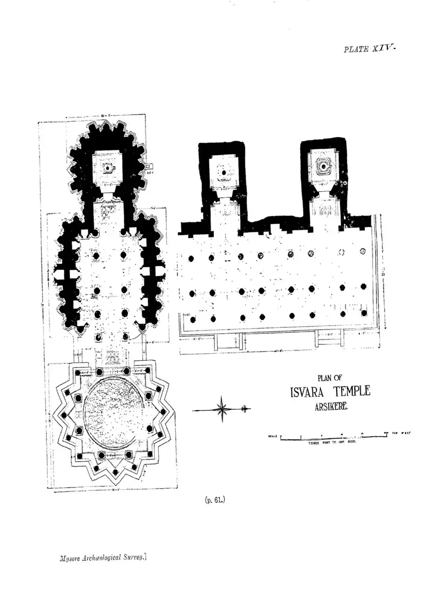
- PLAN OF ISVARA TEMPLE ARSIKERE (p. 61)
Virakta Maťha
No heading in the body: this section starts at its printed page (59).
The navaranga pillars are similar to those in the Pâršvanâtha Basti but are not ornamented, several portions being unworked. The ceiling consists of six plain octagons placed over one another cornerwise with a square flat slab on top.
The open sukhanâsi entrance has two plain round pillars and here is seated the image of Âdinâtha with its head broken.
The garbhagriha is a plain structure with two flights of steps leading up to the back of the god; it has a plain octagonal ceiling placed cornerwise. The tôraṇa is of stone and is comparatively plain and coated with lime. The image which is about 14 feet high is similar to that of Pâršvanâtha. On either side of it are the usual male and female gods.
On the pedestal of the image is an inscription (Belur 334). In the navaranga against the east wall are two turrets with inscriptions consisting epitaphs of Jain images.
In front of the temple there is a large pillar, about 20 feet high, with a rounded shaft and a Yaksha in a shrine on the top.
To the north-east of Bastihalli can be seen the remnants of an ornate Śaiva temple of the Hoysala period of which only the open sukhanâsi and garbhagriha are standing. The old sukhanâsi doorway has disappeared. The garbhagriha has three inner niches and in the ceiling on the octagon are the eight Dikpâlas. The sukhanâsi ceiling has Añdhakâsuramardana with the eight Dikpâlas. In front of the temple appears the basement of the old navaranga and to its north-east there is an old draw-well with its square sides finely revetted with dressed slabs. Behind the temple can be seen the remains of an outer niche with its Râmâyaṇa frieze, a row of large images, etc., which show comparatively inferior workmanship.
On the bund of the Dôrasamudra tank and in its waste weir are the wreckages of old images. To the south of the bund stands a large Nañdi, narrow and long, of, probably, the fourteenth century workmanship. It must have belonged to a temple which faced eastward. Its two Śaiva dvârapâlas are still standing half buried in the earth.
At the north-east end of Halebîd, close by the fort walls, stand two temples one of which is that of Vîrabhadra. (Plate IX—2.) Its
Virabhadra Temple
The outer navaraṅga appears to be a complete navaraṅga of some other small temple transferred bodily with its round pillars and Tâṇdavêsvara ceiling.
The inner navaraṅga is a very low one with only five feet between the floor and the beams. It has two side niches. In the north one, stands a female image with sword, arrow, bow and shield. It has an inscription on the pedestal. In the south niche is a seated image of a Vīraśaiva svâmi in the yôgamudrâ with male and female yôgis seated on the sides; Bhṛingi is dancing. Tâṇdavêsvara is on top with Nañdi below, Vīrabhadra to the right and two-handed goddesses, four-handed and bull-headed Nañdisôma to the left. It has an inscription on the top edge in late Hoysala characters. 1
The main image of the temple is a standing Vīrabhadra, about six feet high, of late Hoysala workmanship, with sword, trident, drum and shield. It wears moustaches twirled up. The tôraṇa, which is of the same stone as the image, is a mixed one with pushpa tôraṇa and mallâra tôraṇa. In place of the sinhalalaṭa is found a kirtinnukha with a skull. It is doubtful if this is the original image of the temple at all. The Nañdi in the outer navaraṅga is of the late Vijayanagar period.
The Kumblêsvara temple is another ruined shrine rebuilt with Hoysala wall and pillar pieces collected from ruins. Of the original temple there are only the remains of the inner walls of the sukhanâsi and garbhagriha.
Parallel to the Vīrabhadra temple stands the temple of 'Gûdlêsvara' whose front portion is also of recent construction with old material. The western part is a plain structure of the Hoysala type whose vimâna has been lost.
Part II: Study of Monuments and Ancient Sites › Hassan District › Survey of the Site of DorasamudraRańganátha Temple
This is also a temple of the Hoysala period with a stepped pyramid tower. Its garbhagriha and open sukhanâsi and low-roofed inner navaraṅga with its Gajalakshmî lintel are old pieces; but the navaraṅga doorway which has Śaiva dvârapâlas and the outer navaraṅga with its central ceiling, Tâṇdavêsvara and the Dikpâlas definitely belong to some Śaiva temple. The whole temple must have been a Śiva temple in which Raṅganâtha or Ananitapadmanâbha was installed after widening the garbhagriha doorway.
The image, however, is of the Hoysala period with its kuṭtita tôraṇa and daśâvatâras on the latter's edge. The god is reclining on Ananta with Śrî massaging
1 It reads thus: (it was difficult to read, since it was only partly visible).
1 ಶ್ರಿ ಗುರುರಿಂಗ ಅದಿರಿಂಗದೇವರ ಕಾರುಂಣ್ಯವ ನಿಶ್ಚರವಾಗಿ ಈ ಹಸ್ತಕರಗಣಗಳು ಸಹಿತ ಮುಕ್ಕವಾಗಿ ಇಹ ವಿರೇಸ್ಯರ
2 ರಿಂಗದ ಕಾರುಂಣ್ಯವ ನಿಶ್ಚರವಾಗಿ ಇಸ್ಮರಿದಯ ಅಂದ್ದು ದೇವರಮಗ ವಿರಂಣನು
3 ನಿರಿಸಿದರ್ ಚರ.
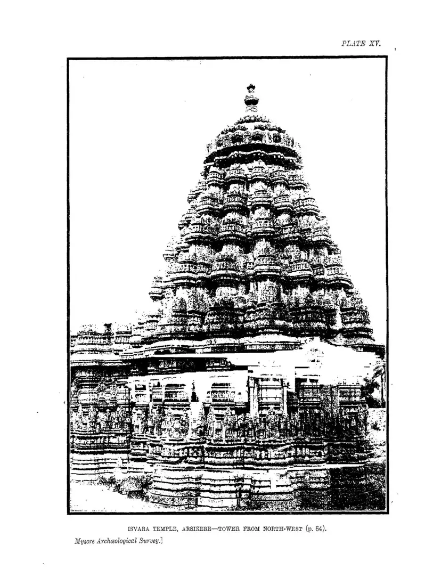
- ISVARA TEMPLE, ARSIKERE—TOWER FROM NORTH-WEST (p. 64)
Cited in the text: p. 64 ↩
his feet and Bhû seated near his head and a châmara-bearing lady behind the god.
The original name of the temple was Bôchêsvara or Bobbêsvara (Belur 325, 326).
The mahâdvâra has been reconstructed out of the stones of some ruined temple and has rows of elephants, horsemen, scrolled mythological frieze and large images including Brahma, Vishnu, Gaṇêsa and Tâṇdavêsvara who grace the porch.
Part II: Study of Monuments and Ancient Sites › Hassan DistrictArsikere
Ísvara Temple
General Description; History; Foundation and Basement; Wall Decorations; Wall Images; Eaves; Parapet; Tower; Manťapa; etc; Porch; Navarańga; Sukhanási; Garbhagríha
The Îsvara temple at Arsikere, is a structure of exquisite beauty, though comparatively small in dimensions (see plate XVI). It is General Description. almost entirely made of soap-stone and possesses the typical characteristics of Hoysala architecture. It has a small garbhagrîha, an open sukhanâsi, an open navaranga, a porch and a unique mukhamanṭapa (see plan : plate XIV). The garbhagrîha and the mukhamanṭapa are both star-shaped, while the navaranga is squarish in plan. The entrances are to the north and south of the porch which opens into the mukhamanṭapa on the east and the navaranga on the west.
Arsikere, named perhaps after the tank which was constructed in the name of a Châlukya princess 1 , was already a well known place in the days of Tribhuvanamalla Vikramâditya VI Châlukya. An inscription of his time on a conduit of the tank and subsequent inscriptions on other conduits by various Hoysala rulers show that the town and its tank were well known long before 1220 A.D. About that date in the reign of Narasimha II, son of Ballâla II, the temple was constructed and consecrated probably by the Ballâla II. There are very few subsequent references to the temple. The much plainer double temple on the north which is situated close to the navaranga of the Îsvara temple obstructs to some extent the north view of the latter. The Îsvara temple is now in the occupation of the Lingâyats who have subscribed a large fund and propose to improve the condition of the temple.
There is no indication at present of a platform existing below the level of the temple. The structure appears to be raised on a floating foundation of flat slabs placed upon a hardened bed of sand.
Foundation and Basement.
On this foundation rises a basement, about 3' high, having several cornices, the lowest one being bell-shaped. The others which are separated by deep horizontal
1 Ep. Carn. V. Ak. 87. lines of shadows are ornamented with variedly shaped geometrical mouldings whose carving work has not been finished.
The outer wall which avoids monotony by being cut up by numerous vertical incuse angles has, on each of its outer angles, a fine star-shaped or 'pond-shaped' pilaster. The tops of such pilasters expand into finely shaped capitals bearing parts of a frieze of Yakshas with one of swans and turrets above. Between these pilasters are smaller ones bearing elegantly shaped turrets of varied design standing often under tôraṇas or arches of different shapes.
Against the larger pilasters and between the smaller turreted ones are numerous finely carved images of the gods and their followers. The chief images are as follows, commencing from the south of the navaraṅga entrance :—
1, 2, 3, 4. Lakshmî and Vishṇu with a lady attendant on each side.
5. God standing—broken.
6. Three-headed goddess (Brâhmî) standing, holding pâśa—the other three hands broken.
7, 8. Goddess (Mâhêśvarî) standing, and lady attendant—symbols broken.
9, 10. Kaumârî with three visible heads holding rosary, goad, śakti, and phala. Lady attendant to the right.
11, 12. Vaishṇavî (padma, śankha, chakra and phala) with a lady attendant to the right.
13, 14. Vârâhî standing (gadâ, chakra, śankha and phala). Attendant to the right.
15, 16. South niche, now empty. A lady attendant on either side.
17, 18. Indrâṇî (vajra, goad, pâśa and phala). Attendant to the left.
19, 20. Châmuṇdâ (sword, trident, pâśa and bowl). Attendant to the right.
21, 22. Pârvatî—standing (rosary, goad, śakti, phala). Attendant to the left.
23, 24. Śiva—standing (rosary, trident, drum, phala). Attendant to the right.
25. Lakshmî.
26. Kêśava—arms broken. Inscription in Kannaḍa: ಕೇಶವ.
27, 28, 29, 30. Nârâyaṇa—standing with Lakshmî to the right and a Garuḍa on each flank. Inscription in Kannaḍa: ನರಾಣ.
31, 32, 33. Mâdhava standing with a lady on each side. Inscription : ಮಾಧವ.
34, 35. Gôvinda with a lady to the right. Inscription : ಗೇವಿಂದ.
36, 37, 38, 39, 40. Vishṇu with a lady and a Garuḍa on each side. Inscription : ವಿಷ್ಣು.
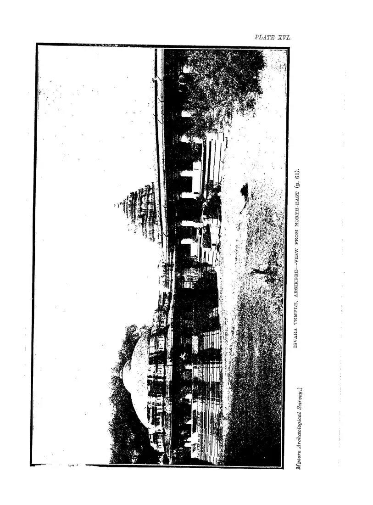
- ISVARA TEMPLE, ARSIKERE—VIEW FROM NORTH-EAST (p. 61)
41, 42. Madhusūdana with a lady to the left. Inscription ಮಧುಸೂದನ .
43, 44. Trivikrama with a lady attendant to the right. ತ್ರಿವಿಕ್ರಮ .
45, 46, 47, 48, 49. Vāmana (one of 24 forms) with a consort and a Garuḍa on each side. Inscription : ವಾಮನ .
50, 51. Śrīdhara with Lakshmī to the left. Inscription : ಶ್ರೀಧರ .
52, 53. Hṛishīkeśa with Lakshmī to the right. Inscription : ರಿಪಿಕೇಸ .
54, 55, 56, 57, 58. Padmanābha with a consort and Garuḍa on each side. Name not inscribed.
59, 60. Dāmôdara with a lady attendant to the left. Inscription : ದಾವೋದರ .
61, 62. Saṅkarshaṇa with a lady attendant to the right. Inscription : ಶಂಕರುಷಣ .
63, 64, 65, 66, 67. Vāsudêva with a consort and a Garuḍa on each side. No inscription.
68, 69. Pradyumna with a lady to the left. Inscription : ಪ್ರದ್ಯುಮ್ನ .
70, 71. Aniruddha with a consort to the right. Inscription : ಅನಿರುದ್ಧ .
72, 73, 74, 75, 76. Purushôttama with a consort and a Garuḍa on each side. Inscription : ಪುರುಷೋತ್ತಮ .
77, 78. Adhôkshaja with a lady to the left. Inscription : ಅಧೋಕ್ಷಜ .
79, 80. Narasinnha with a lady to the right. Inscription : ನಾರಸಿಂಹ .
81, 82, 83, 84, 85. Achyuta with a consort and a Garuḍa on each side. Inscription : ಅಚ್ಯುತ .
86, 87. Janârdana with a lady to the left. Inscription : ಜನಾರ್ದನ .
88, 89, 90. Upêndra with a lady attendant on each side. Inscription : ಉಷೇಂದ್ರ .
91, 92, 93. Hari with a consort and a Garuḍa to the left. Inscription : ಹರಿ .
94, 95. Kṛishna with a Garuḍa to the left. Inscription : ಕೃಷ್ಣ .
96, 97, 98. Pârvatî and Śiva with a devotee in the middle.
99, 100. God standing with consort to the right.
101, 102. Sarasvatî standing (rosary, broken, sugarcane (?), pustaka) with a lady attendant.
103, 104. God standing (goad and pâśa) with an attendant to the right.
105, 106. North niche with a male attendant on each side.
107, 108. Goddess standing (abhaya, goad (?), pâśa, phala) with a lady attendant to the left.
109, 110. Goddess (aṅkuśa, pâśa, two arms broken). Male attendant to the right.
111, 112. Goddess standing in 'tribbanga' with a male attendant to the left.
113. God standing (broken, goad, pâśa (?), phala).
114, 115. Śiva standing holding trident and cobra. Other two hands broken. Male devotee to the right.
116, 117. Śiva standing. Trident visible. Other symbols broken. Devotee to the right.
118. Kêśava.
119, 120. Lakshmi standing (abhaya, śaṅkha, śaṅkha, padma). Lady attendant to the right.
The row of eaves which projects about a foot from the main building is finely made with the imitation of rafters on the under surface and beaded hangings on the edge.
Above the eaves is the parapet formed of a series of turrets bearing a cornice of makara faces and a row of kirtimukhas on the śikharas.
The tower (Plate XV) which is on the whole shaped like a sixteen-pointed star has each alternate point flat with an intervening angular projection; that is, a flat projection flanked on one side like a right-angled projection and on the other by a star-shaped one. Thus considerable variety of detail is introduced. The tower is composed of five tiers of turrets rising one above the other, the figure sculptures being comparatively less prominent. A star-shaped śikhara with a stone kalaśa surmounts the top. The eastern projection of the tower has now an ugly stucco bull in place of the original Sala group, while its front panel has the usual Tāṇdavēśvara group.
Mantapa.
(a) Basement. —The basement of the manṭapa is similar to that of the main temple and is characterised by its comparative plainness and projecting broad-based bottom. Near the top of the basement is a row of Yakshas seated under turreted conopies. The slanting railing above the turrets is plain except at the north-western corner.
(b) Eaves and Roof. —The eaves of the manṭapa which are less ornate than those of the main temple and are wider appear originally to have had a stone parapet wall above them. This is now substituted by a row of rough masonry turrets, above which rises the beautiful dome. The latter has a large vaulted lower part with the central dome rising higher up above it. The outline is very pleasing.
(c) Inner View. —The manṭapa is planned like a sixteen-pointed star and is a large structure with a diameter of about 25'. In the centre is a large low circular stone platform around which is an octagonal low terrace with a bell-shaped pillar at each corner. Behind these is a stone bench, star-shaped, with a row of 24 fine elephants forming pairs and facing each other. The trunks of most of these have now been broken, but their elegantly shaped heads, bodies and limbs are admirable. Behind the stone bench is the slanting railing.
(d) Pillars. —The outer row of 13 pillars is made up of lathe-turned pieces with cylindrical shafts and wheel-shaped neck mouldings. But the eight inner pillars which are of the bell-shaped round Hoysala type are finely ornamented with beaded hangings and scroll designs.
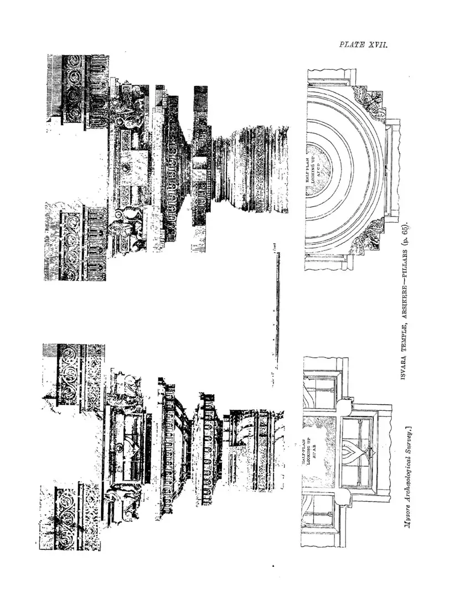
- ISYARA TEMPLE, ARSIKERE—PILLARS (p. 65)
Cited in the text: p. 65 ↩
(e) Beams. —The beams above the inner set of pillars form an octagon, on the inner face of each side of which are carved seven interesting images making in all 56 images. Some of the central figures are Nañdísvara, Kubèra, Îsâna, Narasimha. On either side of these figures on each beam are three standing images among which can be recognised the varied forms of Vishnu, Śiva and Dêvti.
Above the beams is a gallery of lions with a turreted niche between each pair of them. Only one of these, viz. , that on the north, has a figure of seated Durgâ with sword and bowl in her hands.
(f) Dome. —Above the row of turrets rises the dome. Each outer angle of the dome is formed by one slab whose inner surface is scooped out into a large obtuse angle with rafters and pendants, while the outer surface is smooth and rounded. The upper portion of the dome is formed by quite another set of slabs, while from their midst is a large heavy stone lotus pendant which hangs down and is more than 3\frac{1}{2} ' long. The effect produced is more like that of a metallic dome than anything of stone and the design which consists of three concentric octagons connected by ribs is comparatively plain.
Between the manṭapa and the navaraṅga entrance is a small porch supported
Porch. on four ornate bell-shaped pillars.
The ceiling of the porch has two sculptured friezes, the lower one containing the eight Dikpâlakas and their consorts seated in state with their symbols, their attendants standing to the left. The upper one has groups of dancers and musicians. The flat ceiling has Tâṇdavêsvara in the centre surrounded by nine musicians.
The navaraṅga which is now provided with a doorway was originally open unlike in most other temples. It is a small hall about
Navaranga. 20' \times 20' with 9 squares. Its walls on the three sides contain a fine towered niche for each ankapa. These niches originally contained images which have all disappeared. (See Plates XVIII and XIX).
(a) Pillars. —The outer pillars of the navaraṅga are indented-square shaped and the four inner ones are of the polished bell-shaped kind. On low bases ornamented with Yakshas rise the lower cubical mouldings which contain under toraṇas interesting images of Vishnu, Śiva and Śakti. The shafts are ornamented with floral and creeper scrolls and beaded work, while the capitals are supported by lions at the corners (Plate XVII).
(b) Ceilings. —1. The central ceiling rises on four beams which contain standing images of gods in this order—West: the Eleven Rudras; East: the twelve Âdityas; North and South: the twenty-four forms of Vishnu.
9
The gallery has eight niches with seated Yakshas and the dome is a miniature of the mantapa dome. The other domes commencing from the east clockwise are thus designed :
2. Concentric circles. 6. Concentric squares.
3. Concentric squares. 7. Three concentric squares.
4. Concentric circles. 8. Concentric squares.
5. Concentric circles.
In the navaraṅga is now kept a relievo image of Mahishâsuramardinî, perhaps of the 14th century, and in the navaraṅga and the sukhanâsi are two Nandis of Vijayanagar workmanship.
The sukhanâsi which is open on the east has an interesting ceiling with two Sukhanasi. friezes of sculptures :
1. Lower frieze : East and North-East : an old Rîshi, perhaps Dûrvâsa or Vyâsa explaining to a Royal family, perhaps the Pândavas, a text read from a book placed on a book-stand ; while Krîshṇa pays them a visit.
South and South-West .... Lady dancing with musicians.
West .... Drôṇa teaching the Pândavas (?)
North-West .... Pândavas and Kauravas at dice.
North .... Bhîma pulling out Duśśâśana's intestines with which Draupadî dresses her hair.
North-East .... An anthropoid leader of a herd of deer fights a man and then performs hôma.
2. The second frieze .... East : Śamudramathana or churning of the milky ocean with the gods drinking nectar.
„ South : Śiva dancing.
„ West : Śiva standing with following.
„ North : God seated holding vajrâyudha and phala.
The flat ceiling above has Tândaveśvara in the middle surrounded by the eight Dikpâlakas.
The garbhagrîha doorway is beautifully carved. Each jamb has a dvârapâla below, with vertical bands of flowers, creeper scrolls, intervening pilasters and lions—all deeply carved. The lintel has a Gajalakshmt with a damaged head. Above the cornice stands Śiva with Ganeśa and Brahma to his right and Shaṇmukha and Vishṇu to his left.
Garbhagrîha.
The garbhagrîha ceiling has a low dome well sculptured with a frieze of Dikpâlas and another of musicians, while on top Śiva dances surrounded by Vidyâdhara musicians.
The garbhagrîha ceiling has a low dome well sculptured with a frieze of Dikpâlas and another of musicians, while on top Śiva dances surrounded by Vidyâdhara musicians.
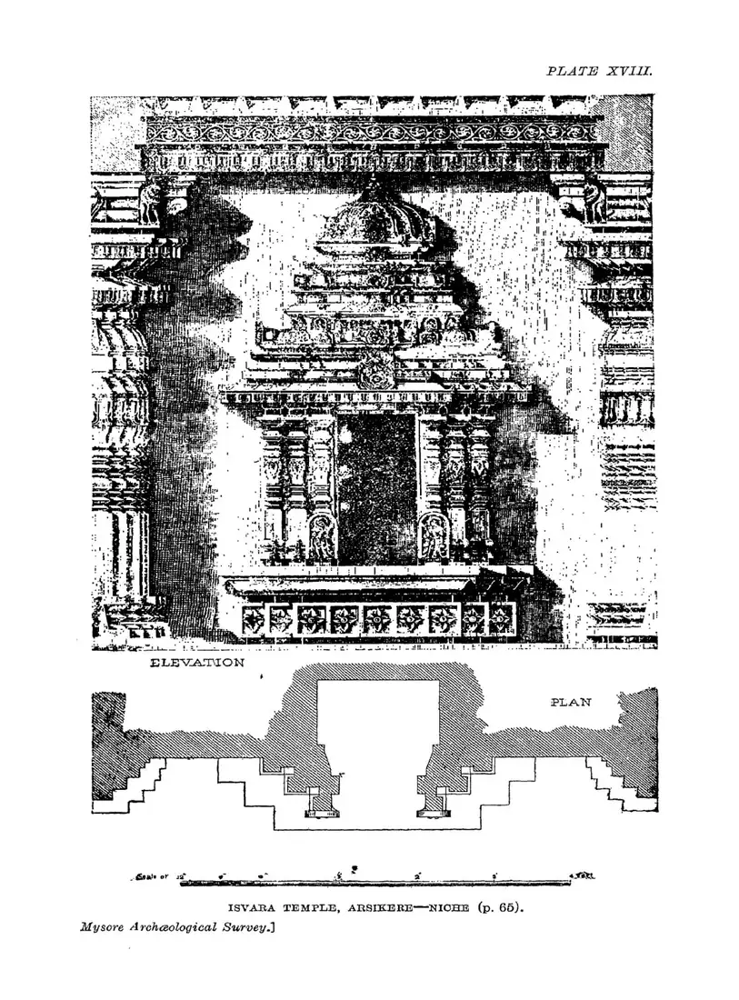
- ELEVATION Scale of 15' ISVARA TEMPLE, ARSIKERE—NICHE (p. 65)
Cited in the text: p. 65 ↩
Double Temple on the North
No heading in the body: this section starts at its printed page (67).
The linga is a comparatively small one, being about 2' high from the ground.
The double-temple on the north appears to have been constructed about the year śaka 1141 (1219 A. D.). This building has two garbhagrīhas whose sukhanāsis open into a large manṭapa.
The Double-Temple on the North.
The latter is really made up of two ranga manṭapas each of 9 anikapas, between which is a covered space forming the whole into one large pavilion. At the west end of the corridor is a small niche which has now no image. The whole structure is plain except for the two garbhagrīha doorways which are moderately ornamented and bear on each jamb a dvārapāla with a female chamara bearer on the outer side and a Manmatha (?) holding a sugar-cane staff on the inner side. The back wall of the building is much damaged.
Part III: Numismatics
SOME VIJAYANAGARA COINS
(PLATE XX—1).
Krishþadévaráya
No heading in the body: this section starts at its printed page (68-76).
KRISHNADÊVARÁYA, 1509-1530.
Venkatéša
No heading in the body: this section starts at its printed page (68).
Type A :— Venkatesa.
Ai (gold.) '75 inch ; wt. 117 grains ; Veňkatěša Medal. 2
Obverse :—God Veňkatěša standing to front wearing tall kiríťa and the usual upper and lower cloth and ornaments. He has four arms and holds in the right back hand the discus and in the left back hand a conch. The right front hand is in the dâna-mudrâ or attitude of bestował (of salvation or other boons) and the left front hand rests on his hip and points to his feet (popularly explained as the refuge for devotees). Above the image is an ornamental tôrana or arch with a lion face at the keystone supported by two makaras or acquatic animals. The arch is borne by two ornamented star-shaped pillars, the lower parts of which are covered by plants. Below is a lotus supporting the ground on which the god stands.
Reverse—In double lined circle three line Nâgari legend with intervening rules :
Srí
Kṛ shṇa Râ ya
This specimen is very probably one of the thirty thousand coins in which God Veňkatěša of Tirupati is said to have been bathed by Krishṇarâya on the latter's victorious return from his conquest of Koṇđavíđu and Orissa about 1516 A.D. 3 It is doubtful whether it is an ordinary coin at all as it weighs about two and a quarter varâhas. It may more probably be a commemorative medal meant to be two and a half pagodas, minted for the occasion and distributed among Brahmans and charities. The later Veňkatěšvara type of Veňkaťapati Râya and others appears to have had this as a model. The coin is finely made and shows that the
1 Among the coins examined during the year, a large number were the issues of the Tuluva Rulers of Vijayanagar. The coins of two of the rulers which occur so commonly in South India are here described.
2 Elliot: Coins of Southern India (E. C. S. I.), No. 112.
3 Archæological Survey of India (A. S. I.); Ann. Rept. 1908–9. p. 176.
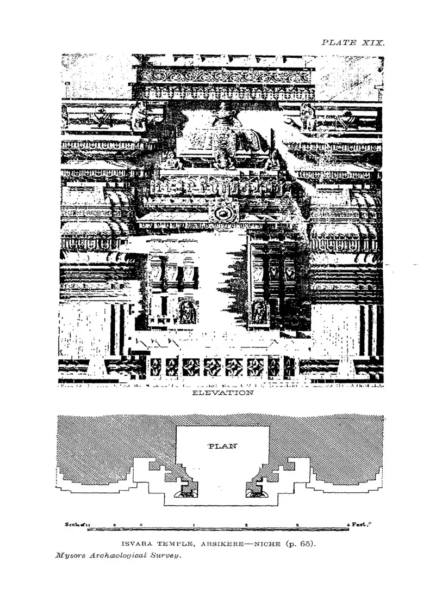
- ELEVATION Scale: 0 1 2 3 4 Feet ISVARA TEMPLE, ARSIKERE—NICHE (p. 65)
standard of the art of the die-cutter at that time was high, though some other types indicate that coinage was not considered worthy of the attention of the great artists.
Umámahésvara
No heading in the body: this section starts at its printed page (69).
The reverse of the coin does not offer any special problem. The second letter is often “Kra” instead of the correct form ‘Kr.’ Hultzsch 1 thinks that the attribution to Krishṇarāya of coins without the title ‘Pratāpa’ is doubtful. There is also a varāha of the Bâlakrishna type with merely ‘Srī Krishṇa Râya’ on it. The deities and the name Krishṇa Râya, especially the form ‘Râya’ instead of ‘Râja,’ and the fact that Dêva Râya also issued coins with and without the title ‘Pratāpa,’ dispel the doubt about the coins being those of Krishṇarāya of Vijayanagar.
The pose of the right hand requires notice. On the coin in the British Museum, it is not clear whether it is in the dâna-mudrâ or in the abhaya-mudrâ. On the reproduction by Elliot, it is in the abhaya-mudra, which is correctly the pose of the original Venkaṭêsa of Tirupati 2 . The flatness of the feet shows that the artist cared more for ornamentation and conventional representation of the figure than for making a study of living objects.
The real character of Venkaṭêsa is a matter of great interest since he has been perhaps the most popular of the Vaishṇava gods of South India from about the sixteenth century A.D. The jaṭâ-makuṭa and the cobra across the shoulders, which are said to be present in the original Tirupati image are definitely Śaiva features while the figure of Lakshmî engraved on the chest is clearly Vaishṇava. The Tirupati image has no conch or discus in stone and there appears to have been some reason for the Śaiva opponents of Śrī Râmânujâchârya to have claimed it as Śiva. But about 1110 A.D. or earlier, even during the life time of this teacher, the Chôłas carved the figure of Venkaṭêsa at the back of the temple of Mukti-nâthêsvara at Binnamangala in the Bangalore District. The figure has jaṭâ-makuṭa and phâlâksha or the third eye and holds discus and conch in stone. Since it stands between Śiva and Brahma, it is certainly Vishṇu among the Trimûrtis. Thus Râmânujâchârya was justified in claiming Venkaṭêsa as Vishṇu. At the same time, the jaṭâ and the third eye give it a Śaiva leaning.
Type B:— Umamahesvara.
2. Ai. Varâha.
Obverse:—Śiva and Pârvatî as on Harihara I’s Varâha 3 but the figures ruder, and trident in the right hand of Śiva.
Reverse:—Three-line Nâgari legend as on Type A.
1 Ind. Ant., Vol. XX, p. 305
3 Ind. Ant., Vol. XX., p. 305.
Bálakrishþa
No heading in the body: this section starts at its printed page (70).
Hultzsch describes this type, a specimen of which appears to be in the Madras Museum. The British Museum and the Mysore Government Museum have none. The fact that the Umâmahêsvara type was continued by Krishṇarâya, a Vaishṇava king, throws much light on the catholic nature of the king's religion. Though himself a devotee of Vishṇu, Krishṇarâya worshipped all deities just like the present-day kings of Mysore. The State adopted a more extreme form of Vaishṇavism three generations later.
Type C (a) :— Balakrishna.
3. Ai. '5 Varâha, wt. '51. 'Durgî' Varâha. 1
Obverse :—The divine baby Bâlakrishna seated on seat, with one knee bent and resting on seat and the other raised up and supporting the left arm which is stretched out at ease. The right hand holds a lump of butter. The child wears large ear-rings, a girdle of gingles, gingled or beaded bracelets, armlets and anklets on his fat little body and limbs; and on his head is a crown of peacock feathers with a string of flowers above. In field to right a conch, to left a discus. On some specimens, the child wears a kind of tight fitting dress which bulges out at the shoulders, elbows and knees, like the plate armour dress of the Middle Ages.
Reverse :—Three-line Nâgari legend with interlinear rules :—
Śrî Pra tâ pa kra shṇa Râ ya
4. Ai '5 Varâha. Wt. '51
Obverse :—Similar to 3 but ruder; the conch and discus are less prominent and the figure is more conventionalised, the chest being divided into two breasts, and the waist not separately indicated.
Reverse :—Similar to 3 but with 'Srî Krishṇa.'
5. Ai. 55 Varâha. Wt. '51.
Obverse :—Similar to 4 but without conch and discus; and the figure is represented conventionally by dots and pellets. Often, the obverse surface is minutely granulated and there is a semicircle of dots at the top.
Reverse :—Similar to 4 but the characters are large. Sometimes, there are two dots in various positions near 'pa.'
6. Ai '5 Varâha.
A rude forgery of No. 4 in a baser metal.
Type C (b).
7. Ai Varâha.
Similar to the above but legend reads only Śrī Kṛishnā Rāya. The specimen is in the Mysore collection.
Type C (c).
8. Ai '4 Half Varâha wt. 25'7.
Obverse:—Similar to 3 but the figure is more elaborately ornamented. The child sits with both thighs resting on seat and wears shoulder ornaments, necklace and sacred thread. The hair falls in curls around the head and there is a creeper in place of the string of flowers. The conch and discus are large.
Reverse:—Similar to 4.
On this specimen, the figure is elaborately worked and ornamented. It shows better technique than 3, though the figure of the child is more like a grown up person and less pleasing in spite of its curly hair and better proportions of the limbs.
9.
Obverse:—Similar to 3 with smaller conch and discus, a ball of butter in each hand and two-arched lines representing hair and crown.
10.
Obverse:—Similar to 3 and figure almost like it but for two convergent lines which indicate a crown on the head.
Reverse:—Similar to 3 but 'ka' instead of 'Kra.'
11. Ai '35 Half Varâha corresponding to Varâha No. 3.
Very similar to No. 3 with the same pleasing figure of a fat little baby and a string of flowers (or hair?).
12. Half Varâha corresponding to Varâha 4 but more like 3.
Obverse:—Similar to 11 but with breasts parted as on 4 and smaller conch and discus.
Reverse:—Similar to 4.
13. Ai '4
Obverse:—Similar to 11 and 12 but figure ruder and conch and discus conventional.
Reverse:—Similar to 3; legend occupies very small space.
14. Ai Poorer metal. Half Varâha.
Similar to 5. Half Varâha corresponding to the rude Varâha type 5.
15. Ai '45 Half Varâha Wt. 26.5.
Similar to 9 but Obverse fainter. Some of these specimens come from Bassein, Akola District, Central Provinces.
Durgí Varaha
Imitations; Akola Finds
No heading in the body: this section starts at its printed page (72).
Type C ( d ).
16. Ai. Quarter Varâha.
A quarter varâha of the Bâlakîrishnâ type is described by Marsden. 1
The type which is here designated as the 'Bâlakîrishnâ type' is very common and is known as the 'Durgi' Varâha and is by some people associated with the figure of Durgâ and the legend of Krishnâ Râya 2 . According to Elliot, it was issued by the local chiefs who arose from the ruins of the Vijayanagar Empire. Bidie says that they were called Durgâ Varâhas probably because they come from Chitradurga 3 , and he identifies the figure as a boar. 4 Thomas gives a correct reading of the legend but describes the figure as Durgâ 5 and attributes the coin to one of the Pâlegars of the ceded districts. Elliot suggests that the type known as Lakshmi Mada to the Sarâfs has some connection with the series of Krishnâ coins of Chikkadêvarâya of Mysore. Hultzsch attributes the type to Krishnâ Râya but describes the figure as Lakshmi. 6 Heras identifies it as the figure of 'Vyâsarâya' 7 while Srinivasa Raghava Iyengar of the Madras Museum says that it is the figure of 'Durgâ.' 8
A careful study of a large number of coins of this type strongly suggests the fact that the figure on the obverse is that of Bâlakîrishnâ. The type was originally issued by Krishnârâya, Emperor of Vijayanagar, as proved by the legend. When the empire declined, it is highly probable that various local chiefs, like those of Chitradurga, reissued the type for which reason it may have become known as the 'Durgâ' type more than because there was any figure of Durgâ on it.
It is possible to classify this type into three groups:—
(1) Those on which the figure is fine; the conch and discus are large and clear and the metal is of the good quality common to the Vijayanagar series. These may be attributed to Krishnârâya himself.
(2) Specimens whereon the conch and discus are small and conventionalised. The figure is ruder and the legend, which is neat, reads 'Krishnâ.' These issues are probably those of the chiefs of Chitradurga and Rayadurga and other up-country pâlegars.
1 Numismata Orientalia: Part II.
6 Ind. Ant. XX p. 306.
3 Bidie J. A. S. B. 1883, p. 44.
7 Jour. of Ind. Hist. VII, pp. 34-35 (1 Pl.)
8 Jour. of the Andhra Hist. Res. Society.
(3) There are many rude large specimens on which the string of flowers assumes the form of a semicircle of large disconnected dots, the breasts and belly being represented by circular pellets suggesting feminine characteristics. The obverse is very often minutely granulated and the legend on the reverse is fragmentary and in large characters reading 'Kṛishṇa.' Sometimes there are two meaningless dots in different positions near 'pa.' These are possibly the issues of the local dynasties ruling near Chandragiri and to its north, as they appear to be connected with the later granulated issues of the 'Carnatic.' Coins of this third variety have, generally, a great deal of alloy and indicate that they are the issues of impecunious and not very conscientious rulers.
The original issues of Kṛishṇa Râya like the 'Lakshmî Mada' show elegant design and the art is not of a very low order. The general opinion against the type is due to the imitations and forgeries being more prolific than the genuine issues of the Emperor. Some of the coins, specially those coming from Bassein, show one or both sides only in very low relief and the fissures on the edges and the centrifugal lines on the surfaces indicate that the imitators and forgerers did not have a good knowledge of the technique of die-cutting and striking, particularly heating the metal to the right temperature and perhaps using the right material for making the dies.
Of the Bâlakṛishṇa type half Varâhas, some are smaller in diameter (which is about '35 or less than '4) and thicker and show only a part of the legend on the reverse. These can be safely attributed to the Emperor. The other varieties are wider ('45 and even '5) and thinner, contain more of alloy and some of them show very inferior workmanship. These would be later imitations. No. 14 appears to come from the same area as Varâha No. 9 perhaps from around Chandragiri and Vellore. No. 15 is a northern imitation. Many of such specimens, some in the British Museum and some in the Mysore Museum, come from Bassein in the Akola district of the Central Provinces. This information about the provenance need not lead to the conclusion that Kṛishṇa Râya's direct sway extended even for a temporary period to Bassein, because coins of other rulers like Harihara II also come from the same area and show the same characteristics. Many of these specimens show that one of the dies or both might have been shallow, giving a rather low relief to the figures. The good metal they contain does not support the view that they were only forgeries. It is possible that they were the issues of some regular mint situated in the north and acknowledging the leadership of Vijayanagar. About this time, there was the small Hindu state of Kherla in this locality which had the Bahamani and Shahi Kingdoms as its enemies just as Vijayanagar had. 1 In all probability this state acknowledged the
1 Imperial Gazetteer Vol. II, P. 383.
10 leadership of Vijayanagar and played an important part in its foreign affairs. This appears to be a suitable explanation for the Akola finds, which range form Hari-hara II to Achyutarâya.
Bull
No heading in the body: this section starts at its printed page (74).
The existence of forgeries in baser metals is also a point of considerable interest. It is probably the rudeness of the imitations and forgeries and the name 'Durgâ Varâha' which perhaps led to the identification of the obverse effigy with Durgâ or the Boar incarnation. There cannot be much doubt that the figure on some of the best made coins is that of Bâlakrishna. An image of this deity was brought by Krishna Râya from Udayagiri and installed at Krishnâpura in Vijayanagar in the year 1514-15 A. D. It was subsequently destroyed, perhaps by the Moslem iconoclasts, so that, to-day, in the great tottering ruined temple at Hampi, no image remains and there is only a figure of the Mount Garuda on the pedestal to indicate that Krishna stood above it. To Krishna Râya, who was a devotee of Vishnu, the figure of Krishna had a great appeal, one special reason being perhaps that he bore that very god's name. Thus it would appear that Krishna Râya was minting only the Umâmahêsvara type during the first five years of his reign and after the installation of Bâlakrishna in the new temple he probably made it his 'Ishṭadêvata' or chosen deity, and put the effigy of that god on his gold coins. It must, however, be confessed that on the ruder specimens the figure has a distinctly feminine form.
The image of Krishna was revived by some later dynasties. Muralidhara or Krishna with the flute appears on late Vijayanagar coins; Kâlingamardana, the snake killer, on the issues of Chikkadêvarâja of Mysore; and Krishna with the butter re-appears on the coins of Krishnarâja III of Mysore as the Navanitanritta Mûrti in the dancing posture.
Type D.—Bull.
(a) COPPER 'JITAL'
17. Ae '6
Obverse:—In circle of dots, fine bull standing to left with ornamented covering cloth on its back secured by girdle or girthbelt. Folds of fat show on its neck and a gingle on its throat. Sun and Moon in field above.
Reverse:—In the middle a conventionalised sword looking almost like an arrow flanked by discus and conch, with two line Kannada legend above and below
Śrī Krī shna
Râ ya
18. Similar to 17. but ruder bull to right.
(b) HALF JITAL.
19. Ae Smaller.
Similar to 17 but of half value.
Krishna Râya's bull type is similar to Dêva Râya I's bull type and shows that the bull and sword type which persisted in Vijayanagar for
Bull and Garuđa
nearly a century and a half is the most important copper type of Vijayanagar. It was probably revived by the Tuļuva dynasty and continued down to 1514 A. D. when, as stated above, the emperor became a pronounced devotee of Vishnu owing to his success in his great campaign and also perhaps due to the influence of his guru Tôlappałáchárya whose descendants even to-day own the village of Krishnâpûr situated amidst the ruins of the old city. When on gold coins Krishna took the place of Umâmahêsvara, on the copper issues Šiva's mount, the bull, gave place to Vishnu's mount Garuđa. This change is only indicative of the personal devotion of the emperor, for there is clear evidence in epigraphy to show that the state continued to patronise the worship of other deities also. As a declared adherent of the Šrívaishnava faith and under the influence of his advisers of that sect, the emperor perhaps found it necessary to substitute Vishnu for Umâmahêsvara, the patron deity of the Empire in its earlier days.
Garuđa
No heading in the body: this section starts at its printed page (75).
Type E.— Garuda.
(a) COPPER TAR.
20. Ae '8 Unusually large, thick and heavy.
Obverse:—In circle of closely lined dots, anthropoid white-headed kite or Garuđa to left with beaked face wearing tall kirîta or crown with two fillets, hands joined on breast in the attitude of devotion. He kneels on his left knee with the right foot on the ground in the vtrâsana or heroic posture. Small wings are spread out behind the arms and the fillets and waist cloth are flying in the air.
Reverse:—Three line Nâgari legend in large characters with interlinear rules:—
Šrí pra tâ pa ka shṇa
Râ ya
(b) COPPER 'JITAL '
21. Ae '6 Smaller coin of the usual size.
Obverse:—Similar to No. 20 with linear circle.
Reverse:—Similar to No. 20, letters proportionately smaller. On some specimens the circle is absent and the legend is fragmentary.
22. Similar to 21, but with conch and discus on obverse in field near head.
23. Similar to 22, but figure ruder and represented by a large number of dots. No border. Perhaps the issue of a local or southern mint showing poor art. The dotted figure which appears also on later local Madura coins suggests that No. 23 came from the same place.
The large and thick Garuđa variety appears to be a substitute for the silver 'Tar' which was perhaps given up for want of the supply of that metal. It is followed by similar issues of Achuta Râya, Venikațapati Râya and the Madura Nâyaks, has large legend in Nâgari characters on the reverse and shows that Şivaji's Chatrapati type follows the model of Vijayanagar. The figure of Garuđa is fairly good, though some of the lines are too straight and the waist is small to exaggeration.
The effigy of Garuđa appears in various forms on the coins of the Guptas, the crest of the Yâdavas, the coins the Silaharas, the Pânđyas and the Kâlachurya Sivabhața. Krishnârâya's Garuđa which kneels clearly and wears a crown is more likely to have been copied from the later Pânđya types of Madura than from any others.
Rangachari and Desikachari 1 ascribe a Recumbent Bull type to Krishnâ Râya, and they read the middle line on the reverse of the coin
Recumbent Bull
24. Half Jital.
Part III: Numismatics › SOME VIJAYANAGARA COINSAchyutaráya
Type A : Ganđabhérunđa
(a) GOLD VARÂHA.
25. Ai '45 Varâha Wt. 52.
Obverse:—Back view of Gandabhêrunđa or double-headed eagle flying upward wearing ornaments. The wings and feathers are ornamented and the head has a crest. The huge bird is flying upward carrying in each of its two beaks and two claws a full grown tusker elephant, evidently for feeding upon. The bird wears necklets and rings on its necks and the elephants trumpet in desperate terror with uplifted tail and trunk.
1 Ind. Ant. XXIII, p. 24.
Type B : do
Ganđabhérunđa; Prancing Horse
No heading in the body: this section starts at its printed page (77).
Reverse :—Three line Nâgari legend with interlinear rules :—
Śri pra tâ pâ chyu ta râ ya
The standard of art is good.
26. Ai . 4 Varâha Wt. 52'7.
Obverse :—Similar to 25.
Reverse :—Indefinite Nâgari legend with 'pa' and 'ta' visible standing for Śrī Pratâpâchyuta Râya as on 25. But across them is a large boat-shaped pellet caused perhaps unintentionally by a depression in the die.
Two specimens of this kind exist in the British Museum and one of them which has faint figures is definitely stated to have come from the Akola district. The peculiarities of the Bassein Vijayanagar finds are noticed elsewhere.
(d) GOLD HALF VARÂHA.
27. Ai . 4 Wt. 26'4.
Half Varâha similar to No. 25.
28. Ai . 35 Wt. 26.
Similar to 27 but the impression is fainter on both faces.
The coin comes from the Akola District.
29. Ai . 4 Wt. 24'2 Under weight.
Obverse :—Similar to 25 with bird moving to left.
Reverse :—Similar to 25 with characters clear, especially 'chyu'
The die cutter of this coin was a good workman. But he observed convention more than propriety as his elephants had still their girth ropes and the bird flew in air without opening even its very short wings. The group is well executed but the artist has failed to visualise a flying bird. Some specimens show the bird and the elephants beautifully shaped. 1
B. Copper Coin.—Gandabherunda.
30. Ae . 7.
Obverse :—In linear circle, two-headed eagle similar to 25.
Reverse :—Worn three-line Nâgari legend of large size. Perhaps standing for 'Śrī Pratâpâchyuta Râya.' It is doubtful if the third letter from the end is 'shṇa.' If so, the Gandabhērunda type would begin with Kṛishṇa Râya.
31. Ae .5
Obverse :—In linear circle, rude Gaṇdabhêruṇda moving to left, with lifted tail and showing both wings and holding an elephant in each beak.
Reverse :—Similar to 29.
This rude variety offers a great contrast to the fine gold coins and it is difficult to believe that they came from the same metropolitan mint. There is a Gaṇdabhêruṇda type from Madura with the names of the Nâyaks on the reverse; and Ikkeri, which had the Gaṇdabhêruṇda crest, might also have imitated this type. At Bangalore there is one worn specimen with the bird on the obverse and the boar on the reverse. This coin belongs perhaps to the days of Tirumala Râya.
The double-headed eagle is a very ancient and well known symbol of royalty throughout the world. It might have taken its birth in Gandabherunda . the Indus valley of the Copper Age or in early Mesopotamnia along with the Sphinx and the Gryphon and spread westward to Europe and even Central America and south eastward to South India. Numerous Indian dynasties have had it as their crest or banner. It appears to have descended through the Châlukyas and the Hoysalas to the Vijayanagar kings from whom Madura and Ikkeri and, later on, Mysore inherited it. In contemporary India it is the banner and crest of the kings of Mysore.
The inferior artists unable to show its two heads and wings in any other posture have mostly depicted it as seen from above. But a well known sculptured representation is on a pillar at Belgami, an old Châlukya city in the Shimoga District where it is seen in a beautiful anthropoid form fighting a lion.
32. Elephant.
Obverse :—Elephant to left.
Reverse :—Śrī Pratâpâchyuta Râya.
Rangachari and Desikachari 1 describe and figure a Prancing Horse type and attribute it to Achyuta Râya, whose name they read on the Prancing Horse . The legend is different in character from the usual Vijayanagar legends and on the reproduction given by them only one letter is readable and it may be 'Pa' which would make it a part of Śrī Pratâpâchyuta Râya. There are about ten doubtful specimens in the British Museum and on the clearest of them the legend is 'Śrīpratâpâ Râ (or Sa) Râya. The coins themselves have more of the later Vijayanagar character and may be local issues of the days of Sadâsiva or Râma dêva, if not of Achyuta Râya. But Rangachari and Desikachari also describe another coin of the Prancing Horse type on which they read Uttama Râya. The latter appears to read Râja Râja, in which case the Prancing Horse type would reach back to the later Chôlas. The type needs further study.
1 Ind. Ant. XXIII, p. 24.
Part IV: Manuscripts
(a) Paradāra-Sōdara Rāmana Kathe
On page 47 of the report for the year 1929, it was proposed to gather further information about Kumāra Rāma from other manuscripts and publish it here. Since then, detailed information has been gathered from the manuscript in the Madras Oriental Library and published in the Quarterly Journal of the Mythic Society for January 1930 (Vol. XX. No. 3, page 201 ff.). This has rendered it unnecessary to publish a further note here.
(b) Hyder-Nāma (a Manuscript in Kannada)
(A manuscript in Kannađa)
Plate XX—2.
The sources for the history of Hyder Ali's reign are numerous and in various languages—English, French, Persian, etc. To them may now be added the 'Hyder-Nāma,' a Kannađa work by a contemporary writer. It runs over 103 numbered leaves (206 pages) of the old type of indigenous paper (See plate XX—2) and was obtained from Mr. Karpîk Lakshminarasiah, Ināmdar, Tumkur, who is descended from Nallappa, a well known officer of the Mysore Court in the days of Krishṇarāja Wođeyar III. His ancestors are said to have been in the service of Hyder Ali and Tippu Sultan and it is stated that his grand-father, also Nallappa by name, was Hyder's contemporary. Hence the present manuscript may be called the 'Nallappa Manuscript' for identification purposes. It appears to have been copied from some original from which also another copy appears to have been made and retained in the Mysore Palace. The latter contains the date of the work, which is not found in the manuscript now examined.
The date of the manuscript according to the version of the Hyder-Nāma found in the Palace Library is "Krōdhi samvatsara Ashādha śuddha Ěkádaśi, Tuesday." The mixture of Hindustani words is an indication that the manuscript was written during the period of strong Moslem influence.
Tha date of the Manuscript.
The manuscript also stops short at the death of Hyder without even alluding to any of the events of Tippu's reign except his accession. Besides, the author describes a host of minor details pertaining to the reign of Hyder Ali, thus proving that he must have been, very probably, a Hindu officer who was quite familiar with Hyder and intimately connected with his government. There can be no doubt about the abovementioned date which is verifiable and corresponds to Tuesday the 29th June 1784 A. D. Since Hyder died on 7th December 1782 A. D., the interval of eighteen months might have been taken for the preparation of his biography.
The work is a chronicle describing, as the author himself has said, the 'Durbâr' of Hyder Ali Khan Bahadur who ruled at Seringapatam.
Historical Importance
Though much of Hyder's history has already been known, the chief value of the manuscript consists in giving confirmatory evidence, while, here and there, some new materials are also supplied to the historian. The author writes with a healthy independence and a judicious frankness which could not be expected from a court chronicler. He admires Hyder and the way in which the usurper saved the independence of Mysore by his diplomacy and generalship and raised the kingdom to the position of the strongest contemporary power in South India, while at the same time he condemns the blemishes in his hero's character and points out his follies. Though he gives the Mysorean version of many events like Hyder's decisive victory at the battle of Arni, he frankly admits also his defeats on many occasions. Thus he is a true historian and not, in any sense, an apologist or eulogist. His work is welcome as a corrective to the existing accounts of Hyder's life which are to a considerable extent based on the records of his enemies or of his own Moslem secretaries.
A summary of the information supplied by the work is given below, important points of interest or divergence from known authorities being mentioned in the footnotes.
Ancestry of Hyder
The ancestors of Hyder were natives of Arabia, who had been serving under Bijapur 2 . After some time, some members of this family
Fateh Ali
1 Wilks bases his account of the ancestry of Hyder on a memoir at the tomb of Fatteh Mohammed in Kolar and states that he has checked it 'by a variety of records and oral information.' The account here is, however, fuller than that given in the Hyder Nâma.
2 Mohammed Bhelole was the first known person among Hyder's ancestors. He came with his two sons from the Punjab to the south and settled at Alund in 'Calburga.' Wilks' History of Mysore Vol. I. p. 149.
3 The two sons, after their marriage, proceeded to Sira direct at first and then came to Kolar after the birth of Hyder's father.— ibid .
4 The name given by Wilks is 'Derga Kooli Khan' who was attracted by Fatteh Mohammed while the latter was serving under a Nâyak during the siege of 'Ganje cottah.'— ibid . p. 150.
.which subsequently became his jahgir 1 . A brother of his by name Ghulam Hyder Saheb remained under Mallikarjuniah of Maddagiri and his uncle Ali Saheb was employed under the killedar of Doddaballapur 2 . But Fateh Ali did not remain long to see the improvement of the fortunes of his family, for he died soon after in a battle with the Poleyagar of Chitrakal 3 .
Rise of Hyder Ali
Mysore Service; Siege of Devanahalli; Carnatic Affairs; Trichinopoly; Tamil Polegars; Nayars of Calicut; Mahratta Levy; Hyder Indispensable; Hyder's Opportunity; Siege of Bangalore; 1758
The gradual stages in the rise of Hyder Ali to power are traced very well in this work. The death of his father only left him a Mysore Service. legacy of a debt of 10,000 varāhas 4 . The Navab of Sīra, who was the auditor, began to press for the repayment of the loan. Being unable to pay the loan, the two sons of Fateh Ali left the women and children as surety 5 for the amount and tried to get some help from their uncles. Through the help of their uncle at Maddagiri 6 they got the required amount from the Dalvoy Dēvaraja of Seringapatam 7 . In return for this both Hyder and his brother entered Mysore service 8 . After the death of Ghulam Hyder, his office was conferred upon Shah Saheb, the brother of Hyder Ali 9 .
Hyder Ali came to prominence for the first time during the siege of Dēvanahalli in Šaka 1668 (1746 A. D.) When Karāchūri Nañjarāj Urs Siege of Devanahalli. had come for the purpose of taking Dēvanahalli he instituted a tournament 10 in which Hyder alone was successful. And on account of his bravery during this siege he earned the favour of Karāchūri Nañjarāj Urs and was made the commander of 50 horse and 200 foot soldiers 11 .
1 There is no mention of Gummanahalli by Wilks. He states that 'Boodi cota' was given him as jahgir.— ibid. , p. 152.
2 These details are not given by Wilks.
3 He was buried in the Makbara at Kolar. See notes on Makbara under Kolar, Supra p. 21. Wilks gives a different account of his death; he states that he lost his life in a battle between Tahir Khan and Abdul Russool, his employer.— ibid.
4 The exact amount of the debt is not mentioned by Wilks; rather he states that it was a pretext for the Governor of Sira to get rid of Hyder's family and misappropriate Hyder's paternal property. For this ill treatment Hyder takes revenge 32 years later.— ibid. p. 153.
5 Wilks does not mention all this. According to him, Hyder was only seven years old then while the age of his elder brother was nine. Their mother accompanied them to Bangalore.— ibid.
6 According to Wilks it was at Bangalore that Hyder's maternal uncle resided as killedar of the place.— ibid.
7 Wilks does not mention this fact.
8 Hyder, at first, did not join any service according to Wilks. He is stated to have been at large, though occasionally he assisted his brother at his pleasure.— ibid.
9 Wilks is silent on this point.
10 This is not alluded to by Wilks.
11 A Similar account is given by Wilks; but he adds that Hyder was also placed in charge of one of the gates of that fortress and given orders to recruit and augment his corps.— ibid. p. 153-4.
11
The next opportunity for Hyder to distinguish himself was in the Carnatic.
Carnatic Affairs.
The chaotic condition of the Carnatic had drawn the attention of the Subhadar of the Dakhan, who, after capturing Trichinopoly, made over the country to the charge of Anwaruddin. But the place was contested by Chanda Saheb, a member of the old royal family. Hearing this, Nasir Jung, the Subhadar of the Dakhan, came with a large army to Arcot, at which Chanda Saheb fled to Pondicherry. But since it was the rainy season, Nasir Jung had to return to Hyderbad. Hyder, who had gone with his elder brother and Barakki Venkata Rao to help Nasir Jung took advantage of the civil war between Nasir Jung and his brothers and obtained fifteen camel-loads of Akbar shahi mohurs 1 .
Another opportunity offered itself to Hyder Ali when Chanda Saheb besieged Trichinopoly 2 . Mohamed Ali, the then Nawab of Arcot
Trichinopoly.
requested the Raja of Seringapatam to help him in raising the siege, in return for which he offered to hand over Trichinopoly to Seringapatam. So in Śaka 1673 (1751-2 A. D.) Karáchūri Nañjarāj went with 10,000 horse, 50,000 infantry and some guns to Trichinopoly to the help of Mohamed Ali. When Chanda Saheb was killed and the siege of Trichinopoly raised, Nañjarāj justly demanded that the fort of Trichinopoly should be handed over to him according to the terms of the treaty. But Mohamed Ali decieved Nañjarāj and refused to hand over the fort 3 . During the siege of Trichinopoly Hyder had played a very important part for which he was given the title of Bahādur 4 and asked to increase his forces. With considerable efforts he was able to form an army consisting of 2,000 horse, 4,000 armed peons, and 4,000 bar 5 .
In Śaka 1677 (1755-6 A.D.), Salabat Jung, the Subhadar of the Dakhan, invaded Mysore with the help of a French force under the command of Mons. Bussy. On account of this the army of Nañjarāj, which had gone to the help of Trichinopoly, had to return to Mysore. But since in the meantime the Raja had made peace with Salabat Jung by the payment of 56 lakhs of rupees 6 Hyder was sent to the
Tamil Polegars.
On account of this the army of Nañjarāj, which had gone to the help of Trichinopoly, had to return to Mysore. But since in the meantime the Raja had made peace with Salabat Jung by the payment of 56 lakhs of rupees 6 Hyder was sent to the
1 Wilks states that two camels laden with gold coins were taken away.— ibid. p. 167.
3 Wilks says that the revenues of Srirangam were given up, though formally, by Mohamed Ali. Later on the French occupied the place.— ibid. p. 214.
4 According to Wilks this title was bestowed when Hyder was virtually the master of half of the Kingdom and on the occasion of the defeat, by him, of the Mahrattas.— ibid. p. 230.
5 Wilks' number—1,500 horse, 3,000 regular infantry, 2,000 peons and 4 guns with their equipments. Of the horses 500 were his own— ibid. p. 217. When he marched against Dindigul he had 5,000 regular infantry, 2,500 horse, 2,000 peons and 6 guns.— ibid. p. 218.
6 But only one-third of the amount was paid. For the balance security was given and hostages were delivered; yet nothing was paid. Some of the hostages died in prison, some escaped and the rest were released after a time. A similar account is given by Wilks.
Dindigul area to conquer the Poleyagars 1 After defeating Amminâyaka, Appinâyaka and other Poleyagars of Palni, Virûpâksha, 2 Mille-Mirangi, he amassed wealth to the extent of 20 lakhs of rupees. Placing Khande Rao as his vakil at Seringapatam in order to get necessary orders from that quarter, he went on increasing his army and wealth.
In Śaka 1678 (1756 A. D.), due to some misunderstanding in connection with the treasury between the two Dalvoy brothers Dêvarâjiah Nayars of Calicut. left Seringapatam and remained at Satyamangala. At that time Hyder, his brother-in-law Syed Mukhadam and Dewan Venkata Rao were sent against the Nâyars of Calicut. After defeating the Nayars they made peace with them on the understanding that the Nayars should pay a tribute of Rs. 12 lakhs. 3 But the Nayars secretly negotiated with Dêvaraj-iah and promised to pay him the stipulated tribute of Rs. 12 lakhs instead of to Hyder in case he would withdraw the army of Hyder from Calicut. When Dêvarâjiah asked Hyder to come back, the latter refused to do so unless he was paid Rs. 3 lakhs towards the expenses of his army. This Dêvarâjiah did and after withdrawing the army sent Hari Singh 4 to collect the amount of the tribute.
The same year the Mahrattas invaded Mysore with a large army of one lakh of horse and one lakh of infantry. The Raja of Seringapatam made peace with them by promising the payment of a fixed sum of Rs. 32 lakhs. Since there was not enough money in the treasury, only six lakhs of rupees were paid 5 and thirteen Taluks 6 were handed over to the charge of the Mahrattas till the remaining amount was also paid up. The Mahrattas then returned to Poona after placing Raghoba, Bâji Rao and a body of 6,000 horse in charge of the thirteen Taluks. 7
1 This, according to Wilks, was the epoch when Hyder's ambition began to unfold. The designation of his new appointment was 'Foujedar of Dindigul.'— ibid. p. 218.
2 Mentioned as 'Veerapatchy' by Wilks. But Mille-Mirangi is not mentioned by him, nor the amount of wealth amassed by him in this connection. The names of the Poleyagars, too, are not mentioned. He states, however, that Hyder practised many deceptions on these people.— ibid. p. 218.
3 Wilks states that this amount was to be paid by instalments.
4 The rivalry between Hari Singh and Hyder is alluded to by Wilks on several occasions.
5 Wilks states that of the stipulated amount, only five lakhs was paid in cash.
6 The following were the thirteen taluks handed over to the Mahrattas: Nagamangala, Kadaba, Banavara, Channarayapatna, Kikkeri, Haranahalli, Kadur, Turuvekere, Belur, Chickanayakanahalli, Honnavalli, Huliyurdurga and Kandikere. To this list of 13 taluks Wilks adds 'Culloor'— ibid. page 222 foot-note.
7 Before long Hyder came and remonstrated with Nañjarâj advising him to expel them on the approach of the rains and withhold payment of the balance.— ibid. p. 222.
Hereafter a series of events happened which gave Hyder numerous opportunities to distinguish himself and come to the forefront 1 .
Hyder Indispensable. The treasury was empty and the government weak, so that it required the strength of a man like Hyder to preserve order in the country. It now became absolutely impossible to rule without his help and for every little business Hyder's help was requisitioned. Thus his prominence in the State increased very much until at last he set aside the nominal ruler and himself became the Navab.
Now, trouble was at hand on all sides. Since the treasury had become empty on account of the havoc committed by the Mahrattas, the Hyder's opportunity. siege of Trichinopoly etc., the soldiers could not be paid their salary. The result was that they sat Dhārna at the houses of the Raja and Dalvoy Nañjarāja Urs. Hyder was therefore requested to put down the rebellion of the army. Now was his opportunity to make himself the most prominent person in the kingdom. He undertook the work, though with seeming reluctance, and accomplished it by the use of politeness in the case of some and force in the case of others. Money was collected from various sources. Even Hari Singh was put to death and his wealth siezed. A jahgir of ten taluks 2 worth three lakhs of varāhas was conferred on Karāchūri Nañjarāj 3 and Khande Rao was appointed as the Dewan.
In Śaka 1680 (1758-A. D.), the Mahratta leader Mukunda Rao began to plunder Bangalore and created considerable trouble. Siege of Bangalore, 1758. Barakki Srinivasa Rao was sent by the Mysore Raja against him. Remaining at Bangalore, Srinivasa Rao in return began to plunder Hoskote, which was the Mahratta stronghold. 4 Now therefore Mukunda Rao appealed to the Mahratta leaders Mirchi Gopal Hari and Mallār Rao Rasta who were touring in Arcot and Mysore provinces to collect the chauth. With the help of their large army consisting of 40,000 horse, they besieged Bangalore, Maddur and Chennapatna. After some time, when the food stuffs in the fort of Bangalore were exhausted, Barakki Srinivasa Rao wrote to the Raja and to his father for help. But none of the sirdars would
1 On the English and the French being again at open war, the latter and Maphuz Khan, the younger brother of Mohammed Ali, indented on Hyder's aid in the matter of expelling the English. But Hyder, who was filled with selfish motives, captured 'Sholavander' and seized the cattle and moveables of Madura, though near this place he sustained a heavy defeat at the hands of Mohammed Issoof, the Commandant of the English Sepoys.— ibid. p. 223 ff.
2 The following were the ten taluks granted as Jahgir to Karāchūri Nañjarāj:—Namakallu, Paramati, Syadamangala, Bettadapura, Arkalgud, Konanur, Anantagiri, Mysore, Kattemalalavadi and Periapatna.
3 Wilks says that Nanjarāj was retired from service henceforward.
4 Wilks does not mention Srenivasa Rao's part though, in other particulars, he gives the same account undertake this difficult task of supplying provisions to Bangalore. The last resort was, therefore, Hyder and Barakki Venkata Rao requested him to save his son from this situation. Accepting this task Hyder went with his army and was able to defeat the Mahrattas completely in the battle near Channapatna. So they made peace with him and left the country, as Hyder now stood surety for the remaining amount to be paid to them.
Half the Kingdom; Khande Rao's Plot
No heading in the body: this section starts at its printed page (85).
Four months later Hyder demanded the amount due to the Mahrattas. Since it was impossible for the Raja to pay the amount, half the kingdom was transferred to Hyder's administration in view of the dues payable to him.
Due to some misunderstanding between Karāchūri Nañjarāj and the Raja, in Śaka 1681 (1759 A. D.), Karāchūri left Seringaptam and took his seat at Mysore. But owing to the evil advice of Khande Rao, Pradhāna Venkatapatiaya and Lala Saheb, the Raja sent Hyder against him. Nañjarāj, however, refused to move, but after four months of hard fight, made peace by which his jagir was reduced to five taluks 1 worth one lakh of rupees and he was made to stay at Konanur.
After some time Hyder again requested the Raja to give him some more provinces as he had had to spend much during the recent expedition. In spite of the advice of Khande Rao, the Raja handed over to the charge of Hyder four of the taluks 2 Paramati, Namakallu., etc., which had formerly been given to Nañjarāj. This vexed Khande Rao much. So in Śaka year 1682 (1760 A. D.) Khandi Rao, Pradhāna Venkatapatiaya, Venkatapatiaya of the treasury, Lala Saheb, Viranna Setty of Kollegal and Anniah Sastri 3 conferred with the Raja and the Dowager and resolved that the over-grown strength of Hyder should be curbed. For this purpose they applied for the help of the Mahratta leader Beenee Visaji Pandit through Bukkaṇōji and had obtained it to the extent of 6,000 horse.
On the 13th of Śrāvana śuddha of Śaka year. 1682 Pramādi (2-4th August 1760) when the Kāveri was in full floods, they closed the gates of Seringapatam and opened fire on the army of Hyder which had encamped between the two streams of the river Kaveri. Hyder was surprised at this; but he was undaunted. The very same night he took the help of a boatman and twenty of his trusted men, crossed the river and went towards Bangalore 4 . The next morning his family and children were captured by Khande Rao and taken prisoners to Seringapatam.
1 The five taluks were: Kaṭtemalalavadi, Periapatna, Koṇanūr, Beṭtadapura and Arkalgūd.
2 None of these taluks is specified by Wilks.
3 Only Khande Rao's name is mentioned by Wilks.
4 Although Bangalore was his direct object, he suspected treachery there and proceeded, therefore, first to Anekal which was commanded by his brother-in-law, Ismail Ali.— ibid. p. 258.
Hyder Gains Full Power
No heading in the body: this section starts at its printed page (86).
After taking possession of Bangalore from Kabir Beg, Hyder began to make preparation for war 1 , and ordered the army of Mukhadum Hyder gains full power. Saheb to return immediately from Pondichery 2 . He then went to Kônanûr in all humility to beg the pardon of Karâchûri Nañjarâj Urs and get his help as it was very valuable in this difficult situation. The Dalvoy was very much pleased with Hyder's behaviour and promised his help in spite of the advice of Barakki Srinivasa Rao and others not to place any confidence in such a person who had proved his ingratitude on various occasions. So with the help of the Dalvoy, Hyder brought under control a considerable portion of the country and encamped before Seringapatam 3 .
In Śaka 1683 (1761 A. D.), a treaty was entered into by which the Raja was allowed a jahgir worth three lakhs of rupees, while the remaining kingdom was handed over to Hyder. As a reward for arranging such a treaty Pradhâna Venkatapatiaya 4 was rewarded with Kunigal taluk and Khande Rao was put into a cage for his ingratitude, exposed in the market place at Bangalore and fed on milk and rice like a parrot. In Śaka 1683 Vishu samvat. Ashâdha śuddha 1 (3rd July 1761) Hyder took possession of the fort of Seringapatam.
Part IV: Manuscripts › (b) Hyder-Nāma (a Manuscript in Kannada)The Conquests
Pollegars
Conquest of Bednore; Mahratta Invasion; 1763; Conquest of Malabar; 1765; Mahratta Invasion; 1767
No heading in the body: this section starts at its printed page (86).
The first act of Hyder after he became the Navab was to help Basalat Jung in his war against the Mahrattas. In return for this, Pallegars. Basalat Jung gave him a sannad for the provinces of Sira and Hoskote. Next he conquered Doddaballapur and Chikballabur (Śaka 1683 : A. D. 1761). The next year (1684 Chitrabhânu ; 1762 A.D.) he conquered Madakasira, Penugonda and Korakonde. After this he went against Chitrakal and took Sannakki Bagur, Hosadurga and other places 5 . Medakere Nayaka, the Poleyagar of Chitrakal, paid eight lakhs of Durgt varâhus 6 to Hyder and made peace with him. Hyder also took tribute from the Poleyagars of Rayadroog and Harapanahalli.
1 Wilks details all these events and many more which are not included here.
2 Hyder had sent him there to assist the French against the English during the siege of Wandiwash.
3 The manuscript includes many more details which Wilks also gives—like Hyder's first defeat by Khande Rao, the stratagems he practised on him, etc.; but his descent on Coimbatore at this juncture is not mentioned in the manuscript.
4 Wilks does not mention this.
5 Wilks does not give these details.
6 According to Wilks he made compromise with Hyder for a fine of 2 lakhs of Pagodas, besides the regulated payments.
But perhaps the most important of these early conquests was that of Bednore or Nagar. Before the late king of Bednore died, he had made his adopted son, Channabasavappa Nayaka, the king. His wife had some secret intimacy with a man by name Nañjiah to whom she had entrusted the entire administration. Channabasavappa Nayaka who could not tolerate this scandal tried to prevent Nañjiah from coming to the palace. The Queen therefore conspired the murder of Chennabasavappa and left everything in the hands of her paramour, Nañjiah. But Chennabasavappa managed to escape, though he was strangled and thrown into a pit, and was now under the protection of the Poleyagar of Chitrakal. At the request of Medakere Nayaka, Hyder took up the cause of Chennabasavappa and started against Bednore. Due to the influence of the real ruler of the state the country was easily conquered and the city was taken possession of by Hyder on the 19th January 1763 (Śaka 1684 Chitrabhānu year Māgha śuddha 5) 1 . The Queen Vitramma, however, set fire to the palace and fled with her paramour to Ballālarāyandurga. After restoring order in the city Hyder sent for the queen and imprisoned both the queen and her adopted son at Maddagiri 2 . He then changed the name of Bednore into Hydernagar and made it a mint-town 3 .
In Śaka 1685, Svabhānu, the Peshva Madhava Rao, invaded Mysore. Hyder got together the army of Mir Ali Raja Khan and Fyzulla Khan 4 which amounted to 10,000 horse 5 , 20,000 bar and 20,000 armed peons. The Mahrattas were successful in the battle and many of the most important persons like Barakki Srinivasa Rao, Chandar Rao and others were taken prisoners, 6 but they were allowed to escape when Medakere Nayaka made a rush against them. Hyder had however to make peace with the Mahrattas by the cession of Penugonda,
1 Hyder captures Shimoga with treasure, refuses the Ranee's proposal to purchase him, discovers at Kumsi one Linganna who was the prime minister of the late Raja, obtains his valuable help, captures Ayyannur and other places, refuses the Ranee's proposals again to purchase him (at which she flies away) and finally enters the city in triumph. His booty in this expedition is estimated by Wilks at 12 mil. sterling ibid. p. 278.
2 They were, however, liberated when the Mahrattas captured the place in 1767 A. D. ibid. p. 279.
3 Sometime later there was a plot against his life, but it was discovered and over 300 conspirators were put to death.
4 At about the same time (December 1763 A. D.) this person had accomplished for Hyder the conquest of 'Sūde' which brought in enormous wealth. Hyder also forced the Navab of Savanore into his alliance while Fyzulla extended his conquests further up to Dharwar and a multitude of minor posts, inflicting also a crushing defeat on Gopal Rao, a Mahratta chief.
5 Wilks' 20,000 horse.
6 These names are not mentioned by Wilks in this connection.
Part IV: Manuscripts › (b) Hyder-Nāma (a Manuscript in Kannada)The First Mysore War
Early Reverses; Dissentions
Hyder's Victories; Treaty
No heading in the body: this section starts at its printed page (90).
He remained only one day at Nagar and marched on towards Kodiyala. There he defeated an army of the English and took many of them prisoners. He then fell on the army of Murari Rao who had come to help the English. The English army separated itself into two divisions and fell on Hyder. When the battle commenced, Hyder risked an engagement with the division of Col. Watters and after capturing many guns he returned to Bangalore.
The Nawab then fell suddenly on the English force encamped between Erodo and Karur and after dispersing that army, he captured Karur, Kangya, Salem and other places. Then he again returned to Bangalore. By that time news came to him that Mohamed Ali returned to Madras on account of some eye trouble. Immediately he started with his army and surrounded Tirumale Khedi, Mutyalapet and other places near Madras. Mohamed Ali therefore negotiated for peace with Hyder 1 . The terms of the treaty now entered into between them were: (1) there should be war between Hyder and Mohamed Ali only in case any of the parties provoked the other, (2) the English should not unnecessarily be allowed to involve them in war and (3) Mohamed Ali had to return all the places taken during the war. Hyder then returned once again to Bangalore 2 .
Relation with the Mahrattas
Gurrum-Konda; Mahratta Invasion; 1769
In Śaka 1691 Virôdhi year Chaitra (April 1769 A.D.) a Mahratta sirdar by name Mahimaji Sindhia received a sannad from the Gurrum-Konda . Peshwa for the subhadarship of Gurrum-Konda, and came with an army of 400 horses. With the help of the Nawab Halim Khan, the son of Majid Khan of Kadapa he was trying to take Gurrum-Konda. When Hyder heard of this, he immediately sent an army of 5,000 horse, 4,000 foot-soldiers and 4,000 armed peons under the command of Barakki Srinivasa Rao and Mir Ali Raja Khan. Mahimaji Sindhia therefore fled to Poona.
Later on in the same year Hyder started with his army and took tribute from Halim Khan of Kadapa and also from Karnul, Kenchangudda and other places. He then besieged Bellary with his whole army.
The Peshwa Madhava Rao objected to Hyder's taking tribute from the Poleyagars as it was against the usual custom, and Mahratta Invasion, 1769 . with his army he marched against Hyder. Hyder gave up the siege of Bellary and turned back.
1 Wilks is silent on this subject.
2 The manuscript does not mention anything about the Treaty of Madras which, Wilks says, was concluded in 1769 A.D.
Battle of Nijakal
No heading in the body: this section starts at its printed page (91).
On his way he and his army had to cross the river Tungabhadra which was in full floods. It was not possible for them to encamp there till the flood subsided, as the Mahratta army was fast approaching. At this critical moment Hyder did a deed of great daring by which he and his army safely crossed the river. He sat on an elephant named Imu Bha and entered the river, but as greater achievements were in store for him the flood subsided and he was able to cross the river. Behind the elephant the whole army also crossed the river and arrived safe at Hassan.
The army of the Peshwa was approaching Bangalore through Penugonda and Gudibande. At the same time an army of Hyder was going to Chickballapur. The two armies met each other and in the battle which ensued the Mahrattas were successful. Now Hyder got the information that the Mahrattas would next march towards Krishnagiri. So he sent Sardar Khan to the place. But soon after, the Mahratta army approached Bangalore and after encamping there for one day turned towards Dêvarâyadurga.
In Sarvajitu year, Vaiśâkha and Jyêshtha (May 1770) Venkatesiah, the brother of Pradhâna Venkatapatiaya, started with an army from Seringapatam with the intention of taking Maddagiri and Chennarâyadurga. Since he was unable to take them, he was given the Amildari of Tumkur, Devarâyanadurga and Mâkalidurga. He had secretly left his family with Chickappa Gowda and was living in a fort on the Miñchukal hill. The Mahrattas captured his family and kept them prisoners at Maddagiri. Now, therefore, both Venkatesiah and Amir Saheb went against the Peshva Madhava Rao. After a battle of two or three days Venkatesiah himself was taken prisoner and the Peshwa returned with his army to Nijakal.
According to an order from Hyder, Sardar Khan, Kondala Nayak and Jamshed Bhai came to Bangalore; and they were immediately despatched to the help of Venkatesiah. Before, however, they were able to reach Devarâyadurga, the Mahrattas had taken the place and returned to Nijakal. So this army could only follow them up to Nijakal, where a terrible battle raged between the two armies for thirteen days. Twelve thousand men died on the spot, the Peshwa's brother himself being wounded in the hand by a gun shot. Hundreds of Mahratta sirdars and from eight to ten thousand others were killed. In spite of these Nijakal was taken by them. They took Sardar Khan and others prisoners, cutting off the noses of the common soldiers. As the Peshwa Madhava Rao was suffering from consumption, he left an army of 40,000 horses under Triyambaka Visvanatha Rao for the purpose of taking Seringapatam and returned to Poona in Vikrita year, Vaiśâkha (May 1770 A.D.)
In the next month Jyêshtha (June 1770) Triyambaka Visvanatha Rao captured Gurrum-Konda, and after conferring the Subhadarship on a Mahratta sirdar, he returned to Tunkur. Since by that time Appaji Balvanta Rao also came to his help with an army of 40,000, they both met and went against Hyder who had encamped near Māgadi. But as the army of Hyder marched towards Melkote, the Mahrattas also followed them and near that place a battle commenced.
Mahratta Victories; Hyder Recovers; Peace
No heading in the body: this section starts at its printed page (92).
In Śaka 1693 Khara year, Chaitra (April 1771 A.D.) Hyder thought of taking refuge in the fort of Seringapatam. For this purpose Mahratta victories. he contemplated marching to Patan during that night.
But owing to utter darkness the army lost the way and were wandering here and there. The next morning the Mahratta army saw this confusion and surrounded them on all sides. A terrible battle ensued till midday during which the army of Hyder was thrown into confusion and many soldiers were killed. Lala Miya, son-in-law of Saba Saheb, the elder brother of Hyder, Narayana Rao, the mutsaddy, Toshekhane Srinivasa Jivaji and others died on the field. Barakki Srinivasa Rao, Fyzulla Khan and others fled to Seringapatam. Tippoo Sultan, Venkappiah and others also fled to Seringapatam by changing their clothes into rags. Riding on a horse called Hamsaraja (the king of swans), Hyder was able to elude the pursuit of four thousand Mahrattas and reached the fort of Kadaravalli. He stayed in the fort for some time, came to Seringapatam and made ready for war. Immediately after this the Mahrattas came and besieged Seringapatam. For two months the siege continued.
Hyder recovers. One day a portion of the Mahratta army consisting of 20,000 horses crossed the river near Karighatta and came to the maidan ; but Hyder gave them such a severe battle that they were compelled to raise the siege and go away to the conquest of other countries.
Hearing of a supply of rice, ghee, wheat, cloth and some money being sent from Poona to the Mahratta army, Tippoo Sultan and Barakki Srinivasa Rao went with an army of 4,000 horses and captured the whole of it. They then took it to Naga where they sold all the provisions, and returned to Seringapatam taking with them cash. But since they deceived Hyder in this matter, he was very much enraged at the conduct of the Sultan, and took from his Bahadury two lakhs of varāhas 1 .
In Khara year, Kārtika-Mārgaśira (December 1771), the Peshwa Madhava Rao died and was succeeded by his brother Narayana Rao. When this news reached Seringapatam, Hyder sent Appaji Rao and others as Vakils to arrange a treaty 2 with the Mahratta Government. As a result of this, Ananda Rao Rasta came and withdrew the Mahratta army in Śaka 1694 Nandana. Jyeshṭha Ashāḍha (June, July 1772 A. D.). Hyder then released Mahimaji Sindhia and other Mahratta
1 Wilks does not mention this.
2 It would appear from Wilks' account that the treaty was effected during the life-time of Madhava Rao who was now dangerously ill. sirdars in return for which the Mahrattas also released Mir Ali Raja Khan, Sardar Khan, Rangappa Nayaka and others 1 .
Calicut
No heading in the body: this section starts at its printed page (93).
The same year (1771 A. D.) Nañjarája Wodeyar died 2 at Seringapatam and his step-brother Châmarája Wodeyar was placed on the throne.
In the Vijaya samvat (1773 A. D.) the Nayars and Moplahs of Calicut gave some trouble and Hyder sent Rangappa Nayaka and Ramagiri Chamarajiah to suppress them. Since they were killed 3 by the Nayars, Barakki Srinivasa Rao was sent with an army. He pacified the country and remained there for some time. In March 1774. (Jaya year, Chaitra) the Nawab went against Coorg 4 and Madakeri and returned to Seringapatam after conquering Vallarenadu, Balelanadu, etc.
In Śaka 1696 Vaiśākha (May 1774 A. D.) the house of Kadim Uddin caught fire. As a result of this, many people died and many buildings including the temple of Śríranganātha were destroyed. Within a month thereafter, Hyder rebuilt the temple 5 .
Mahratta Affairs
Raghoba
No heading in the body: this section starts at its printed page (93).
It was at the same time that Raghoba, the uncle of Peshwa Narayana Rao caused his murder and came to the throne. Due to some misunderstanding between the Mahratta Government and Hyder Ali, Raghoba invaded Mysore. Hyder sent Pradhâna Venkappaiah, Harikar Narasappa Nayak and Appaji Rao to treat with him. These three men met Raghoba near Sondur. By that time in Poona, the wife of Narayana Rao had given birth to a male child and the child was named Savai Madhava Rao by Balaji Panth and Nana Fudnavis and others, who began to rule in the name of the child. When the sirdars who had come with Raghoba heard of this, all of them returned to Poona without even informing Raghoba. So, Raghoba entered into a treaty with Hyder Ali by which he gave Hyder Sira, Maddagiri, Channarâyadurga, Hoskote, Doddaballapur and other places up to the river Krīshṇa in return for which he demanded the help of Hyder in getting the Peshwaship. After this he returned to Bombay.
1 Wilks says that Hyder had to pay heavily for the treaty and cede several districts to the Mahrattas, which reduced considerably his northern frontier— ibid. p. 385.
2 According to Wilks, Nañjarája Wodeyar was strangled to death at the instigation of Hyder.— ibid. p. 386.
3 This information is not given by Wilks.
4 Wilks refers to this before his account of Hyder's expedition to Calicut.— ibid. p. 389.
5 Wilks has not mentioned this fact.
Hyder's Successes; Bellary; Gutti
No heading in the body: this section starts at its printed page (94).
But Shamaji Sindhia, the son of Mahimaji Sindhia, refused to vacate Sira, as he did not recognise the sannad of Raghoba. Tippu Hyder's successes. Sultan and Sirdar Khan were therefore sent to take the place, and after a fighting for three months, they succeeded in taking Sira. They then proceeded to Maddagiri and capturing that place within two or three days sent Lakshmana Panth back to Poona. They had to fight for two months more in order to take Channarayadurga. The Sultan then proceeded to Hoskote. In Jaya year. Jyèshthâ Âshâdha (A. D. 1774 June and July) the Nawab also started from Seringapatam and besieged Hoskote for two months. After taking the town, he sent Tippu Sultan to conquer Gurrum-Konda and he himself returned to Bangalore. The next act of Hyder that year was to order for the repairs of the forts of Maddagiri, Channarayadurga and Sira over which Pradhâna Venkappiah was made the Amildar. By this time, Tippu was able to capture Gurrum-Konda.
In Śaka 1697 Manmatha year. (1775 A. D.) the army of Basalat Jung besieged Bellary. When this news reached the Nawab, he immediately started for Adavani and took possession of the fort. There was in the fort an army of 300 French soldiers under the command of Mons. Lally. With them Hyder made peace and took them into his service 1 . The same night the wife of the Poleyagar of Bellary fled 2 from the fort and the next morning Hyder became the master of Bellary. He then ordered for the repair of the fortress and placed in it Hyder Bhakshi in charge of the fort, returned to Kurugod and within 30 days the place was his.
The Nawab managed to attack Gutti from all the sides: on one side the Nawab himself, on another Tippu Sultan, on still another side the Poleyagars of Chitrakal, Rayadurg, Harapana-halli, etc. With this arrangement, they took many of the neighbouring taluks. So the people of Gutti sent "Vakeels" to decide the terms of peace. Desai Narasinga Rao and his son Vobala Rao also came to the Nawab. But in spite of the fact that 40,000 men were suffering from want of water, they could not come to any terms immediately. Within two days, however, the Nawab took the place and got a rich booty of thousands of horses, elephants and jewels. Balaji Rao was appointed Killedar of Gutti 3 . Medakere Nayaka of Chitrakal was ordered to take possession of Madakasira, Penugonda and other places, while Hyder himself turned towards Bankapur 4 . In Durmukhi samvat Jyèshtha
1 But Wilks states that there was a rout in which Bojeraj, the minister of Basalat Jung, was killed and Mons. Lally escaped with difficulty.— ibid. p. 393.
2 No such information has Wilks given.
3 Wilks has not mentioned this.
4 There is no reference to this conquest in Wilks' book.
(June 1776 A. D.), he took Bankapur and returned to Seringapatam in Āshāḥda (July of the same year.)
In the month of Bhâdrapada of the same year (August 1776) Châmarâja Wođeyar died, and another Châmarâja, the son of Karagalli Dyavayya, was placed on the throne 1 .
Conquest of Chitradurga
Rise of Purniah
No heading in the body: this section starts at its printed page (95).
Medakere Nayaka now thought of creating some trouble for Hyder. He sent his Vakil Purushottam Panth to the Mughals and the Mahrattas inviting them to invade Mysore. As a result of this instigation, Sirdar Ibrahim Khan came from Hyderabad with an army of 60,000 horses and 80 guns, and began to plunder some portions of Gutti Taluk. On hearing this news, the Nawab went with a compact army and dispersed the forces of Hyderabad. He then besieged Chitradurga (June 1777 A. D.). After three months of hard fight, peace was made with the Nawab by the payment of eight lakhs of Durgi Varahas 2 , the brother of the poleyagar being handed over as hostage.
When the Nawab had been engaged in the conquest of Siratti and other places, Medakere Nayaka began plundering Chennagiri, Basavapatna, Santhebidnur and other places. 3 This enraged the Nawab, and Tippu Sultan was sent against him. When Medakere Nayaka heard of this he returned and took refuge in Chitrakal and on the same day Tippu Sultan also came to Chitrakal. Later on the Nawab also arrived and after two or three months of war the fort fell into the hands of Hyder. In Şaka 1700 (February 1779 A. D.) Medakere Nayaka, his brother Parasuramappa, his sons, wife and others were sent under strict guard to Seringapatam.
At that time, due to some misunderstanding between father and son, Hyder sent Tippu under strict guard to Seringapatam and confiscated his Jahgir of Malavalli. 4
When Asad Ali khan was the Darogha of Bangalore (in Sarvajitu and Sarvadhâri A. D. 1767 and 68), the Kannada mutsuddi of Rise of Purniah 5 . Toshekhane Venkataramaniah, had under him a gumâsta by name Purniah. He was well versed in accounts and as such, the favourite of Asad Ali Khan. Thus after the death of Venkataramaniah,
1 Wilks describes a ceremonial observed by Hyder on this occasion when he found the lineal male succession extinct.— ibid. p. 391-92.
2 Thirteen lakhs of Pagođas— ibid. p. 403.
3 Wilks has not mentioned this fact, though he has described the second siege of Chitaldrug by Hyder.
4 Wilks does not mention this.
5 This information is absent from Wilks' book.
When the English heard this, they sent Col. Munro from Madras and Col. Bailey from Bombay. Hyder, therefore, detached Tippu Sultan with an army to engage the Bombay army and to prevent the Madras and the Bombay forces from combining. But since Bailey advanced in spite of this and was trying to join the army of Munro, Hyder himself went with the whole of his army and surrounded him. After a terrible battle the English army was completely beaten and Col. Bailey himself was sent a prisoner to Seringapatam. After this brilliant victory Hyder turned against the army of Col. Munro, which also fled to Madras. Now Hyder once again besieged Arcot. The battle continued here for three months and, finally, in the month of Mârgaśira (December 1780) the fort fell into the hands of Hyder. He then captured various other places. 1
About the same time Col. Coote landed at Madras with a huge army. Hyder therefore left Arcot and turned towards Vellore. He then went with the whole of his army towards Mohammadbunder. In June or July 1781 a battle was fought between the army of Col. Coote and that of Hyder. When the English army was retreating under the pressure of the Mahammadans, the army of Hyder followed them in haste and since the legs of the horses stuck in the sand on the banks of the river, the whole army was thrown into confusion and from the fire of the English many died. Yet Col. Coote was unable to attack Hyder and he retreated towards Madras.
Mohamed Ali had by this time lost a considerable portion of his kingdom, so that what remained to him after this were the following twelve taluks: Madras, Trichinopoly, Chengalput, Javahirabanda, Nagaraṭagada, Tanjore, Vellore, Nellore, Machlibundar, Madura, Wandiwash and Mahammadbundar.
A few months later Col. Maclease came from Madras and gave battle to Hyder's army near Wandiwash, which resulted in the complete defeat of the English and the imprisonment of the commander himself.
In November 1781 there was a battle between the English army and that of Sirdar Khan which was besieging Tellichery. The result of this was the complete defeat of the Mysoreans and the imprisonment of the Khan himself. Being ashamed of this and unwilling to show his face to the Nawab, Sirdar Khan committed suicide by opening his wounds. In order to compensate for this reverse, Hyder sent an army against the English who had now encamped near Calicut. But due to the misbehaviour of this army the Nayars and Moplahs rose against them and killed the leader with many others.
1 The names are detailed in the manuscript.
13
Asad Ali requested the Nawab to appoint him in the place. Purniah was made the mutsuddi and placed also in charge of the Kārkhānes or factories. Even after the death of Asad Ali Khan Purniah continued to be a very prominent man and was given a golden umbrella by the Nawab.
Part IV: Manuscripts › (b) Hyder-Nāma (a Manuscript in Kannada)Conquest of Kadapa
In Śaka 1761 Vikāri year, Chaitra (March 1779 A. D.) there was a quarrel between Halim Khan, the Nawab of Kadapa, and Mir Ali Raja Khan which resulted in a war. On hearing this the Nawab started immediately and surrounded the army of Kadapa. Abdul Hussain Khan, the son of Abdul Nabhi Khan, his son Abdul Syed Khan, Abdul Hakim Khan and others fought bravely and killed many men. But of an army of 1,700 which belonged to them some had been killed and some had fled; while at the sight of the Nawab the remaining also fled. Kadapa was thus conquered and granted as Jahgir to Mir Ali Raja Khan.
Second Mysore War
Hyder Invades the Carnatic
No heading in the body: this section starts at its printed page (96).
In Śārvari year, Jyēshtha (June 1788 A.D.) Hyder made preparation for a war and started towards Arcot with an army of 13,000 horse, 18,000 savārs, 40,000 foot soldiers, 20,000 armed peons, 6,000 servants, 4,000 other savārs and 4,000 golandaja (artillery men). In addition to this he had under him 3,000 soldiers under the command of Mons. Lally. At that time the news of a war between the English and the French in Europe reached India. So the French began to support Hyder, for which purpose they also imported many soldiers. Hyder now negotiated with the Mahrattas and the Mughals regarding the war and with their approval set out on the expedition.
In the month of Āshāḥha (July 1780) he divided the army into two parts. He retained the bigger division consisting of the entire force with himself and sent the smaller (consisting of 20,000 horse) with orders to divide itself and plunder Arcot, Trichinopoly, Madura, Chengalput, Mahammarabandar, Javahirabandar, Machlibandar, Nellore, Sarvavali, Tanjore, Kumbhakonum, Madras, Vellore, Tellichery and other places up to Ramesvaram. His idea in making such an arrangement was to see that all these places were plundered on the same day and at the same moment. For this purpose he sent his army to all these places simultaneously. The Nawab himself besieged Arcot after taking Chengamavu, Tiruvannamalai, Arni, Simari, etc.
An interesting discussion given in the manuscript brings out the views of Hyder regarding the best method of putting the English down.
Bailey and Munro; Coote; Maclease; Tellichery
Hyder's Views on English Power
Battle of Arni; Hyder's Victory
No heading in the body: this section starts at its printed page (98).
One day Hyder assembled all the important officers of the army and consulted them about this problem. At this meeting, Tippu Sultan said that it was Hyder himself who was responsible for making the English so very powerful. Hyder was very much displeased and retorted immediately. He told them that it was impossible to put down the British Power in India by defeating them in one place, for they had various places to draw upon—Madras, Bombay, Calcutta and above all England—and that it was not possible to put them down by any ordinary means. His idea was that in order to create trouble for the English in India the only effective method was to bring about a war between the English and the French in Europe; then to set up the people of Iran and Kandahar against Calcutta and Bengal; then to set up the Mahrattas against Bombay; and finally, taking the help of the French, the Nawab himself to attack Madras. By thus instituting wars in all the places at the same time so as to make it impossible for the people of one place to help those of another, the enemy would be destroyed and the country would become his. After stating his views in this manner he scolded his son for his foolishness 1 and began to make preparations for destroying the English.
In 1782 the Nawab took Peramakallu, and Nagaraṭagada. While he was at Peramakallu two French Generals came with an army of 2,000 soldiers and joined him, informing him that a still bigger one was coming under the command of Mons. Bussy. Hyder was very much pleased with this intelligence and welcomed them cordially. In May 1782, the English army started from Madras dividing itself into two parts, the smaller going to Vellore while the bigger encamped at Arni. When Hyder was near Peramakallu, a messenger brought this information to him. Immediately he wrote encouraging letters to the Killedar of Arni for defending the fort without fear. Dividing then his army into four parts, namely (1) the army of the Poleyagars, (2) the army under the command of Mons. Lally and Mohamed Ali, (3) another division under the command of Tippu and (4) the biggest division under the Nawab himself, he arranged in such a way as to attack the English from all the sides, while he himself marched swiftly towards Arni.
The same day the English army encamped near Arni and after building a battery before the fort, they began the attack on the fortress. By that time the Killedar had received the letter of Hyder. He went on defending bravely. At about day
Hyder's Victory.
1 Though Wilks has not referred to this incident, it would be well to compare the view of Hyder expressed here with that which, he says, was stated to Purniah one day with regard to the English: 'The defeat of many Baillies and Brathwaites will not destroy them. I can ruin their resources by land, but I cannot dry up the sea'.— ibid. Vol. II, p. 10. break, Tippu's army advanced against the British who now separated their forces into two divisions and fought with him. Meanwhile, another regiment under Mons. Lally appeared and the English had to fight with these unexpected enemies. No sooner did they begin this than the army of the Poleyagars appeared. This made it necessary for the English to form four divisions. But the arrival, an hour later, of the army of Hyder threw them into great confusion and in spite of all their attempts it was impossible for them to combine. The result was a good deal of confusion and they began a retreat towards Vellore. Hyder followed them, killed many men and captured nearly 2,000 soldiers. 1
Negotiations for Peace
No heading in the body: this section starts at its printed page (99).
In June 1788, two ambassadors were sent from Madras to negotiate for a peace with Hyder. 2 The terms, as proposed by them, were the following:—
(1) Karnatakagada, Satagada and other districts worth 10 lakhs were to be coded to Hyder.
(2) Three crores of rupees were to be paid towards the expenses of his army.
(3) In future, if there arose any occasion in which the English would be in danger, Hyder should go to their help when the expenses of his army would be met by the English.
(4) Similarly, if on any occasion Hyder was in trouble, the British were to help him during his needs.
(5) The English and Hyder were to be on mutual peaceful terms.
(6) Hereafter there would be no need to take the help of the French.
A treaty was to be signed between Hyder, the English, Mohamed Ali and Nizam Ali on the above terms. To this Hyder replied that when Kârachûri Nanjarâj had gone to the help of Mohamed Ali, he had promised to cede to Mysore the fort of Trichinopoly; but in spite of his help both in men and money Mohamed Ali had deceived him and so, if any treaty were to be arranged now, the following terms had to be included:—
(1) According to the terms of the old treaty the fort of Trichinopoly had to be ceded to Mysore.
(2) The expenses incurred in this connection were to be paid immediately and the amount borrowed from Karâchûri Nanjarâj was to be refunded with interest up-to-date.
(3) Vellore had to be ceded to Mysore and the places taken by Hyder had to be left to him.
If the English and Mohamed Ali agreed to these terms then only could there be peace; otherwise the war was to continue. Such was the answer that Hyder sent with the ambassadors to Madras. 3
In August 1782, Hyder got scent of a rebellion of the Moplahs and the Nayars. In addition to this local rebellion an English army had arrived in the
1 Wilks attributes the victory in the battle of Arni to the English.
2 Not a word is said by Wilks about this negotiation.
3 This is instructive information which, but for the manuscript, would have been lost. neighbourhood. To put down this rebellion and restore order, Tippu Sultan was sent by the Nawab. The Sultan fought with the army of the enemies and compelled them to retreat, while he himself conquered all the places on the way to Calicut.
Death of Hyder
Extent of Hyder's Kingdom
No heading in the body: this section starts at its printed page (100).
In November 1782, Hyder was suffering from a carbuncle. Having caught scent of this news, some people had created a rebellion in the army which was ultimately put down. On the afternoon of the 7th December 1782 Hyder called his five important Officers: (1) Abu Mohamad Mirde, (2) Mir Mohamed Sadak, (3) Toshikhane Krishna Rao, (4) Purniah and (5) Añchegurikár Shamiah and told them that he could not survive and requested that after his death they should serve under his son as they did under him. 1 On the same day, he passed away. 2 Immediately after his death the five persons mentioned above placed the body in a box and sent it under strict guard to Kolar with orders for its preservation. His death was kept a secret and Tippu was brought from Malabar and placed on the throne.
The extent of his dominions 3 at his death has been given here in a detailed manner even including the names of all the villages and fortresses. The author of the Hyder Náma has made two divisions wherein he gives detailed lists of places which belonged to Mysore before and after the Mohammadan usurpation: —
1. The State included the following taluks before the usurpation of Hyder Ali: the taluk of Seringapatam consisting of 11 villages; 77 other villages, 29 villages in the country below the ghats and some other forts. The territory included the major parts of the modern Districts of Mysore, Hassan, Kadur, Tumkur, Bangalore, Salem, Coimbatore and Madura as far as Dindigal.
2. To these Hyder added 21 forts in Doddaballapur taluk, the kingdom of Nagara (Bednore), Chitrakal, Arcot, Gurrum-Konda, Gutti taluk and various other places. Added to these, Hyder received tribute from Karnúl, Kaniyāntūr, Savanūr, Adavani and 50 other places. 4
1 No mention is made by Wilks of these facts.
2 The author of the manuscript has given the following two Charama-Ślokas composed by him in respect of Hyder's death:— a ಅಭ್ಯೇಸ್ಮಿಕ ಶುಭಕೃತ್ತ್ವುಧಾ ಮುಪಗತೇತನ್ಮಾರ್ಗಶೀರ್ಷೇವರೇ! ಶುಭ್ಯೇಪಕ್ಷವರೇ ತೃತೀಯದಿವಸೇ ಮಂದಾಭಿ ದೇವಾಸರೇ! ವಿಕ್ರಾನ್ತ್ಯಾವಸುಧಾಂ ವಿಧಾಯತು ವಶಂಶಕ್ತ್ಯಾ ವಿಜೇತುಂದಿವಂ! ಶ್ರೀ ಹೈದರ್ ಬಹದರ್ವವಾಬು ಮಹಿರಾಣ್ಯ ಧೈಂ ದಿನೇಪ್ರಸ್ಥಿತಃ|| b ಅಜ್ಞಾಯದ್ವಿರಯೇಹಿ ಸರ್ವವಸುಧಾಂ ಶಾಸತ್ಯವರ್ಣಘಕ್ರಿಯಾ ಧತ್ತೇಯ ದ್ವಿರಯಸ್ಥಲೀಂ ಬಹುಮತೀಂ ತತ್ಸಾರ್ವ ಭಾವೋಚಿತಾಂ! ಯರ್ಲ್ಲೇಕಾಂತರ ಸಂಗತಿಃ ಶ್ರುತಿಗತಿಃ ಪ್ರತ್ಯರ್ಥಿವಿದ್ವಂಸಿನೀಂ ಕ್ಷೋಢ್ಯಾಂ ತಾದ್ಯಶ ಹೈದರಕ್ಷಿತಪತಿಃ ರೋ ಕೋತ್ತರೋಗೀಯತೇ||
From this vast kingdom extending up to the banks of the river Krishnâ, Hyder was getting an income of one crore and ten lakhs of varâhas. During the time of the Wodeyars the revenue of the province of Mysore amounted only to forty lakhs of varâhas. Thus the remaining country which yielded an income of seventy lakhs was the addition made by Hyder Ali. The places he had captured during the Second Mysore War contributed a crore of varâhas, and Calicut, Kodiyala, Nellore, Mylapur, the neighbourhood of Madras and other places up to Ramesvaram yielded an income of two crores and ten lakhs of varâhas. Thus ruling from Seringapatam a kingdom extending over a circumference of about 480 miles (40 gâvudas), he got the title of “ Mahâmançalâdhipati ” ( i.e. , a king or emperor ruling over a mançala).
Factories had been established by Hyder in Muscat and other places to trade in all possible goods. Ambassadors had been sent to various places up to Rome. In the district of Seringapatam he retained the old system of weights and measures which prevailed from the time of Chickadêvarâja Wodeyar. It was only in the district of Nagara that he introduced a new scheme and the Hydari varâhas, retaining the Śaiva figure on the obverse which appeared on the gold pieces of Śivappanâik. A grand bazaar was opened up near Seringapatam and named the Gañjâm Shahr.
Various departments which were working under Hyder are enumerated, for which see Appendix B. Names of important personages, though in respect only of the Military Department, are given—for which also see Appendix C. The details furnished regarding Hyder's procession are both varied and interesting, while they supply valuable information incidentally regarding the different tents, the distribution of work therein while pitched up in foreign lands, the arrangements pertaining to infantry and cavalry, details of dress and other equipments in respect of these, adornment of horses, pay to cavalry, etc. Certain taxes like the 'Irału-tappina terige' and the 'Bâladerige' which gave the revenue officers ample opportunities to tease the subjects and also cheat government were abolished. The inâm lands, villages and 'agrahârs' were allowed to continue in peace as in former times. A regular pay system was instituted in the case of the Ursu families according to their rank, and their status was zealously guarded during the life-time of Hyder.
Manifold building activities were undertaken in Seringapatam, Bangalore, Gutti, Chitaldrug, Bellary, Maddagiri, Chennarâyadurga, Penugonda, Nagar and other places, while royal retreats, like the Lal-bagh and Darya-daulat, were constructed both at Seringapatam and Bangalore. These latter gardens were beautified with plants imported from several far-off places like Delhi, Lahore, Multan, etc.
It is not possible to dilate on matters connected with Hyder's harem which consisted of women of many countries and descriptions.
Part IV: ManuscriptsRevenue
Trade and Commerce
Administration
Building Activities
Private Life }
The author of the Hyder Nâma gives us glimpses into the character of Hyder here and there. But a few of the noteworthy points
Part IV: ManuscriptsCharacter of Hyder }
“As an administrator Hyder displayed the qualities of skill, courage, mercy, charity, discipline, impartiality and wisdom as none other ever has or will show. A man equal to him in all the qualities there never was, nor is, nor will be. In short, it is not far from truth to say that he is a man perfect in all the qualities (Sakalagupâbhirâma). But with all that he had some bad qualities which were like poison mixed up with milk. One such bad quality is noteworthy, namely, the capture by force of beautiful women wherever they might be found. A second defect in him was that he was treacherous and a breaker of promises and finally the teaser of a man summarily (without proper enquiry). If only he had avoided these defects, there is no doubt that he would have been considered the best man in the world. But just as a thousand paintings are destroyed by a blot of ink ( Sâvirachittâra oildu masi nungidanite ), the reign of Hyder did not last long.”
Appendices }
No heading in the body: this section starts at its printed page (103-106).
APPENDIX (A).
EXTENT OF KINGDOM BEFORE HYDER'S USURPATION :—
11 Villages (departments) in Seringapatam Kasaba. —Seringapatam châvađi; Seringapatam Hobli Ashtagrâma; Mysore Hobli Ashtagrama; Sunkada-châvađi; Pommana-châvađi; châvađi of the temple; Tođâya-baduku; Hullu-mede châvađi; Hogesoppina-châvađi; Mâri-katte-baduku; Panyada angađi;
78 Gađis (towns and villages). —Ummattûru; Hullalli; Mangalâ; Yałavandûru; Kottâgâla; Sôsale; Nañjangûđ; Haradanahalîli; Heggađadêvanakôte; Huliyûr-durga; Bețtadapura; Narastipura; Sindhughatțta; Kabbinada-châvađi; Kânike-châvađi; Bâladerige-châvađi; Benne-châvađi; Gañdhada-kârkhâne; Udda-bûru; Honganûru; Mûgûru; Kollêgâla; Tałakâđu; Tâyûru; Kałale; Terakanâmbi; Hutari-durga; Arakalagûđu; Koñanûru; Hosaholalu; Periapatna; Sâlagrâma; Katțemałalavâđi; Kikkeri; Yedatore-tippûru; Garuđanagiri; Kere-gôđu; Honnavalli; Chiganâyakanahallîli; Kađûru; Vastâre; Mahârâjandurga; Hâranahallîli; Hosûru; Hârohallîli; Kânikâranahallîli; Maddûru; Bengalûru; Bhairavana-durga; Nijagallu-śuragiri; Chennarâyadurga; Dêvarâyadurga; Hebbûru; Nâgamangala; Midigêsi; Şiriyûru; Melagôte; Chennarâyapatna; Sakkare-patna; Bânâvara; Turuvekere; Kandikere; Bêlûru; Chikkamagalûru; Hâsana; Nuggehallîli; Đenkanikote; Râmagiri; Małavalli; Chennapatțana; Nelavangala; Mâkali-durga; Maddagiri; Kađaba; Tumakûru; Kunigalu; Bellûru; Dyâvanđanahalîli.
29 in the South. —Đanâyakana-kôte; Perandore; Karûru; Paramati; Koyamattûru; Tângya; Vijayamangala; Şankhagiri; Şâlya; Erođe; Chakragiri; Syâdamangala; Chêvûru; Votaguîli; Kâvêripura; Anantagiri; Dharmapuri; Kengere-kôte; Karamûru-chitrachâvađi; Dhârâpura; Nâmakallu; Lândûru; Cheñjêri; Satyamangala; Kâvêri-patțna; Pennagara; Vtrabhadradurga; Mûruchâvađi; Dinđugallu.
102 'abhaya-gađis'
Sûlagiri; Ratnagiri; Mâgađi; Şingânallûru; Aňkušagiri; Vâmalûru; Bûdihâlu.
HYDER'S ADDITION BY CONQUEST:—
Dođdaballâpura; Ânekallu; Muła-bâgalu; Hoskote; 12 in Bâramahalu; Javâdipâlya; Kallâvi; Mattûru; Kathôra-gađ; Jagadêvu; Vânambâđi; Tirupattûru; Şingara-pête; Gagana-gađ; Sudaršana-gađ; Mahârâja-gađ; Krishna-giri; Pavavana-gađ; 21 in Gutti Taluk; Haveli; Kâđamari; Yâđaki; Vêmala-pâđu; Şinganamale; Maddikere; Munimađagu; Konakonđla; Peramali; Uyâlavâđi-gangâpatla; Hampe; Yara-Timmanâyana-charru; Chikaballâpura; Bâgalûru; Kolâra; Râyakôte; Dođa-śirya; Mađaka-śirya; Penagonđe; Korikonđe; Ratnagiri; Niđigallu; Pâgonđu; Hanchați-durga; Hunđe-durga; Hanđe-Anantapura; Amaku; Banagânapalli; Timmanâyana-pyâțe—Perasâmalâ; Hanumanta-gađ; Kalasavâdi-Narasâpura; Keñchana-guđđa; Nosanchala-Chalamala; Podațibandu; Râmeśvara; Sonđûru; Hirihâłu; Hâgalavâđi; Pâmađi; Tâdaparli; Nițțûru-bôgasandra; Yellanûru; Nađima-dođđi; Pyâvalli; Karûru; Kuđatani; Channapalli.
Nagara-kasaba; Ikerisâgara; Kavulidurga; Šivamoggi; Bankipura; Hole-honnûru; Mahadêvapura-Šikâripura; Uđagañi; Kumaśi; Âyanûru; Turugara-honnâli; Ajjampura; Âraga; Manđagadde; Lakkuvalli; Dânivâsa; Ânepatțu; Jadiyali; Chandragutti; Chennagiri; Koratagere; Harihara; Basavâpatňa; Mattôđu; Gubbi-Hosahalli; Pâlghât-cheri; Nemmala-kote; Yellappanâyakana-Hoskôte; Tarikere; Biliga; Chavuťara-bangala; Dhâravâđa; Koppala; Bahadara-banđu; Gajêndra-gađ; Bâdâmi; Jâli-hâlu; Amîna-gađ; Širatți-Laksheśvara; Kođagupatakinâđu balêle-nâđu, etc.; Ankôle Kasabe; Šiveśvara; Bâđâ; Kađivâra; Dure.
Anantapura; Mâvinaholê; Koppa; Tavananđi; Soraba; Yeđahalli; Ballâla-râyadurga.
Below ghats—Bârakôru; Kundâpura-Kusâlapura; Kârakalâ; Baťakalâ; Honnâvara; Maňgalûra-kođiyâla; Mûda-bidire; Basavarâja-durga; Dariyâbaha-daragađa; Kollûru; Kôtêśvara; Vuđuma; Šankaranârâyana; Gôkarňa; Subramhanya; Tangondi; Sâlugonda; Lâla-gađi; Nađimidôđi; Amarâpura; Kalyâna-durga; Kotta-charuvu-Bukkâpatňa; Changama-kôte; Sante-Bidanûru. Bellâri-kasabe; Kuragôđu; Hotûru; Iđavanakallu; Dammûru; Hâvalîgi; Uravakonđe; Tekkala-kôte; Gâdiganûru (9).
Sûde-kasaba; Herûru; Karûru; Bâlûru; Isalûru; Huttakhanđa; Bharatana-halli; Šivalli; Šântapura; Malîgi; Bêtalâ; Mirji; Badanagôđu; Munđagôđu; Nandi-katțe; Yellâpura; Tôťada-stme; Maňjuguñi; Binnâpura; Meñasi; Širasi; Banavasi; Nâganûru; Sâmbrâñi; Ulîve; Kułenâdu.
Sadâšivagađa; Sûfe; Halljihâłu; Chitradurga-kasaba; Nâyakanahatți; Hosadurga; Monakâlumuri; Hiriyûru; Sanňakki-bâgûru; Dâvanagere; Râmagiri; Bilajôđu; Talutâ; Dođâri; Mâyikonđe; Ayyamangala; Kađape; Sidhavați; Baddavela; Paramâ-miła; Chennûru; Kâmalâpura; Paidikâlavâ; Duvôru; Kamkain; Dûpâđa; Maralnâ; Donnipâđâ; Kottakôtâ; Idamakala; Gañji-kôta; Chamalamađagu; Koyilakotlâ; Veňpali-nandimanđala; Šintakunťa; Malyâla; Kôťakola; Anaji;
Guramkonđâ; Havêli; Pilêragôťukalava; Gunđlûra-râchoťe; Komârukâlava; Madanapalli; Malivendala; Peddapâlyam; Koťtâlapedavali; Kalikoťe; Dârinâyana-pâlya:
MOHAMMED ALI'S PROVINCES—ARCOT, ETC.
Arcot-Kasaba; Ârañi; Timari; Chengamâvu; Tiranâmale; Tinđivana; Kâveripâtâ; Mahimanđala; Dhôbigađa; Chambâragađa; Kailâsa-gađa; Guđiyâta; Sátagađa; Jañji; Chetapațu; Peramakallu; Tirapâsûru; Tiruvâkûru; Tiratini; Tirakâtamatûru; Madhyârjuna; Mannâraguđi; Kumbha-kôna; Chidambara; Kañchi; Pulachêri; Toreyûru; Kalara; Karnâțaka-gađa; Połûru; Chittûru;
TRIBUTARY.
Karnûlu; Kaniyânûru; Savanûru; Âdavâni; Punganûru; Chițțevêlu-matlevâra; Kanakagiri; Balla-ayyanûru-mañjirâbâda; Râyadurga; Talachêri; Kitûru; Kotakonđe Kapațarâla; Vandikone; Mogarâlu; Râmâra-Venkatagiri; Narigunda; Ammanâyakana-pâlya; Gôlappanâyaka; Palani; Gôpinâyaka; Appâji-gauđa; Milłe-Marangi; Dambała; Kochchi; Gaddavâla; Suñnakallu; Hâvanûru; Änegondi; Charakalu; Hulikallu; Haravanahallji; Gummanâyana-pâlya; Sarajâpura; Dûdikonđe; Nârañi-vana; Kâlahasti; Mekala-nâyakana-pâlya; Dođđa-Vâđa-Hebballji; Appenâyaka; Mađûru; Virûpâksha; Ghanțamanâyaka; Kannamêdi.
APPENDIX (B).
VARIOUS DEPARTMENTS WORKING UNDER HYDER.
Mahalâta-kachêri-șime; Bâra-kachêri; Bâragîra-kachêri; Kamaratósha-khâne; Khâsa-pôshâku; Shutara-khâne; Khabarachî-khâne; Imârata-khâna-Gârehatți; Añche-kachêri; Hasuvina-karohatți; Môdî-khâne; Kâruvâna-kacheri; Ahashâm kacheri; Vardi-ettu; Dođđa-ugrâna; Hullu-mede; Kandâchara-kacheri; 2 Savâra-kachêri; Toshî-khâne; Kapađe-khâne; Fila-khâne; Gâđi-khâne; Tôpu-khâne; Javâhira-khâne; Beñnechâvadi; Yemme-karohatți; Dođđa-bâjâru; Chikka-bâjâru; Kâmâți-kacheri; Bana-dâra; Lambâne; Chikka-ugrâna; Shâgirdu-pêshâ, etc.; Brâhmana-harakâre; Kalła-bhanțaru; Bełlji-bhâle; Chòpadâra; Jilêba-dâra; Khalaśeru; Chatî-dâra; Kâlagada-kôna; Bitte; Naphûri; Lalagôja; Bhôyâ; Bhatangi; Šâstris; Sâlantri; Tâphe; Bâgâyata; Nankhata; Dhôbi; Boche; Khijamata-gâra; Cheli; Jakhambande; Jođedavaru; Dhalâyita; Jahasûda; Hasarabhâle; Kempubâle-khâ; Sabara-dâra; Mahalu-dâra; Pakâleru; Golandâja; Habashî; Tagaru; Kutte; Tutûri; Masâlaji; Sarâpha; Joisaru; Vaidyaru; Nakalêru; Jețți; Hamâmu-khâna; Gađiyâra-khâna; Hajâma; Chuvara-baradâra; Gulâma; Rana-vaidya; Tâjimulla; Munashi; Vînekâru; Sangîtagâru; Nâțaka-sâle; Gollara-hobaļi; Vûra-hobaļi-mandi; Darji; Jtnagâra; Chitragâra; Nâla-banda; Halâla-kôra; Julâyi; Sâravâna; Gađî-kâra; Bâgavâna-mâlika; Sâranga-vâle; Îți-vûliga; Hale-paikâ; Sarâpha; Lôhâra; Bođâyi; Sunnâra; Šikalavanda; Bândi; Châlûka-savâra; Charavedâra; Mâvata; Phulâri; Mutafarakâta.
14
APPENDIX (C).
NAMES OF IMPORTANT MILITARY OFFICERS.
Risaldárs. —Subba Rao Ghorpađa; Subba Rao Ghátaki; Sayid Vàgil Idarûs; Sayyâji; Sâlaňki; Nabi Beg; Tasi Râm; Sûrat Singh; Balavanta Rao; Chandar Rao Barakki; Dalel Dil Khân; Yâsin Khâvant.
Jamadars. —Śripati Rao; Maddû Khân; Gâzi Khan; Sayyad Yakûf; Hirudhângala; Hiro Triphađa; Mannâ Chaudhri; Hiro Chaudhri; Bhataṅgâ Khâtara; Subba Rao Môhatya; Pîr Shah; Râje Shah; Mohammad Hussein; Chatra Singh; Chatroji Mañdo; Ranjit Singh; Šekha Bhoñde; Mohammed Jaffar; Šivâji Ghorpađe; Vummâji; Râmachandra; Bâjid Khân; Bollôja; Ajmat Khân; Mayâñi ( ? Mâyapña); Mohammud Malik; Sayyad Yâsin; Gaṅgârâm; Nûrula Pyara Khân; Bhujaṅga Rao Vâgmuđe; Mallârji Hoļkar; Chimanâji Parabho and many others.
Footnotes
p. 27 2 Ibid, MI. 11.
p. 55 2 Ibid. Bl. 129.
p. 69 2 E. C. S. I. No. 112.
p. 70 1 E. C. S. I. Nos. 186-188.
p. 72 5 E. C. S. I., p. 98, Footnote No. 7.
p. 72 2 E. C. S. I., p. 99.
p. 72 4 Ibid. p. 46.
p. 77 1 See Mysore Catalogue Draft No. 44. The specimen was received from the Treasury Officer, Shimoga, on 3rd November 1915.
p. 82 2 See p. 172 ff. in Wilks' book Vol. I for a fuller account.
p. 96 1 See note on the 'First Mysore War.' p. 89 Supra .
p. 100 3 See Appendix (A).
p. 100 4 For details, see Appendix A.
All plates (19)
Click a plate to go to its place in the text; each plate there has links to the previous and next plate and back to this list.